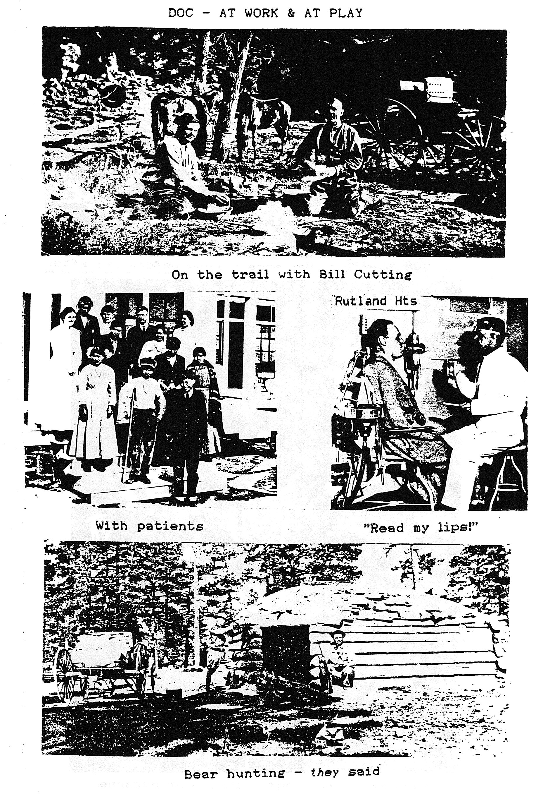
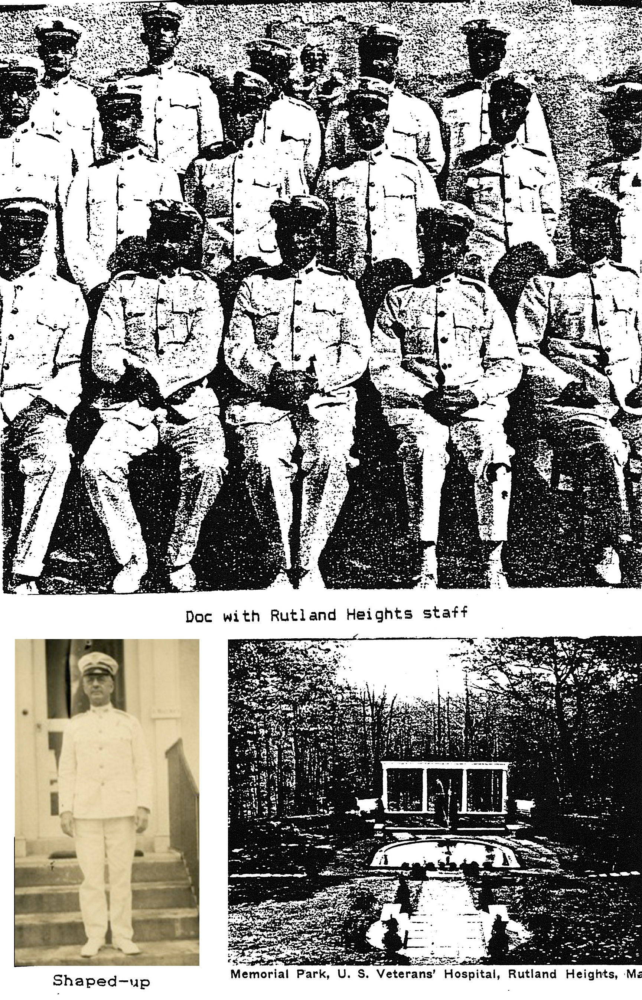
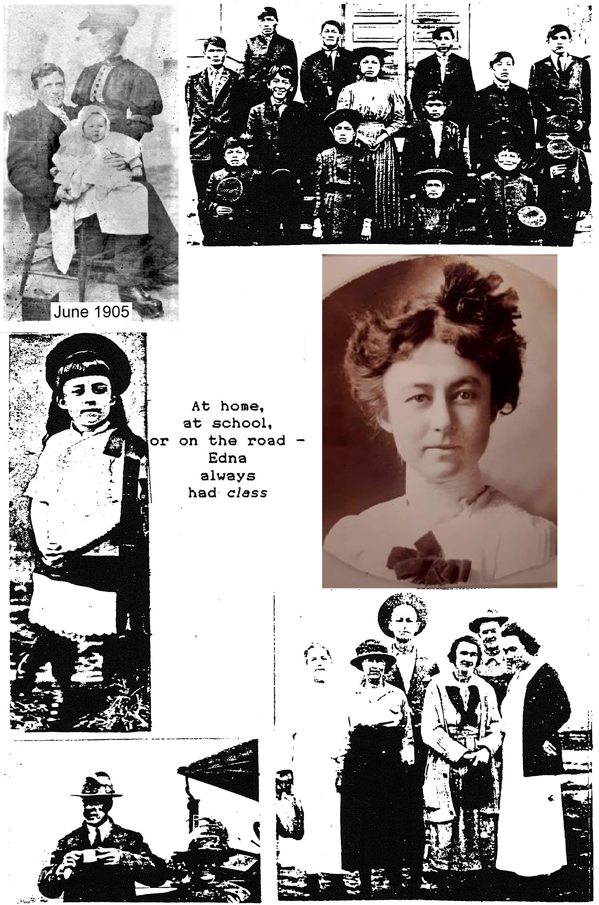

The American intellect owes its striking characteristics to the frontier. The coarseness and strength combined with acuteness and inquisitiveness; that practical inventive turn of mind, quick to find expedients; that masterful grasp of material things, lacking in the artistic but powerful to effect great ends; that restless, nervous energy; that dominant individualism, working for good and evil, and with all that buoyancy and exuberance which comes from freedom – these are the traits of the frontier. – Frederick Jackson Turner |
This all too brief memoir (largely hand-crafted by Dr. Albert M. Wigglesworth in 1958, in his 86th year) is dedicated by his children with great admiration and affection to his and his devoted spouse’s loving memory and lingering influence; and to their children’s children – ad infinitum – as a prideful reminder of an authentic frontier heritage and as an enduring source of inspiration. |
CONTENTS
PICTURES
Waterfall Ranch (Falls in background)
The Durango–Silverton Railroad
Navajo Medicine Man – Hatathli
This document is a reproduction of a manuscript originally produced digitally by Jack Wright in 1986 from the hand-written notes of its title character, Dr. Albert M. Wigglesworth. It was re-created from a printed copy of Jack’s product by his son Charles Wright in the summer of 2021, as a way of making it more accessible to future generations.
The question arises: If this is the story of the Wigglesworth clan, then who is Jack Wright? The answer, only vaguely implied in Jack’s Forward with additional ‘clues’ sprinkled elsewhere in the story, is that Jack is a nephew of the book’s title character. While that genealogical description correctly describes Jack’s relationship to Al Wigglesworth, it provides little insight to those readers who, like this editor, might describes themselves as “relatively illiterate” – that is, someone for whom Mothers, Fathers, Grandmothers, Grandfathers, Aunts, Uncles, and Cousins of multiple generations, spread across a large family tend to blur into a single indistinguishable crowd of relatives. Moreover, it doesn’t identify very precisely where Jack fits into the family tree. For clarity then, this editor adds here a brief genealogical explanation:
As you will read in the FOREWORD to follow, Al Wigglesworth married Edna Mae Wright. For reference, Jack provides a graphical representation of the Wright family tree in the Family Trees figure at the end of Chapter I – ORIGINS which depicts Edna Mae as the child of J. E. Wright and Susannah Watson. The only child depicted in that figure, she was one of eight siblings comprising two boys and six girls. Her younger brother Herbert F. Wright (himself mentioned several times (see page 199, among others) was Jack’s father, making Edna one of Jack’s Aunts. Thus the title character of this book, Al, becomes one of Jack’s uncles.
As it happened, in 1986, one of Al’s sons (yet another Jack, to whom you will be introduced in due course) suggested that Jack Wright create a context for the memoir that would give some perspective on the Doctor’s life and the contribution he made to the Navajos and to medicine. Realizing that the Doctor’s father, the 19th Century railroad construction engineer, Thomas Hudson Wigglesworth, was also worthy of note, Jack presented an in-depth review of Thomas’ story as well.
This editor’s goal was to simply re-create, as closely as possible, Jack Wright’s original product. Sadly, the original manuscript, with several of Jack’s hand-drawn illustrations, and including numerous family photographs, has been lost. Surviving copies are all the product of copy machines and, after multiple generations of copying, picture quality has suffered greatly. In order to best re-create the original, this editor recreated most of Jack’s hand-drawn illustrations to improve their legibility. Pictures of a general nature have been replaced entirely with similar pictures. Family pictures, however, were not available.
Imagine this editor’s surprise, then, when an Internet search yielded a downloadable version of an edited (and much-expanded) version of Jack’s manuscript posted by Dennis Jensen (see http://dennisjensen.us/WIGG/wigg.htm.) Dennis, it turns out, is the brother-in-law of Ann Barbieri – daughter of Jack M. Wigglesworth (who, as noted, suggested that Jack Wright create this manuscript) and the eldest grandchild of Dr. Wigglesworth. In Dennis’ edited version, you will find most of Jack’s original manuscript, plus significant additions, including comments from many of Dr. Wigglesworth’s children and grandchildren which add tremendous detail to this already engrossing story. The expanded version of this saga posted by Mr. Jensen also contains a large number of additional photos and, perhaps more importantly, extensive list of references to original source material which will well-serve anyone wishing to delve more deeply into the stories presented here.
Returning to this editor’s goal of re-creating Jack’s work, Mr. Jensen’s creation was set aside and work was begun on transforming the printed copy of Jack’s book into this digital edition. The text was recovered by scanning the Jack’s printed manuscript and then converting it to digital text using the Optical Character Recognition software provided by www.pdf2go.com. The resulting text was then painstakingly reviewed to correct conversion errors and formatted to look as much like the original manuscript as possible. Some pictures included herein were extracted (with permission from Ann Barbieri) from Mr. Jensen’s version. Other original pictures could not be located, and are retained in this edition as copied directly from Jack’s work.
This editor assumes responsibility for any and all spelling and formatting errors found in this version but takes no responsibility for the often painful attempts at humor that Jack frequently inserts, or for the sometimes inappropriate cultural references which, though they reflected the popular culture of the 1980’s, have since come to be seen unseemly as or even racist. Such remarks are retained simply because they accurately reflect the original writing.
Numerous footnotes (and a few additional photos) were added where this editor felt they would add useful detail. It is presumed that Jack would have added such footnotes had the software tools available to him when he produced the original manuscript provided the capability to do so.
This editor hopes you will enjoy reading this as much as he enjoyed editing it.
Charles Wright
September 2021
This Memoir has been compiled mainly from a hand–written manuscript crafted by 89 year-old Dr. Albert M. Wigglesworth at Carroll Manor in 1961, just three years before his death. The MS1 essentially covered doctor’s early years and education, and then focused on his quarter-century medical service to the Navajo and Apache Indians in the southwest USA from 1900 to 1925, when he was also raising family comprising three young men. This was clearly the happiest and most fruitful period of Dr. Wigglesworth’s life, which really continued until the death of his beloved wife, the former Edna Mae Wright, in 1954.
To round out the story of their life together resort has been had to other sources, especially. the archives of their two surviving sons, Frank and Jack Wigglesworth. Every reasonable effort has been made to credit published sources, which include but are not limited to the following: The First Americans, Time-Life Books, NYC; Here Come the Navajos – Bureau of Indian Affairs; 1918-1920-1922 Annuals – Franciscan Fathers of St. Michael's Mission, AZ; Padres’ Trail – Franciscan Fathers; Carrollette – O. Carm.; Trek Along the Navajo Trail – Trek, Inc., Durango, CO; Rio Grande Green Light, 15 Jul 1947 – RG RR; Sagebrush Metropolis, Durango 1880-1881 – Durango Herald, 1977; Durango Herald Democrat – 30 May 1948; the Silverton Standard & the Miner – 8 Jul 1982, 26 Aug 1982, 1982 Visitors Guide; Cinders and Smoke – Western Guideways, Lakewood, CO; Fort Defiance and the Navajos, Pruett Publishing Co, Boulder, CO; and the Smithsonian, Jul 1986. Both scenic pictures and text have been drawn from these sources. The Wigglesworth family provided the more personal pictures.
Fortified with the foregoing material, compilation of this 50,000 word Memoir was accomplished May-Sep 1986. It is sincerely hoped that family members will find the tale as interesting and inspiring as the interlocutor did in its preparation.
Jack Wright
14 Sep 1986
Every man is a quotation from all his ancestors – Ralph Waldo Emmerson
WASHINGTON STAR, 16 May 1946: About the liveliest person in Washington today is a Indian chief, Chee Dodge, He’s in town with a delegation of Navajo braves, trying to convince Congress it should ante more cash for the education of his tribe. Chief Dodge has been to the Interior Department and to the House and the Senate to explain that there are 20,000 Navajo children, but only schoolrooms enough for 6,000.
He went before the House Indian Affairs Committee yesterday to speak his piece, in Navajo. The translation was supplied by his son, Tom, who wore a tan sports coat, neatly matching tie and pocket handkerchief, and looks like the successful lawyer he is.
When he felt a point needed amplification, the aged chief would leap to his feet, shake his magnificent head of white hair, wiggle a dramatic finger, then turn -loose a torrent of Navajo. And a torrent of Navajo can leave the verbose member of Congress at a loss for words.
It turned out the old boy had a sense of humor, too. Once, without waiting for a translation, he came up with a reply in perfect English. He then explained to the astonished committee that he spoke Navajo only because many of the 22 delegates with him knew no English. “Actually I had a tremendous education for my day,” he assured the committee. “l went to school for two months.”
This is the story of Dr. Albert Matthew Wigglesworth. It is therefore also necessarily the story of the plight of the American Indian, especially the Navajo of the desert and mountain area broaching the northern ends of New Mexico and Arizona and the southern ends of Colorado and Utah. This would be the Mesa Verde and San Juan Basin areas roughly centered on the four-cornered conjunction of the aforementioned states – the only place in the United States where four states meet, and accordingly reputed to be the most photographed spot in the entire country.
The near half-century merger (1878-1925) of the Navajo Indians and the Wigglesworth clan around and south of the Four Corners area of the Mesa Verde-San Juan Basin region of the southwest USA shall be the central focus of our story. Here, these two “tribes” for all time put to rest the ‘Kipling contention that “East is East, and West is West, and never (Barbara Walters2-wise) the twain shall meet,” because, we may now say, it was precisely through the train that they did meet (about which more later). Actually, the two parties, both of which originated in the far north long ago, approached the area from opposite directions, with the Indians arriving first by perhaps a bare 25,000 years!
Navajo legends contend that their people (dineh – pronounced “din NAY”) emerged from “the underground” into the southwest USA. Don’t you believe it! Rather, it seems that the North American advent of the Indian was more or less a geological “accident” of ice-age mechanics. The essential by-product of these frigid forays was a land bridge called Beringia3 which long ago joined Siberia and Alaska. This was a lush land-link nurtured by the natural fertilizers of sea animals and plant remains. The verdant foliage lured “big game” animals from Asia, and then their hunters.
It is generally believed that this bridge was further augmented by a glacier-free corridor (estimated as no more than 25 miles wide) through northern Canada only between 20,000 to 28,000 and 32,000 to 26,000 BC4; a wall of ice as much as a mile high otherwise stretching from the Atlantic to Pacific and blocking all access south. It is generally held on the basis of artifacts scattered through the Americas that the Indians arrived about 30,000 AD! More specifically, Indians are placed at Mesa Verde, CO, by 1100 AD – which still represents quite a jump on the Wigglesworths. The initial occupants of the Four Corners area (who peaked about 1200 AD) are figured to be the so-called Anasazi, that being the Navajo word for “the Old Ones.” The era of big game is said to have prevailed from about 9000 BC, followed by a period of foraging from about 4000 BC, followed by the advent of farming around 1000 BC. Some farmers began forming villages around 300 BC. It was not until about 900 AD that the Anasazi started building pueblos, that being the Spanish word for “village.” (One of the most famous pueblos is the Mesa Verde’s Cliff Palace located in an enormous cave and containing more than 200 rooms capable of accommodating several hundred people.) Eventually, with the introduction of sheep (and horses) by the Spanish in the 14th century AD, the Navajo (“Successors,” with the Apache, of the Anasazi) became an essentially pastoral people, but also renowned for their artistry with turquoise-ornamented silver jewelry and the weaving of baskets, blankets and shawls.
One interesting sidelight of the latter two crafts is the frequent adornment of their products with the design known as the swastika. Most people born since the 1930’s will most likely recall it with repugnance as the symbol of arrogant racial superiority flouted by Hitler’s Nazis. That’s really too bad, because the symbol has a more noble connotation as reported in the 1972 Annual of The Franciscan Missions of the Southwest. The Ae’Nishodi Biae Danaezigi, or Men Whose Robes Drag in The Dust – or more simply Long Robes, report therein that extensive research reveals the swastika in fact to be a fitting symbol of “the ethnic unity of the human race” – in virtue of its prehistoric origin and almost universal use. It is to this day the principal ornament with which some Indians deck themselves for the performance of their religious ceremonies.
Ruth Underhill’s Here Come The Navajos suggests that, “The key to the Navajos comes through their language.” With the exception of the related Apache, it is unlike that of any other Indian tribe. “Navajo sounds and Navajo grammar are entirely different,” according to Dr. Underhill. They have no f, p, q, r, v, or x – although all are used for renderings in English, and consonants predominate. War buffs will recall that, precisely because of the uniqueness of their native language, Navajos were pressed into service as telephone and radio communicators in the front lines during WWII. The Army first stumbled on this bonanza in WWI. It was a unique service providable only by our American Indians. Most of their languages had never even been written down, and Navajo was further complicated in that translation was never word-for-word. (For example, “Hitler” was automatically transposed to Mustache Smeller, and Mussolini to Big Gourd Chin, while Doc would become Medicine Man With Limp and son Frank would be known as Turkey Egg because of his many freckles. Incidentally, the Wiggs5 treasure copy # 153 of a 325 copy edition of a two volume Vocabulary of the Navajo Language produced by the Franciscans at St. Michael's, AZ, in 1912.) The Navajo code-talkers operated from Italy to New Guinea in the South Pacific. Some 375 of them had been recruited into the MarCorps by the end of WWII. The Navajo language is traceable to tribes inhabiting northern British Columbia and Alberta, the two westernmost Canadian provinces bordering the USA. The language is called Athapascan (variously “Athabascan” – there being as many spelling versions of Navajo words as of the name Gaddafi6, rhymes with daffy,) due to its orientation around Lake Athapasca – Lake of the Reeds, or (in Navajo) there is scattered grass.
Another interesting sidelight of the language is the nature of Navajo names, (For religiously inclined readers, the Navajo rendering of “Jesus Christ” is Doodaa-Tsaahi, which is not to be confused with Zippity-Doo-Dah or Doo-Dah-Day. Knowing this, one still should go to church on Sunday.) The name “Navajo,” incidentally, means great planted fields. It might more appropriately have meant “adaptability,” since that is what characterizes the Navajo in great measure. They readily undertook to learn a whole new way of life as farmers and herdsmen, whereas the more nomadic Apache stuck largely to foraging and was a generally nasty neighbor. In fact, Apache is the Zuni word for “enemy,” and Geronimo (1829-1909) was still warring against the US (not without cause) as late as 1885-86 (although he eventually became a Christian and marched in Teddy Roosevelt’s 1904 inaugural parade). Nor was the wily and courageous Cochise (1815-1874) often mistaken for a really nice guy – especially after 1861 when soldiers unjustly hung several of his relatives. (Even Edgar Rice Burroughs of Tarzan fame was moved to write two 1927 novels focused on Geronimo or Goy-ath-lay – the Man Who Yawns. At one point, he has the wise old chief say, “Some day the Nalgai Lagai (white eyes) will keep the words of the treaties they have made with the Inizhini (Indians) – the treaties they have always been the first to break.” Well, one can hope.)
The Navajo used no surnames, but had both “private” and public personal names. And, like most other Indians, they did not call each other by the highly poetical names common to novels and old movies, such as Fleet Antelope, Running Bear, or Soaring Eagle. (Once again, this paraphrase is all courtesy of the Long Robes.) On the other hand, one frequently met such prosy names as The Liar’s Son, Frozen Feet, Mister Mud, Little Horse Thief, Squint Eye, or Club Foot. For this reason Navajo were never addressed by the name under which known. It would be an offense against decorum and usually not at all flattering. Hence their bashfulness, too, when asked their name. They’d hedge by saying Holla; the equivalent of the Spanish Quien sabe for “I don’t know.”
It shouldn’t be surprising, then, to learn that most Navajos assumed a second or “public” name which they used in normal commerce. This practice was virtually forced upon them by book-keeping incident to their wanting to be paid. Needless to say, these self-chosen names were more complimentary, as for example, the equivalent of Mr. Tall Man – Qastqin Naez. It should go without saying that English translations are generally inaccurate. Thus, Black Horse is not a proper translation of Bili Lizhini which literally means “He whose horse is black.” Little wonder, then, that the Navajo were generally addressed by the more generic Qastqin, which is “Mister,” the equivalent of Senor in Spanish. It only remains to remark that The Lone Ranger did his faithful Indian companion no honor by calling him Tonto, which is Spanish for “Crazy.”
Perhaps the most remarkable thing is that shortly before 1300 AD this way of life came to an abrupt and mysterious end in much of the southwest. Why it did is a mystery even today, but the most likely explanation seems to be the abundant evidence of a severe drought that apparently gripped the region toward the end of the 13th century. This would not, of course, explain the failure of the Pueblo to return to their monumental villages. It seems most likely that they discovered that their lands had in the interim been taken over by more war-like tribes. Thus, it is generally concluded that the Athapascan predecessors of the Apache and Navajo infiltrated the area through the 12th to 15th century AD. These folk were skillful warriors with a new weapon, borrowed from the Eskimo – a bow backed and strengthened by springy sinew which made them the fastest, hardest, straightest shooters in the west – as the Spanish, Mexican and United States’ governments were to discover in turn. It is said that even today Zuni mothers frighten naughty children by telling them that the Apache will come and get them. (The bulk of this early Indian lore is derived from TIME-LIFE’s The First Americans.)
Continuing our historical stage-setting, the Spanish incursion, principally along the Rio Grande valley, generally transpired between 1540 and 1821. The Spanish explorer Coronado swept up from Sonora, Mexico, opening up the American southwest in 1540-42, searching for the fabled seven cities of Cibola. Legendary for their gold (El Dorado,) they are believed to have been in the general area of the Zuni country around Santa Fe and, in fact, Zuni, NM, is the only one of the “gold-less” seven cities that survives. (One group split off from Coronado’s party to the west and discovered the Grand Canyon.) As recently as 30 Jun 1986 the Washington Post reported the possible finding of one of Coronado’s 16th century camps – the first non-Indian campsite found in New Mexico – revealing seven iron horseshoe nails, a sewing needle, a piece of metal horse harness, and burnt beans and corn kernels, together with fragments of pottery of a type made and used by the Spanish in the 1500’s. The Indians at that time had neither horses nor iron. Note that Coronado’s settlements preceded the more familiar colonization of our east coast!
Following its independence from Spain in 1821, Mexico became monarch of the southwest until the invasion of U.S. troops in 1846. The treaty of Guadaloupe Hidalgo ceded the area to the U.S. on 2 Feb 1948. Neither Spain nor Mexico ever succeeded in subjugating the Navajo. It would take the U.S. 17 years (although front-page 7 Jul 1986 newspaper headlines suggest that in their land dispute with the Hopi and the U.S. government the Navajo may not be fully subdued even yet). The first foray by the U.S. against the Navajo was concluded at what would become Ft. Wingate in a peace treaty on 22 Nov 1846. During the next 15 years six other treaties would be drawn up, agreed to, and signed: at Beautiful Mountain (20 May 1848), at Chinle (9 Sep 1849), at Pueblo of Jemez (HAY-mess, 15 Nov 1851), at Laguna Negra – just north of Ft. Defiance – (18 Jul 1855), and at the eventual Ft. Wingate (25 Dec 1858 and 18 Feb 1861). Only the first (1848) treaty was ever ratified by the U.S. Senate. Also, during this period the first military post in Navajo country was established at Ft. Defiance on 18 Sep 1851. The latter would be the birthplace of all four of our hero’s children.
It should go without saying that these treaties were mostly honored in the breach by both sides, although the U.S. managed the best PR, and generally succeeded in placing the onus on the hapless Navajo as war alternated with peace into the spring of 1863. At this point the U.S. determined upon an all-out war to subdue the Indians once and for all. Col. Kit Carson was chosen to spearhead this effort. He succeeded with a Sherman-like “scorched-earth” campaign that wiped out the Navajo shepherds and other livestock, devastated their cornfields and orchards, burned their hogans, and generally lay waste to their country and destroyed their economy. The Navajo were virtually starved into submission. Eventually, half of the tribe (some 8,000) yielded to the 400 mile Long Walk from Ft. Wingate (near Gallup) to internment on a 21 acre plot at Ft. Sumner on the Pecos River in eastern New Mexico, where they were to remain for the next four years as President Lincoln proclaimed it a Reservation. (In 1881 Billy the Kid fared less well, being put to rest there permanently by a bullet from Sheriff Pat Garrett.)
Conditions at Ft. Sumner were euphemistically described as “far from ideal,” which hardly conveyed the notion of Comanche raids, crop failure, insect infestation, bad water, the depletion of wood for heating and cooking, and the rampant sickness and disease that prevailed there. Little wonder that by the end of four years the Navajo were making ardent overtures for a return to their homeland. This was met by the U.S. dispatching no less than General Sherman himself (of the devastating “Atlanta march to the sea” fame) as negotiator. Offered a choice of being sent to the Indian Territory in Oklahoma – of ultimate “Cherokee oil7” fame – the Navajo opted overwhelmingly to return to their homeland in a final treaty formalized on 1 Jun 1868. Their trek began two weeks later, in the company of their first Indian Agent, Theodore Dobbs. Soon after, Ft. Defiance was designated the-first Agency Headquarters. Dr. Wigglesworth would make the scene in Dec 1904, One might be forgiven for conjecturing that his contribution to their improved health played a significant part in the Navajo being the largest tribe in the U.S today, numbering about 160,000 in 1980.
So, now, whence the Wigglesworths to Ft. Defiance and their tryst with the Navajo anyhow? Well, they were initially rooted in the far frigid north also, but in the Scandinavian rather than Siberian area. Our European brothers, of course, only reached our shores via the Atlantic in the 15th century, and thereupon set about with a vengeance to eradicate the Indian culture they encountered much to their surprise. They did a pretty good job of it, too, but our hero was not a party to it – about which much more later. If, before moving on, we might pause a moment to conjecture a hypothetical conversation overheard by an Indian between, say, Leif Ericson and Columbus as to whom was the true discoverer of America, we might well expect him (or her – equal time!) to explode, “Discover? Hell! We knew it was here all the time!”
Nevertheless, the Wiggs clan came a long, long way. It all began when the Norsemen from Scandinavia invaded the Franks in the 10th century. (Vikings is a more generic term for these fearless adventurers, and includes those bound for the New as well as the Old World.) The Franks were a Germanic tribe that settled along the Rhine in the 3rd century. Under our old high school history acquaintance, Clovis I, they moved into Gaul (the land roughly west of the Rhine and north of the Pyrenees, and which is perhaps best remembered by novice Latin students as being “divided into three parts8”). In. any event, the kingdom of the western Franks became France in 870. (Yes! There will be a quiz!) With the coming of the Norsemen the northwestern corner of France eventually became known, as it is even today, as Normandy (just “think” D-Day). This seems as good a time as any to remark that the Anglo-Saxons were yet another Germanic tribe originally situated at the mouth of the Elbe (look it up9) who conquered England in the 5th to 6th centuries. Now you understand why English bears such a close phonetic relationship to German.
Anyhow, beginning about 841 the Norsemen regularly penetrated and plundered as far as 75 miles up the Seine to Rouen, and even on to Paris. Their occupation was finally formally sealed by the treaty of St. Clair-sur-Epte in 911 which established Rouen as the capital of Normandy, and the Norsemen leader, Rollo, as the first Duke of Normandy. (Rouen may be even better remembered as the site of Joan of Arc’s flaming farewell in 1431 – certainly it was by Joan). Rollo prevailed until 931, to be succeeded by the second Duke of Normandy, William Longsword.
There now followed a series of Dukes: III – Robert the Fearless (942), IV – Robert the Good (996), V – Robert the Devil (1027), and VI – William (1035). The latter really changed things, putting down a rebellion of nobles in 1047, and culminating a Norman penetration of England in 1050 at the battle of Hastings (14 Oct 1046) in which he, as William the Conqueror, overwhelmed the English (killing King Harold II, the successor to Edward the Confessor – of five pound crown10 fame). He was Crowned King William I on 25 Dec 1064. This was at about the same time that a comet, to be known as Halley’s, put in its first recorded appearance.
Now the scene shifts somewhat and the plot thickens. So, where are we? In England, at last, or, to wax poetic: Oh, to be in England, now that April’s there… (Credit Robert Browning.) But wait, we must back-track a bit. It seems that about 950 AD there lived in Normandy (near Rouen) a man named Herfast, but known as the Forester of Equipqueville. He had five very beautiful daughters. He is thus described as the Lucky Forester, since these nubile Normans all married prominent knights from whom descended most of the nobility of Normandy, which later became the nobility of England. (You don’t have to take our word for it, see Freman’s History of the Norman Invasion.) The first daughter became the spouse of the Earl of Hereford, the second of Earl of Warwick, and the third of the sire of the Earl of Buckingham. The fourth daughter wed the third Duke of Normandy, whose grandson was to be William the Conqueror. Finally, the fifth sister married Godfrey, brother of Osbern de Bolbec, and if you’ll just be patient, we’ll next recount how the Wigglesworth clan evolved in due course from this latter stem. We first wanted to establish (through the relations – if you’ll pardon that expression – of the fourth and fifth sisters) how the Wiggs can claim a lineage back through William the Conqueror.
Well, the fifth sister and Godfrey had a son, William, Vicompte de Arques (III). He had two sons, William (IV) and Osbern (IV), both of whom survived the battle of Hastings (1066) and are to be found in the Domesday book of English land-owners with substantial holdings in Yorkshire and Lincolnshire in northeast England. Guess what? Osbern (IV) had two sons, William (V) and Osbern (V), and the former had a son, William (VI). Good grief, Lucy11! With both of the only two male names this branch apparently knew now already used, what was poor William (IV) to name his male progeny? Mysteriously, it is precisely at this point that this line disappears from the records without a trace. Meanwhile, retribution was swift for Osbern (IV), since his grandson, William (VI), had no male off-spring and this line too became extinct. Now, it was all up to William (V), and he managed both a son and a new name – Peter (VI), who came through handsomely by spawning four sons. Well, suffice it to say that the line continues to William (IX,) who partially anglicized his name from William de Arques to William de Arches. Now, it happened that this William (and perhaps his father) owned the ancient property and town of Wykelsworth, which derived its name from the old Saxon name of Wykel, and Weorth, the old English for farm or estate, and thus came down through the years as Wykelsworth.
Now, it also happened that at about that time there were three or possibly four William de Arches living in this part of Yorkshire. It is not surprising, therefore, that our William chose to distinguish himself by appending de Wykelsworth to his name. There may also have been a further reason for the name change. Along about 1189 his father’s uncle, Gilbert, had rebelled against the king, and was captured and his property confiscated. This disgrace may also have impelled our man to disassociate himself from the de Arches. In any event, the Wykelsworth fortunes prospered, and the clan for generations occupied Wykelsworth Manor, comprising some 4500 acres (about 7 miles square). By the 16th century the family name was variously spelled Wykelsworth, Wigglesworth, Wiglesworth, and even Wrigglesworth, but life went on. It went on, in fact, all the way to Palmyra, New York, where emigrant Matthew Wigglesworth died in 1873.
We shall pursue the thread of this family story in the next chapter. Meanwhile, a few observations seem pertinent. First, a word about the Domesday (pronounced doomsday) Book – evidence supreme of the extraordinary 900 year continuity of the British government. It is a comprehensive land register and demographic survey commissioned by William the Conqueror 20 years after the Battle of Hastings – which evolves landholder-by-landholder and almost field-by-field. The name derives from the book being so formidable as purportedly to suffice as a record for doomsday itself. It is currently being converted to computers, which has been likened to straightening up the leaning Tower of Pisa, even as describing the book as a survey has been likened to saying the pyramids are graves.
Second, following the evolving and ultimately merging histories of both the Navajo and the Wigglesworths, one can’t help but be struck by the recurring theme of their violent struggle for survival as wars succeeded wars. That’s the bad news. Lastly, there is the good news: one is also impressed by a gradual but steady transformation toward civility. It should be a matter of no small comfort in these trying times, haunted by the memory of two World Wars and ever-threatened by potential nuclear disaster, that mankind is improving. In a sense, that is what this story is all about. The Wigglesworths, personified by a compassionate Dr. Albert M. Wigglesworth, confronted the Navajo in the Four Corners area of the southwest United States, and the ministrations of the good doctor will do much to mitigate the Indians’ anti-white instincts as nourished by the deplorable injustices inflicted by earlier white pioneers and their government. Our story, then, is that of the pilgrimage of mankind in microcosm.
We’re all omnibuses in which our ancestors ride. – Oliver Wendell Holmes
Nearly every American adult remembers the Bear, the late great Alabama football Coach, Paul “Bear” Bryant. Most “senior” sports fans recall the two Baers; Max, who won the World Heavyweight Boxing Championship by KO’ing Primo Carnera in 1934: and younger brother Buddy, who was one of Joe Louis’ Bum of the Month victims in 194114. And surely everybody has heard of the three bears made famous by that prototype hard-to-please vixen, Goldilocks. But, what about four bears? How many people really know very much about their forebears? (Sorry about that, folks!) The question had to be asked in a palatable manner, and we shall now attempt to answer it for the Wigglesworth clan as descended from our protagonist, Dr. Albert Matthew Wigglesworth, hereinafter affectionately referred to as “Al.”
We have already traced the Wigglesworth strand of Al’s ancestry from Scandinavia, via France and England, to New York state at some considerable length. It is only fair, then, that we interrupt that story at this point to inject some background concerning the strand that produced Al’s wife. Family tradition has it that the Wright clan, which spawned Al’s devoted wife, Edna Mae Wright (whom we shall meet shortly), traces it’s ancestry as far back as William Penn. Unfortunately, no documentation on this point comes readily to hand. We can, however, be a little more definitive regarding this branch of the family from about the same time (the late 18th century) that we find the Wigglesworth clan established in the United States in Palmyra, New York. Specifically, the maternal line of Edna’s family is traceable to the marriage of Elizabeth Green and a W. W. Dorney, both of Harford County, Maryland, by the first American Catholic hierarch and founder of Georgetown University, Archbishop John Carroll, on 11 Sep 1796. The amazing aspect of this branch of the Wiggs family tree, on both the paternal and maternal sides, is that it was DC-Maryland centered for generations.
Now, the Dorneys had a daughter, Maria Agnes, who married Benjamin Thomas Watson of Prince Georges County, Maryland. They, in turn, had a daughter, Susannah Cecelia, who became Edna’s mother. Susan, as she was called, was the youngest of nine in a family of seven girls and two boys. In due course she married Edna’s father, Johnson Eliot Wright, son of Benjamin C. Wright, who was born in Alexandria, VA, when it was still part of the District of Columbia. Edna’s father had a great uncle, Robert Wright, who was Provost Marshal of Bladensburg during the Civil War. Robert had inherited a gold watch as the then eldest survivor of another Wright which was inscribed: “Prescribed to ------ Wright by General Lafayette, for taking care of him while he was wounded.” Edna’s father had another great uncle, Judge James Wright, who was Chief Librarian of the Department of Justice. As for himself, “father” Wright had served in the Finance Branch of the War Department. Upon retirement, a formal testimonial acclaimed him to be “a Christian and a polished gentleman of the old school, very loyal, and an assiduous worker.” He was also a good husband, and together with Susan spawned eight children, six girls and two boys, of which our Edna was the eldest. In his retirement, he became the secretary for the Association of the Oldest Inhabitants of DC, a position in which he continued his “loyalty” and “assiduous” working habits until his death.
Before moving on, mention must be made of Edna’s father’s older brother, Herbert. He began work at 16 as a telegrapher for the Baltimore and Ohio RR, where he eventually rose to become Chief Operator. He next switched to Western Union as chief night operator of its Washington office. Then followed a brief stint with United Press. From there he moved on to become a telegrapher in the Adjutant General’s Office of the War Department, where he became renowned as “the best and fastest” in the city. He would eventually complete 30 years of government service, including being in charge of the cable and telegraph work of the entire military establishment, including the coding/decoding of official cipher messages. Much of the latter traffic during WWI was, of course, “of the highest national importance.” Because of his efficiency and expertise, his tenure was extended for three consecutive two year terms beyond the then mandatory retirement age of 70. Surely such performance is a proper matter of family pride and warrants this brief memorial paragraph. Now, back to our story.
In sharp contrast to the geographical stability of the Wright clan, so deeply rooted in the general area of the nation’s capital (and a tradition from which Edna was to deviate with happy results that shall bear on the substance of our story), the Wiggs clan persisted in its nomadic heritage. We pick up the thread of this tribal evolution with Al’s grandfather, Matthew Wigglesworth (1794-1873) who migrated from Liverpool, England, via Canada, to Palmyra, New York. There is no accounting for how this shoemaker so directly descended from English nobility happened initially to settle in this small village, of less than 4,000 inhabitants, located on the Barge Canal south east of Rochester in west central New York. (Joseph Smith also lived in Palmyra, and published the Book of Mormon there.) Not to worry, the Wiggs didn’t remain there long. Somewhere along the way Matt married an Elizabeth Hudson, said to be related to the Henry Hudson. For our purposes, at least, their crowning achievement was son Thomas Hudson Wigglesworth, Al’s father.
With the advent of Tom Wigglesworth at Palmyra on 31 Jul 1835 this story really (we sincerely hope) “takes off” at last, and your interlocutor at once suffers an embarrassment of riches with respect to source material. The simple fact is, Tom Wigglesworth was quite a man! Our fervent hope is that we may do proper justice to his truly frontier’s-man character. The latter was quick to reveal itself. He ran away from home at age 13, all the way to Kentucky. Though he would never grow to be a big man, even as a youngster he was evidently both sturdy and audacious, becoming an axeman for the Louisville and Nashville RR. He was also observant and ambitious, and so returned to New York at 19 to study trigonometry in order to become an engineer. Then it was back south again, this time to Tennessee. It was at Fountain Head, TN, that he met Ann Spradlin, whom he married on 14 May 1863. They would have seven offspring, numbering five boys (including their last child who would survive only two years in Colorado) and two girls. Al would be the fifth child and third son. Perhaps his placement in the middle of this considerable constellation of “kinder-folk” accounts for his calm, moderate and totally balanced temperament and uncommon humility.
As for Al’s brothers and sisters, not too much is known, except for younger sister Emily Elizabeth (later Mrs W. H. Howard of Animas City, CO, whom we shall meet again briefly incident to the introduction of the first Silver Vista observation coach on the Durango-Silverton RR run on 22 Jun 1947), and brother William Hudson Wigglesworth and his son James. Hill was born in Parksville, KY in 1866, and traveled to Durango with his parents in 1881 where he died in 1946. At various times in the interim he held nearly every public office in Durango and La Plata county, serving as Durango city manager for 14 years, and as city and county engineer, Magistrate and justice of the peace. During his colorful engineering career he also spent time in New Mexico, Arizona, Florida and Mexico. He worked on the construction of the Durango-Silverton RR run and later as surveyor on the Crystal River RR in Pitkin county. Then followed two winters in Chihuahua, Mexico, on the RR from Juarez toward the Sierra Madre mountains. He also surveyed Indian allotments and irrigation canals around Ignacio, CO, and the Perin’s Peak RR.
He went to AZ in 1910 for four years surveying Indian allotments to the Papago. He also did a stint as mill man at a gold mine, and assistant city engineer in Ft. Lauderdale, FL, eventually returning to Durango where he surveyed the water system which serves the city even today, and also built the Narraguinnep Reservoir north of Cortez. The nomadic instinct of their Norseman-Norman heritage clearly lived on through Tom and sons Bill and Al Wigglesworth. These fellows really got around. So did Bill’s son, Major James Wigglesworth. A graduate engineer, he served nine years in the state highway department. Then, after extensive military training in OK, KS and MS, Jim saw four years service beginning in Jan 1945 as a ground liaison officer with the 7th and Patton’s 3rd Armies in France, Germany, and Austria, penetrating to the Enns river link-up with the Russians. With the peace he reverted to Augsburg, Bavaria, where he was charged with feeding, housing, and relocating displaced persons – an experience that would stand him in good stead following his discharge. He returned to Durango to become city manager in Jan 1946, following in his Dad’s footsteps. And, as with Dad’s footsteps, Jim’s soon started spreading out. After five years, he resigned his Durango post to become city manager of Russell, KS, at a substantially larger salary. The pioneering spirit apparently dies hard.
Meanwhile, and before dealing with the remarkable engineering feats of old Tom Wiggs, what do we know about his wife, Ann Spradlin? (Hey! You can’t tell the players without a score card. Maybe you should be taking notes.) Well, as we’ve mentioned, Tom caught up with her in TN, but before going forward, we had best take a short look backward. On the paternal side of Ann’s family tree there is a dearth of information. We only know that her father’s name was John, and that he married Emily Hodges on 22 May 1839. We are a sprite more fortunate with respect to the maternal side of her family ancestry. Emily Hodges was said to be a cousin of Henry Clay. Beyond that, we are able to trace back two more generations to an Elizabeth Clay married to an Isham Hodges (born 18 May 1763). They owned 600 acres in Henry county, VA (on the southern border, on a line between Roanoke and Greensboro). Regrettably, this attractive if modest estate was confiscated by the government, since Isham unaccountably remained a British citizen. So, all Isham really “left” (and his will of 14 May 1782 is still on file and suitably inscribed with “his mark”) was 11 children. Finally, we know that Ann Spradlin died in Durango on 19 Dec 1934, (Whew! It’s Miller time!) Now, we can proceed with the story of Tom (and then Al) Wigglesworth.
We left off with Tom in KY after completing his math studies in NY, and we noted his marriage and the subsequent spawning of his seven children. Now, let us take up Tom’s engineering career, which was largely performed in the service of our then still expanding RR system. Son William recorded (Pathfinders of the San Juan Country – Vol III) that the early history of the RRs of the San Juan Basin (most of which were Tom’s work) was eloquent testimony to Tom’s legerdemain as RR location and construction engineer. He went on to recount that Tom started his career in a RR working party under his older brother John around Fountain Head, TN. John was location and construction engineer for the Louisville and Tennessee RR. During the Civil War Tom served as a freight conductor on that road. When the war was over and RR building was resumed, Tom returned to his first work and rapidly advanced from axeman to rodman, and then to instrument man. Then he was appointed location and construction engineer for the Knoxville branch of the Louisville & Nashville RR. After service with several RRs around Parksville, Elizabethtown and Louisville, KY, Tom answered the call of the West, and took off to check out the Black Hills of SD in 1877.
He then returned to his homeland for a brief respite, but by 1878 he was back in the West to stay, and working for the Denver and Rio Grande RR. It was then that his reputation as a pioneer RR locating and construction engineer was really made, beginning with his settling in around Durango, CO, where he was to die on 16 Mar 1909. He established some 600 miles of track in this mountainous southwest CO area, including putting the first narrow gauge line into the Rockies, and the surveying of the famous Moffatt tunnel (a 6.4 mile tube at 9,100 feet across the Continental Divide and piercing James Peak WNW of Denver), which was completed in 1922-27 after his death. As Chief Engineer he also put in the lines from Durango to Mancos and Dolores, and from Colorado Springs to Cripple Creek and to Leadville, of which latter he said, “Other engineers said it couldn’t be done, but there it is.” Incidentally, Cripple Creek once surrendered $25 million in gold in one year. In the early 1980’s it was reactivated when a steep rise in gold prices made mining there profitable once again. Leadville, formerly Oro (Gold) City, is the highest (over 10,000 feet) incorporated city in the USA. Gold in its California Gulch attracted 5,000 people into a five mile strip there within four months in 1860.
You may have noted that we said that Tom settled in at Durango in 1878, whereas we reported earlier how son Bill (and presumably the rest of the family) went west with Tom in 1881. Actually, Al’s memoirs will clear up this seeming discrepancy. (Be patient! We promise that we shall get to them, and soon!) What happened was that the family joined Tom (who had preceded them to CO) in the spring of 1881. A complicating factor was that Durango (a name strangely of Moorish origin and meaning concourse or meeting place) was not established until 1880. Be that as it may, and thanks largely to Tom Wiggs and the RR, a concourse it certainly became. In the halcyon period of 1900-1912 it had four RRs converging from the four cardinal points of the compass.
Now, you might say that Durango and the RR were almost a “chicken and egg” proposition as to which came first, but you would be wrong (and in any event the Wiggs clan would have been on hand for the greeting). Actually, it was RR policy simply to bypass non-cooperative towns, leaving them to wither and die, even as new towns along the chosen route were, as was Durango, actually designed by the RR. In fact, the present day Animas City (two miles north of Durango on the Durango-Silverton run) is the second so-named city, the first (15 miles north of Durango) having been supplanted thereby through RR manipulation. The D&RG15 was perfectly willing to work with charitably disposed communities. This might mean the donation of a right-of-way or a depot site, the purchase of RR stock, or even help in grading part of the line. If such aid was not forthcoming, the RR just proceeded to establish a rival community. Such is the alleged American Way. “Animas City,” by the way, is really a sort of shorthand for the full name of the river for which it is named – River of Souls Lost In Purgatory – which in itself gives you as good an idea as anything else of the tortuous, testing nature of that formidable territory.
Durango (1986 pop. – 11,400), variously called the Sagebrush Metropolis, the Magic Metropolis, the “Denver of Southern Colorado,” and even more accurately “the child of the RR,” really (as with other settlements in the area) owed its existence to the gold and silver found in the San Juan Mountains. (The heavily mined 14,150-foot Mt. Sneffels yielded $35 million in gold and silver by 1889.) It’s future was assured when the San Juan & New York Smelter was relocated there from Silverton in 1880. Durango was not itself a conventional frontier town. It was a miracle of “instant urbanization.” It had three newspapers by 1881, which is two more than the capital city of the leading nation of the free world – Washington DC – had in 1981. And these weren’t light-weight entries common to many boom-towns. In fact, one of the area papers (nearby Ouray’s Solid Muldoon) counted Queen Victoria of England among its subscribers. Typical of its prosperity and sophistication was a Christmas newspaper ad of the period: Fur-get and fur-give!
Of course, Durango also suffered the maladies of most fast-growing mining towns: shortages, high prices, lawlessness, violence – and the ubiquitous female “prospectors” whom they called shady ladies of the eighties. In Durango they occupied a two-block strip between the RR spur and the Animas river. The houses included the Variety Theatre, the Silver Bell, the Clipper, the Hanging Gardens of Babylon – a curious name for the only one devoted to lynch-conscious blacks, and simply Bessie’s, Jennie’s, Hattie’s, and Nellie’s. More generously, they all went under the euphemism of “dance halls.” Indicative of the times is an epitaph found upon a tombstone in nearby Ouray (“Your-A” – for a famous multi-lingual Ute Indian chief), thus:
Here
lie the bones of poor old Charlotte,
Born a virgin but died a
harlot;
For eighteen years she preserved her virginity,
A
damn good record for this vicinity.
Notorious neighbors and visitors from nearby Creede (68 miles to the northeast) included Robert Ford, Martha Cannary and William Barclay Masterson. You say they don’t ring a bell? How quickly we forget. Ford was the bozo who shot Jesse James in the back and got a dose of the same for his trouble 10 fearful years later. As for Martha, perhaps you’d recall her more easily as Calamity Jane. Bat Masterson, of course was the legendary non-gun-drawing peace officer imported to bring law and order to Silverton before moving on to New York as a newspaperman. More recently, attention has been drawn to the area by artist/rancher Fred Harman, originator of the comic strip Red Ryder. Then there was Alferd (sic) Packer, the sole survivor of a six man trek into the San Juan Mountains in the winter of 1873. With the Spring thaw, Packer was found guilty of murder and cannibalism. Years later the whimsical students at the University of Colorado would vote to name their dining hall the Alferd E. Packer Grill. So it goes…
By now you may have forgotten that this is purported to be the saga of the Wigglesworth clan. Remember, though, that you were warned at the outset of this segment that we confronted a wealth of material. Anyhow, you surely must now have a much better feel for and flavor of the times and the territory, and that’s the whole point of the immediately preceding mish-mash. It was sort of a stage setting for the scene into which our central hero, Doctor Al, would be introduced at age 9 in 1881. Before moving on to Al, however, we should complete the dossier on his father, Tom. (Even so, we shall reserve to the next chapter the story of what we shall choose to regard as Tom’s crowning engineering achievement – the locating and construction of the D&RG’s Durango-Silverton line in 1881-82.) Let us begin our summing up by simply quoting in full his biography from the Biographical Directory of Railway Officials of America, thus:
Born 31 Jul 1835 at Palmyra, NY; entered RR service 19 Nov 1854, since which he has been consecutively (1854-67) axeman, rodman, assistant resident and division engineer, Louisville & Nashville RR; (1867-72) division engineer, Elizabethtown & Paducah RR; (1872-73) chief engineer, Memphis & New Orleans RR} (1874) engaged in building Cecilian branch, Elizabeth & Paducah RR; (1874-77) contractor, Louisville & Nashville RR; (1879-84) on Denver & Rio Grande as follows: (May-Jun 1879) leveler; (Jun 1879-Jan 1880) locating engineer in charge of construction of Silverton branch; (Jan 1890-Sep 1882) in charge of Utah extension; (Sep 1982-Feb 1884) general engineering work; (Apr 1887) also chief engineer Utah Midland RR: (present: 1893) chief engineer for construction, Crystal River RR.
Well, so much for the nitty-gritty facts, but that still doesn’t tell you very much about the character of the man. So, we have yet another biographical synopsis which elaborates a little, and we include it here in full:
Mr. Wigglesworth was born in New York in 1835. He was just old enough, after he received some engineering training, to be useful to the Union Army in the Civil War. He built and maintained track, especially in Tennessee, during that time. After other ventures in his chosen work, he made his appearance in Colorado in 1879. He spent the next two years with the D&RG, surveying and constructing crews that were then building a railroad from Antonito (100 miles east) to Durango. [The Antonio (CO) to Chama (NM) section of this line survives as the tourist-attracting Cumbres-Toltec Scenic Railway to this day.] In 1886, he was chief engineer with the Midland Terminal in Eastern Colorado. As chief engineer and constructor, he was responsible for three pieces of railroad in the San Juan:
The D&RG from Durango to Silverton, 45.63 miles, in 1881-82. The story is told (and a picture shows) that during surveying through the canyon just north of Rockwood, men had to be let down by ropes from the top of the mountain above, to peck out a line along the granite cliffs. To look at it one does not doubt.
The south part of the RGS16 from Durango to Dolores, 58.75 miles, in 1890-91.
An extension of the Silverton Northern from Eureka to Animas Forks, four miles, in 1904 (which entailed 7-1/2% grades – the maximum for steam railroads].
Wigglesworth made many more railroad surveys in the San Juan than any other engineer, which rather bespeaks his ability. Following is a list of those which can be verified:
From Las Animas River up to Hermosa Creek and dawn Scotch Creek to Rico, then down the Dolores River, through Lost Canyon and over Chama Pass to Durango, in 1881.
From Silverton to Red Mountain and Ironton Park, in 1881.
Down the Las Animas River, down the La Plata River and down the Mancos River to the Farmington area, as part of a projected RR to Phoenix and Los Angeles, in 1890-91.
From Algodones, NM, to Farmington and Durango areas, and thence to Utah, as part of a proposed RR to Salt Lake.
From Durango to Clifton, AZ, in 1901.
From Animas Forks to Lake City in 1904.
“Old Wig’s” ingenuity was remarkable. [Original manuscript note: He was familiarly known in this country as Old Wig. Other appellations recently used for him have no basis in fact.] He was able to surmount almost any difficulty with some makeshift of his om. Vest Day tells of a survey crew crossing the AZ desert with no way to measure the mileage. Wigglesworth tied a can to the buggy wheel and then the men (three of them) took turns of one hour each, counting the bangs of the can as it hit the ground. The number of revolutions times the circumference of the wheel quite accurately determined the mileage for that day.
“Old Wig” was notorious for his “Kings English.” He could tear off a lot of it to fit any and all occasions. He had a quick temper, an acid tongue, and was exacting with his employees. Yet he could be very kind. Marion Speer tells of working for him as a “nipper” on the railroad from Eureka to Animas Forks. He was only a young lad and had to carry heavy tools from the graders to the blacksmith’s shop for sharpening and then carry them back to the graders. Mr. Wigglesworth told him he’d have to let him go as the work was too heavy for him. Marion started to bawl and said he had to have the money to go to mining school. “Wig” not only rehired him, but gave him a helper besides.
Soon after Wigglesworth started work in the area, he purchased land for a farm, five miles north of Durango and called it the “Waterfall Ranch.” Here he built a home and lived until his death in 1909. Perhaps his greatest love was this farm and his farm work.
When Richard Cunningham bought the property and started peeling the old paper off the walls in the living room and two bedrooms, he found the bottom layer to be those huge, linen RR survey maps. He and his wife removed them as carefully as possible and were in the process of piecing them together when the house burned down in Nov 1953. [Pioneers of the San Juan Country – Vol 1]
Well, Old Wig must by now be coming into somewhat sharper focus in your mind’s eye, but we still haven’t taken full measure of this hearty railroad pioneer. As Isadora Duncan wrote in her autobiography, “There is the vision our friends have of us; the vision we have of ourselves: and the vision our lover has of us. Also, the vision our enemies have of us – all of these visions are different.” Amen! There can be no doubt that Old Wig pleased his main boss, the redoubtable Otto Mears, since the latter kept re-hiring him. And, Otto was a rugged individualist of the first order who demanded of his key employees exactly what he demanded of himself – everything – total commitment plus! (He once built a lumber mill with no other tool than a hand saw – and no nails! He scratched out 450 miles of toll roads in the San Juan Mountains, of which perhaps the most famous is the so-called Million Dollar Highway. Natives cheerfully debate as to whether the name derives from its original construction from mine ore leavings, the huge cost of rebuilding it to accommodate modern vehicular traffic, or in testimony to its breath-taking scenery. Linking Silverton and Ouray, it is one of the most spectacular auto routes in the nation. Popularly known today as US 550, it is really only the straight six mile stretch overlying the original toll road.
Otto also fulfilled a government mail route commitment, personally when need be, through biting sub-zero temperatures, heavy snows, near tornado level winds and soft spring slush that could engulf a man to his armpits. He was the money angel and driving force of the D&RG. (Curiously, Otto’s only RR venture east of CO was the construction of the now defunct Washington DC-Chesapeake Beach MD Railway.) Tom Wigglesworth was Otto’s kind of man’s man. But Old Wig also had the respect and admiration of his employees down the line. However varied the perspective, from whatever angle you look at him, Tom Wiggs comes off well. For proof, we here excerpt an article by George Vest Day, The Pathfinder of the San Juan – As Crew Members Remember Him, from Pioneers of the San Juan Country – Vol III:
Recorded history has a tendency to emphasize the importance of those whose efforts aided community progress, if those efforts were richly rewarded in dollars and cents; while those who assisted the hard way, with only modest financial returns, are merely casually mentioned.
I do not wish to detract from the well deserved credit of Otto Mears for his toll and railroads, but to point out, little has been written about the engineers and crew members who found the way, worked out the grades and measured the distances, in short, those who actually made the construction of these roads possible.
This article is prompted by the desire to acquaint the present generation and its children with one of the latter, whose substantial achievements had a most important part in making the San Juan Basin what it is today; that great old engineer and most unforgettable character, Thomas H. Wigglesworth.
One has only to travel over the Durango to Silverton Railway, the Durango to Rico portion of the Rio Grande Southern or the routes of the now abandoned Otto Mears RR empire to appreciate the almost superhuman engineering feats that won Mr. Wigglesworth the appellation, “Pathfinder of the San Juan.” Thousands of persons visit here every year to view these wonders without knowing to whom credit is due.
My earliest remembrance of Thomas H. Wigglesworth dates back to 1894 when my father, David F. Day, was Indian Agent at Ignacio. He had been employed to make a survey for a large portion of the ditches and canals that now carry water to Reservation land. I was just a lad of 14, but I still have a vivid picture of him in my memory.
He was not a large man but exceedingly wiry. His face was red from much out-of-door living. His ever present Van Dyke beard favored a goatee angle. Time had slightly grayed his hair and dimmed his eyes. He usually wore a pair of heavy lensed glasses on the tip of his nose, so he could look through them with a minimum of effort, when the occasion demanded. His uniform on location consisted of khaki trousers and shirt, the former tucked in a pair of khaki leggings.
His crew members in late years referred to him as “Sunny Jim,” because of his resemblance to Sunny Jim on the package of Force, the breakfast food most favored at the moment. The reference to Force was an apt one, because, believe me, it was force that constituted the make up of T. H. Wigglesworth. At his time in life, 59, the average man is looking for a permanent seat in an easy chair. Not T. H. W.! Most of his career in this section was ahead of him.
During his Reservation assignment it was frequently necessary to utilize the services of Indians as rodmen or to assist in various other ways. As the help spoke very little English, and in general assumed a “no savvy” attitude, it was essential for “Chief Wig,” as he was affectionately known, to produce a vocabulary to fit the occasion. He did! The finished product reached such a state of perfection it really did not sound like profanity at all. Apparently the Indians thought it was just professional lingo and grinned in such a way it sent his blood pressure soaring. When his pent up emotions needed a safety valve he could and did swear so forcefully, it is well recalled to this day.
I well remember the first night at the Basin Creek camp [6 miles south of Durango.] Sixteen men were seated around the camp fire. Not a bite to eat! The cook, who had promised to take charge of the food department, failed to materialize. I had heard Chief Wigglesworth give vent to vitriolic remarks at the agency, but when he arrived to find this state of affairs his agency remarks were but feeble illustrations of his ability for tossing words. No cook living or dead could have escaped being singed.
* * *
(The Chief) never mingled or kidded with the boys or became familiar with them. He was never grouchy or fault-finding. But if he had reason to be displeased he expressed himself right now in no uncertain terms. However, he weighed things from every angle. If he found that he had made a mistake he never failed to rectify it. I am sure all his old crew members would gladly join me in this tribute. He was a marvelous engineer, a just and square man, and one whose life was replete with kind deeds.
One could hardly improve on the latter as a fitting epitaph to The Chief. We won’t even try, lest we muddy the waters. Suffice it to say that now we might all easily recognize the man if it were only possible ta meet him. Beyond that, the probability is strong that we should all have wished to meet him and would have enjoyed such a meeting – all of which prompts a few reflections on the value and lessons of biography. Culling through the personal histories of those who preceded us, whether family or not, we become ever more aware of the continuity and kinship of all humanity. We’re all part, after all, of a single giant tapestry of life. At the same time, we become keenly aware of how fleeting life is, and are increasingly impressed that we too shall pass from this earthly scene. Finally, and happily, there is the merest hint for hope – precisely through biography – that somehow, in fact, we shall live on.
The true history of the United States is the history of transportation – Phillip Guedella
Having proposed a fitting epitaph for Thomas Hudson Wigglesworth, let us now salute his most lasting monument – the Durango-Silverton Railway. Unique in its conception and execution, this 45 mile spur of track is equally unique in its longevity. It is today the only fully ICC regulated, 100% coal-fired, narrow gauge railway remaining in the United States, and (save for mountain slides, floods and blizzard snows) has been in scheduled continuous service since 1882, celebrating its first 100 years of operations on 13 Jul 1982. As the monument at the Cascade Canyon wye (the 26 mile-post) implies, the “Spirit of Colorado Mountain Railroading” is embodied in this short but tortuous line. No finer monument to any railroad man exists anywhere, nor could one even be imagined.
In 1879, Tom Wigglesworth, then Otto Mears crack location engineer, arrived on site by burro pack train, the surest and safest way over the mountains embracing the area. His preliminary survey reached the Animas valley from Silverton on 8 Oct 1879. The next morning an unprecedented three-foot snow covered the ground and his party fought its way to Animas City where they camped during the night. Tom then returned to complete his construction chores in Antonito, but was back surveying the Durango- Silverton run in the early Spring of 1880, as soon as the weather permitted. Construction work was begun at once, although the location survey was not completed until Jul 1881. Track laying was finished at Silverton in Jul 1882.
The train traverses a remote wilderness area of rare and majestic beauty, part of the San Juan National Forest, following the Animas River gorge. This area is only accessible by railroad, horseback or on foot. Scenes for many Hollywood films about the west have been enriched by its lush but rugged grandeur, notably Mike Todd’s Around The World In 80 Days, and the movie Ticket To Tomahawk featuring Dan Dailey. Other films shot in part on location in the area include: Across The Wide Missouri, Night Passage, Naked Spur, The Denver & The Rio Grande, and Butch Cassidy and the Sundance Kid. It is the genuine locale of the truly Wild West. No doubt most modern day, city-soft Americans would concede, “It’s a nice place to visit, but I wouldn’t want to live there.” It is only through Tom Wiggs’ path-finding railroad that they are even offered the option.
How did the engineering marvel known as the Durango-Silverton Railway come to be anyway? Where does one even began to tell this fascinating story? Well, to give credit where credit is due, we shall rely mainly on three excellent sources: Zeke and Russ Wigglesworth’s Ride The High Iron To Yesterday from Trek Along The Navajo Trail; Doris Osterwald’s mile-by-mile guide to the railway entitled, Cinders & Smoke; and Allen Nossaman’s excellent piece, The D&RG Finally Makes It To Silverton in the 100th RR Anniversary issue of The Silverton Standard & The Miner – the longest surviving paper (from 1875) west of the Continental Divide. Given this rich vein to mine, a problem still remains as to where to begin. Perhaps it is only fitting that we start with the material authored by folks named Wigglesworth (two of Tom’s great grandsons,) thus:
The year 1882 was a banner one for Silverton, CO [1986 pop.: 9,032.] That was the year the mines produced $20 million in gold and silver ore (at that time there were some 27 active mines within a 2-1/2 by 1-1/2 mile area,) and it was also the year the RR cane up from Durango. The D&RG was quite a system, and its eventual consolidation with the Rio Grande Western was probably the most important factor in Colorado’s economy except mining. {$300 million in gold and silver rode this 45 miles.)
Silverton, in 1882, was quite a town. Bat Masterson was imported from KS to help maintain the town’s law. The mines were pouring forth riches the like of which King Midas only dreamed. Money was free and easy, the drinks were cheap – if watered – and a ribbon of steel was about to connect the outside world with Silverton.
* * *
A few years before all this, a wealthy and well-known evaluator of men, mountains and railroad tracks, Otto Mears, decided a railroad should be built southward from Silverton to haul away the ore. Looking for men with the knowledge, experience and courage, he decided on a man he’d met and worked with before, Thomas H. Wigglesworth. The choice was apparently a good one. Even then, railroads all over the United States had wound their ways through his figures and across his maps in KY, CO, TN and UT. And, the Silverton was going to get rough before it was finished. It was obviously a choice for narrow gauge track – the only rail that could be pushed through the Animas Canyon. [Obvious? Perhaps to the authors. The infinitely cheaper sub-standard gauge (three feet as opposed to the normal four feet and eight and one-half inches) meant a less wide cut had to be blasted through narrow granite-walled canyons; less wide grades had to be built-up across vast and deep gorges; less heavy rolling stock would be used, which also abetted conquering steeper grades (an unusual 2-1/2% maximum here, although Tom had encountered unbelievable 4% grades out of Antonito through Cumbres Pass into Chama), and permitted less sturdy bridges, and sharper and less expansive curves (although up to 30% curves were accommodated) following wildly meandering canyons could be more readily negotiated.] A track from Silverton to the smelter south of Durango was the answer for which the men at the nines were waiting. [Closed in 1930, this smelter was re-opened during WWII to handle vanadium (used to obtain finer grain steels with improved tensile strength) and uranium – for you know what.]
Selecting a route north from Durango was simple [the authors volunteer]: just follow the canyon of the Animas River. A few minor [?] problems, of course. How push the track through the narrow canyon near Rockwood? How build the roadbed so the river won’t wash it out? What about snow in the winter? Three times the track went out on the highline above Rockwood before rails, ties, boulders, dirt and human sweat pegged it to the cliff-side. In places, the bed is so narrow that you get the impression of flying, because the track and the roadbed cannot be seen from the coach. [North from Rockwood the so-called highline was the most difficult and costly section of the Silverton to construct – $100,000 per mile.] The 900 foot Rockwood Cut took hundreds of carefully placed black powder shots – some drill holes are still visible from the train – to blast clear. Ernest Ingersoll of Harper’s again details the dividends: “Finally, we jolt down the last steep declivity, turn a sharp corner and roll out upon the level railroad bed. And what a sight meets our eyes! The bed has been chiseled out of solid rock until there is made a shelf or ledge wide enough for its rails. From far below comes the roar of a rushing stream, and we gaze fearfully over the beetling edge which the coach rocks so perilously near, down to where a bright green current urges its way between walls of basalt whose jetty hue no sunlight relieves, and upon whose polished sides no jutting point would give any floating thing an instant’s hold.” [Old Ernie always did have a way with words!]
Accidents, too, claimed time and money. A fifty foot section of rail dropped on a leg can make quite a break. Survey stakes were washed out time and again by Spring flooding, only a prelude to what would happen when the trains began running. But a RR construction engineer is a stubborn man. To him, there is only one goal in mind: keep pushing the track out until you arrive at its destination! In all, 47 miles of track had to be laid, bridges had to be built, curves had to be plotted, grades had to be surveyed: a town was waiting for the Iron Rail.
How did these hardy pioneers survive the ordeal presented by the rugged San Juan Mountain country, the so-called Alps of America? The Continental Divide is just six miles east of Silverton – the mining town that wouldn’t quit (from 1860), and the headwaters of the Rio Grande are just another three miles east of that, while some eight miles south of Silverton Snowden Peak rises to more than 13,000 feet. In any event, an article by Ernest Ingersoll in the Apr 1882 issue of Harper’s details the plight of the plucky railroad mountain-busters:
Presently we came upon one of Mr. Wigglesworth’s construction camps – long, low buildings of logs with dirt roofs, where grasses and sunflowers and purple asters make haste to sprout, are grouped without order. Perhaps there will also be an immense tent where the crew eats. Besides the larger houses, inhabited by the engineers, foremen, etc., you will see numbers of little huts about three logs high, roofed flatly with poles, brush and mud, and having only a window-like opening to creep in and out through; or into a sidehill will be pushed small caves with a front wall of stones or mud and a bit of canvas for a door – in these kennels the laboring men [$2.25 per day] find shelter.
As the saying goes, not a pretty sight. In fact, the foregoing is the only construction camp description Doris Osterwald could find in researching her Cinders & Smoke. The further opinion is there ventured that few if any pictures of the camps survive because builders didn’t want prospective investors and stockholders to see the wild terrain and primitive living conditions surrounding the building of these lines, since Easterners were probably already overly disposed to regard such mountain endeavors impossible of success. After a line was completed, of course, publicity pictures were welcome. In any event, Allen Nossaman’s newspaper article next picks up the thread of our story, offering a perspective on these developments from the Silverton end of the prospective railway line:
Silverton, proudly and patiently awaiting its destiny, was in dire need of a boost when the D&RG finally worked its way up the River of Lost Souls In Purgatory [so called because the area was “so hard to get into, and so hard to get out of” in the summer of 1882. The town had been struggling for eight years as one of the highest, and definitely the most remote, of the Colorado mining camps in the post-statehood [1876] era. Since the community’s platting in 1874, a hardy handful of prospectors and merchants had held forth in 9,320 foot high Baker Park [Silverton’s original name] awaiting some viable link with the markets they knew existed for the ores they uncovered… At its founding, Silverton’s closest rail point was Pueblo – 250 miles away by the most favorable route [while during its halcyon period of 1900-12 it marked the confluence of four RR lines]… Old timers felt certain the RR would take the tried and true route into Silverton over the Continental Divide at Stony Pass – even the first piano had come that way. [In fact, the D&RG (like the Ford Motor Co. of the 1970’s) “had a better idea.” They proposed to use the Animas Canyon, and continue on south, deep into New Mexico, to effect the link-up there.]
RR survey parties were in Animas Canyon in Oct 1879, showing the RR’s “hand” to all who would observe. By Nov, the track started due south of Alamosa, and extension contracts were let to the point where the Animas Canyon decisively broadened out into a valley, at a little settlement named Animas City. [Sadly, as recounted earlier, the city fathers and the D&RG failed to see eye-to-eye, so the city was by-passed, the RR effectively digging its grave with every shovel full of dirt turned at its brand new town of Durango.] Grading started north of Animas City as early as Feb 1880, and … arrival in Silverton was joyously predicted everywhere from Oct 1880 to Aug 1881. As the [southern link-up] RR literally inched across the Continental Divide at Cumbres Pass [just about on the CO/NM border directly north of Albuquerque] and began to turn north toward the San Juan Basin, grading work continued in the Animas Canyon into Dec 1880, with as many as 400 men at work preparing roadbed through the challenging canyon.
A harsh winter in 1880-81 provided fodder for skeptics. Heavy snows hampered both work and travel on the “southern route,” and advocacy of the [alternative northern] Del Norte/Rio Grande River approach revived. A fatal accident on the Cumbres Pass route in Apr and the traditional lawlessness accompanying the “end of track” gangs turned many against the new line even before it reached Durango. The D&RG purchase of the popular hot springs at Wagon Wheel Gap on the [northern] Stony Pass route added to the confusion. But the locomotives of the [northern] Rio Grande never saw the head-waters of the Rio Grande on Stony Pass [just east of Silverton.] The company had too much invested in its complex southern approach to the San Juan Mountains, and by Jul 1881, the first work train steamed into Durango. [It arrived from the south, of course, and would become Silverton’s umbilical connection to the world at large. In fact, the Durango Herald of 8 Sep 1881 reported: “A lady purchased a ticket at the D&RG office in this city, this morning, direct to Liverpool, England. We may be ‘out of this world,’ but we’re well connected.”]
Silverton’s hopes for an 1881 rail connection with the outside world faded just as they had for 1880 in the face of the monumental task, but the D&RG general manager D. C. Dodge did come to town in Aug 1881, to begin negotiations on a “fair” depot site and to allay fears that the RR would snub Silverton as it had Animas City. Dodge’s mission was an important one, because the confining San Juans didn’t really offer him any sites for a rival town.
Track was about three and a half miles north of Hermosa by Nov when Durango out-polled Parrott City to take the county seat away from that now obscure settlement. The RR had made a booming metropolis of Durango, and Silverton – its ultimate objective – could barely restrain its anticipation. It targeted 4 Jul 1882 for a celebration to end all celebrations. Manpower on the grade between Rockwood and Silverton gradually increased from 200 to 500 men as spring wore on. [The entire distance from Rockwood to Silverton, about 25 miles, is through a series of canyons and narrow gorges, with walls of solid granite rising abruptly on either side from 500 to two and three thousand feet in height. The mile of road passing through the grand canyon of the Animas, immediately above Rockwood, is a miracle of engineering skill and audacity; and presents probably the grandest scenery on the American Continent. The traveler’s eyes at once sweep up the massive walls from near the river level, then down hundreds of feet into the mysterious and awful depths of the Arkansas canyon, even as they remain transfixed by the lingering vision of the green waters of the Animas rushing furiously through the narrow gorge immediately below.]
Thomas H. Wigglesworth, the engineer in charge of the Silverton extension, reported 4 May that all but nine miles of the grade were completed. A rail shortage had curtailed work in Dec 1881, and Wigglesworth noted that 100 carloads of the Pueblo-made rail were still needed to finish the job into Silverton. On 20 May, it was reported that Pueblo had to fill an order for the CB&Q’s19 new line into Denver before it could ship any more steel into the Animas Canyon. During the last week in May, however, five carloads finally passed through Durango on the way up the Animas River. While Silverton continued to build its 4 Jul observance around arrival of the train, it moved to within 11-1/2 miles of Silverton. The “iron gang” foreman complained not about rail, but about the inability to get ties to the front fast enough in the narrow gap canyon. Track laying progressed at a mile and a half a day. Wigglesworth was reportedly under orders to work [his gang now swollen to 850 men] night and day if necessary to finish the line by 2 Jul. Meanwhile, Silverton and Durango exchanged formal invitations and acceptances.
The exact moment of arrival of the D&RG in Silverton is obscured by the embarrassment surrounding the fact that it did not keep its 4 Jul appointment. The patriotic celebrations came off in fine style anyway, but the press of San Juan County was faced with the task of obliterating the bitter truth while grasping at a thousand and one ways to tout the proximity of the train, the most beautiful of which was probably the spine-tingling references to hearing the first distinct locomotive whistle come echoing out of the canyon the evening of 27 Jun 1982. The track was apparently within three and a half miles of Silverton on 1 Jul, but the road was not completed to its destination in time for the 4th of July.
The San Juan Herald of 13 Jul … barely noted that the railway company that very day was building its bridge across Mineral Creek, thus entering the town limits with rail on the date both the Herald and its rival, the La Plata Miner, would agree in less than a year was the date upon which the RR reached Silverton itself. The Miner, in a comprehensive recap edition 30 Dec 1882 would make two separate references to 13 Jul 1882 as the day “the RR was completed to this place,” and the Herald would make like references in a special edition 8 Mar 1883, Finally, there is the further fact that 13 Jul 1982 celebrated the 100th Anniversary of the arrival of the first train in Silverton with a “special car arriving on a 10 a.m. train with Colorado Governor Richard Lamm and other dignitaries.” The great holiday announcement continued: “Bar-D Wranglers will play at train. Judging of beard-growing contest will be at Smedley’s Ice Cream Parlor at 9:30 am.” This same “100th Anniversary Edition of The Silverton Standard & The Miner ran a current ad proclaiming a reward of $5,00 by the Standard Metals Corporation for information leading to the arrest and conviction of the person or persons responsible for placing a dynamite bomb in the electrical sub-station and stealing two gold sponges from the Mayflower Mill. Butch Cassidy and the Sundance Kid Live!
So, the D&RG had come to Silverton at last. Does this end this sub-saga? Hardly. “Silverton had its train and its party. The party ended, but the train ran on, and on, and on…” We revert now to the Navajo Trail article by two of Tom Wiggs’ great grandsons, Zeke and Russ:
In 1952 the last shipment of ore went down the track from Silverton. An era had ended. The year 1941 saw the last of the daily passenger trains, and now the train ran only twice a week – a mixed train. Railroading was slowing down all over the system … Of the early roads only a few remained. The list of spurs and lines that went by the board would make old Thomas Wigglesworth and his son W. H. cringe, for they built or worked on just about all of them: The Colorado Southern, Pagosa Junction to Pagosa Springs, abandoned in 1936, Lumberton to Gallinas, abandoned in 1928; Antonito to Santa Fe in 1942; Colorado City to Manitou in 1939; Eureka to Silver City in 1943; Montrose to Sapinero in 1949 to 1953; and others [like much of the Antonito-Durango run, abandoned in the late 1960’s] that are too numerous and heart-breaking to mention to a live-steamer man.
In 1958 things began to look even grimmer for the Silverton. Rumors flew like quail flushed from a wheat field. “The entire line is losing money, except for the Silverton run,” we were told by a local man in 1958, “The only thing I’d do if I were in control of the line would be to really bust loose on this tourist thing. My Lord, man, it’s amazing to think of the number of people who may come here just to ride the train from here to Silverton!” He was referring to the then small tourist business that had begun to develop back in the 1940’s. More and more people were riding the train from Durango to Silverton not just to get to Silverton, but because they’d discovered – or re-discovered – that it was plain fun to ride a steam powered train, and a narrow gauge at that! There was no advertising except enthusiastic word-of-mouth stories about the tremendous scenery and the never-to-be-forgotten thrill of the highline above Rockwood! But what had begun as a trickle of tourists now became a torrent! Still, the rumors flew.
“I don’t know how much longer the railroad will be able to keep the Silverton line going,” another told us in 1958, “but if they let it go, they’re out of their minds. This train is going to be the biggest tourist attraction in the world.” Then the disturbing rumors suddenly became fact. The RR was going to sell or abandon the Silverton run. The Helen Thatcher White Foundation stepped in and generously offered to buy. The price? $250,000! Almost that much in ore went down the track in one day just 70 years before. The White Foundation’s avowed purpose was to keep the line as a tourist attraction, preserving what they could of Colorado railroadiana. [Is that last really a word?]
“Sure, they’ll run it for a couple of years,” the gloom spreaders said, “then a snow slide ‘ll take the track out below Elk Park, and that’ll be it.” Residents of Silverton alike held little hope for the line. One thing: The White Foundation was a non-profit organization. As such, it would not, of course, have to pay the huge taxes the RR had paid. The offer to buy was withdrawn, however, as the ICC denied the RR’s right to sell.
Rumors still flew. For several reasons, a group of businessmen formed the Durango-Silverton RR Company (a profit-making concern) to purchase the line and assure operation. They didn’t buy, and again the rumors came flying.
“I heard that some Swiss outfit is going to buy the rolling stock. They’re going to build a new tunnel between Switzerland and France and need narrow gauge equipment.”
“I heard that the State of Colorado is going to make the line into a state park.”
These, and similar rumors, went back and forth like flotsam on the sea. Then, in 1961, the no-hope rumors were apparently going to be ended. Hearings were held in Durango, and the request by the RR to abandon the Silverton was under consideration once more. This time cattlemen, sheepmen, merchants, motel and hotel owners and operators, and townspeople – all – presented reasons and opinions why the line should not be abandoned. In Jun 1961, the ICC examiner submitted a negative recommendation, and the Silverton seemed spared once again. The RR “excepted,” however, and did win a grant to discontinue operation each year between 1 Oct and 1 Jun. The exception taken by the RR was denied on 2 May 1962. A new era in Colorado railroading began.
The old era – the era of Giant Men and Giant Mountains – had closed many years before, really. In its early days, the era was part and parcel of the lusty youth of a vigorous nation. In 1880, the only form of transportation worth thinking about was rail transport. Nothing else, they supposed, could carry so much so fast, so easily and so inexpensively. Nothing else would ever be built to surpass the carrying capacity of a RR Car or carry it so fast across the nation. And America was a lusty, lung-busting youngster – growing by leaps and bounds – conquering the “unconquerable” mountains and plains with ribbons of steel, tying the nation into truly United States.
And, the men who built the RR’s knew that they were not just building them for the here and now, but for the future. They knew they were giant men building giant things. They were men of genius like Otto Mears, who knew how to get the money and the men he needed … And there were men of genius like Tom Wiggs, who literally walked across the mountains, marking where to lay the steel that would unite the States, each with the other. If Chief Wig could walk down the main street of Durango today, many things would be familiar to him. And look there! There’s a huge crowd waiting to board the train to Silverton.
“A 4th of July expedition?” he might ask.
“No,” we’d reply, “just the usual summer-tourist crowd, trying to catch the flavor that made the 1880’s and 90’s such wonderful days of steam and coal-smoke and clickety-clack along the track up the Animas Canyon.”
Old Wig might not understand why the train ran only during the summertime, but he’d understand our reasons for trying to keep it, and your reasons for riding it. He’d understand all the thrill and magnetism of the “Trip to Yesterday” aboard the Silverton. The Durango-Silverton RR, then, remains as a monument to its builder, Thomas Hudson Wigglesworth. On 1 Jun 1967, the National Park Service endorsed it as a permanent memorial by designating it an officially Registered National Historical Landmark. How appropriate! And, in Mar 1968, the American Society of Civil Engineers honored it by declaring it to be one of its National Historic Civil Engineering Landmarks – fitting recognition, indeed, from Tom’s professional peers.
It’s only 45 miles of track, you may say, wrought only of wood, iron and sweat. No! There’s more there – much more. There’s the physical manifestation of a living dream – a dream that won’t die – a dream that’s lingered for more than a century, sustained by nostalgia for past glories, and repeatedly re-awakened by the sights, sounds and smells that are the spell of the railroads of yesteryear: a glimpse of the Silverton edging fly-like along a granite ledge 1500 feet above the Animas, the re-echoing whistle and rumble of a double-header to Hermosa, the acrid but morning-meadow-tinged aroma of billowing coal smoke across the canyons. Isn’t this what we ride trains for? To escape today, and take a Trip to Yesterday? If and when you ever have the pleasure and unforgettable thrill of that trip, nod a: Thank you, Tom Wigglesworth!
With some reluctance we must now conclude this tribute with a rather whimsical postscript. Old Wig may well have spun in his grave in Aug 82 if aware at all that one of the cars on “his train” had run off the track while his grandson Jack and wife Virginia were aboard with a Smithsonian group touring the old mines and railroads of CO. Naturally, to make matters worse, Jack was in the very process of proudly proclaiming how his grandfather had almost single-handedly been responsible for the path-finding and building of the marvel that was and remains the Durango-Silverton railroad. It seems that it still never pays to flaunt the alleged taming of Mother Nature! Now, it remains only to remark upon two other items of Durango-Silverton RR whimsy, courtesy of traveler-writer Horace Sutton. Mr. Sutton also made a recent run up the line. He notes that a posted Original menu reveals that earlier riders were offered a choice of a bowl of chili or premium Russian caviar – each at 50 cents a bowl! However, Mr. Sutton marveled even more at the modern Miner’s Martini – 5 ounces of straight gin in a glass “as big as the Rockies.”
Youth comes but once in a lifetime, – Henry Wadsworth Longfellow
There can be no further excuse, now, for not giving Albert Matthew Wigglesworth center stage. Tom has had his day in the sun, and then some. And, with the advent of Al, it is more than fitting that we pause a moment to salute his largely unsung mother, Ann Spradlin. (She very likely had considerable to do with it.) Actually, though, we really don’t have much additional hard information on Ann, but there is much that we might safely infer from what we know of her husband and what we shall learn of the splendid character of her children through our study of Al.
We must first be impressed with the fact that in the crucial youth-raising days, when “the twigs were being bent” so to speak, Old Wig simply wasn’t very much on the scene. A great deal of his time was necessarily spent with his crews out at the ever-receding rail-head. Not only that, he left Ann behind with a bevy of seven kids! Now, seven kids is a chore and a half even in a modern condominium. On the frontier of the early west they must have presented a mind-boggling and body-wearying responsibility – and Ann largely operated apparently and effectively as a “single parent.” Without diminishing the respect and admiration due Tom one wit, then, we may still shout “Hooray for Ann!” And, the fact that she was blessed with seven small ones proves Tom must have been home some of the time.
One more thing before formally introducing Al. We now are fairly well informed about the state of the west of his youth, but what about the state of the world in the early 1870’s? In the year 1872, the year Al was born, Jules Verne was writing Around The World In 80 Days, part of which would be filmed on the Durango-Silverton RR many years later. Whistler was painting his mother (and we know almost as much about his father as we do about Al’s mother). Edison was perfecting his duplex telegraph. Bizet was composing L’Arigesienne. George Westinghouse was producing the first practical railway air-brake. Fresh-born mathematician/philosopher-to-be Bertrand Russell was still trying to make sense of two-plus-two. Aviation pioneer Louis Bleriot was born in France. Future U.S. President Cal Coolidge was also born that year, just as President U. S. Grant was being re-elected. The General Amnesty Act pardoned most ex-Confederates (if the last is not a contradiction in terms). In New York, the Brooklyn Bridge opened. Save for a civil war in Spain and skirmishes on our own Indian frontier, the world was relatively free of war. All in all, it was a great time to be born. You done good, Albert.
Now, we come at long last to Al’s own story. And, it’ll not only be the story of Al’s life as he lived it, it’ll be that story as Al himself wrote it at age 85 in 195821, a mere three years before his death. Further, to assure that there’ll be no mistaking Al’s own words, we shall from this point signify them (except where explicitly identified to the contrary) simply by insetting them in slightly smaller pitch type. Utilizing this device, we won’t have to continuously re-identify them as we swing away from Al’s manuscript from time to time to amplify some omitted aspect relevant to his times. [Minor deviations will merely be set apart by their being enclosed within brackets, within his manuscript text, like this sentence is.]
Now, maybe you were expecting Al to take over at this point? Wrong! We have yet one final bit of business to take care of before letting him take charge of our narrative. Since we won’t be meeting her until much later in this story, and precisely because she will in due course be such a vital part of it, we had best pause at this point to introduce Al’s wife-to-be, Edna Mae Wright, hereinafter Edna. She was born in Washington DC on 8 Apr 1877, the eldest of eight children, just two weeks short of five years after Al was born in Louisville, KY. Almost a quarter of a century will pass before she will link up with Al in a 1901 Christmas Eve wedding ceremony in Durango, CO.
So, what had been going on in the world in this brief period separating Al and Edna’s births? Well, Tolstoy turned out Anna Karenina. Cezanne and Manet were busy painting their impressions in France. Enrico Caruso was born. Bruckner, Brahms, Delibes, Rimsky-Korsakov and Tchaikovsky were making music. A gunsmith named Remington began producing something called “typewriters,” a guy named Bell was inventing AT&T, and American football was adopting uniform rules. Also being born were Chaim Weizmann – first President of Israel, Herbert Hoover, Winston Churchill, Albert Schweitzer, the SPCA, and the first American zoo – in Philadelphia. Writers Ibsen and Zola were busy reforming society, Rutherford B. Hayes was being inaugurated as U.S. President, Colorado was becoming a state and Amsterdam was building the Rijksmuseum. Seems like only yesterday, doesn’t it?
In any case, the world continued on a fairly peaceful course, and you should by now have a little better idea of the times into which Al and Edna were born, and who were some of their contemporaries. Truly, it was a time that those living today (1986) know only through history books and novels (that scene not being sufficiently sexy or violent to have yet been much exploited on television). However, perhaps the foregoing “snapshot” of the 1870’s is sufficient to suggest why a family of such illustrious, adventuresome stock might reasonably have been expected to “plight their troth” (whatever that is) in Durango, CO, our last earthly frontier, at the turn of the century. In any event, now you have seen the setting and met the two main characters who will generate the gist of the balance of our story. So, at last, we surrender the thrill of the quill, and herewith begin the verbatim incorporation of the Memoirs of Dr. Albert M. Wigglesworth22:
My paternal grandfather was a shoemaker from Liverpool, England, who came to Canada where my father’s brothers and sisters were born. He then moved to the USA on to a small farm near Palmyra, NY, where my father, Thomas Hudson Wigglesworth was born on 31 Jul 1835. (The Wigglesworth family tree goes back to the De Arches in Normandy before the Norman conquest of England.) Father was the only child born in the United States. My paternal grandmother was a Hudson said to be kin of the discoverer of Hudson Bay. I never saw these grandparents, but my immediate family visited them once before my birth.
My maternal grandfather was a Spradlin of good but obscure parentage. My maternal grandmother was a Hodges and claimed to be a cousin of Henry Clay. Little is known of the Hodges kin except a record of a will of some 600 acres of land. This property reverted to the State of VA when this Hodges was found to be a British subject.
I was born on 22 Apr 1872 in Louisville, KY. [An item in the Memorial Day Washington Post of 26 May 1986 recounts that Queen Elizabeth of England, visiting KY to inspect some of her horse stock, made her only public appearance to attend Sunday Episcopal Church services the previous day. The report goes on, “She followed the service very well,” said junior warden Virginia Wiglesworth (sic), who sat near the Queen. “She stood, she sat, she knelt, she joined in.”] Father was then a conductor on the Louisville and Nashville RR with a run from Louisville to Paducah. Father had run away from home at 13 years and worked on the survey of this same railway. He returned home at 19 years of age and there studied trigonometry as he intended to become an engineer. Working again near Fountain Head, TN, he met my mother at the Spradlin farm.
Later they were married, and to them were born seven children, two girls and five boys. A boy and a girl died in childhood. The boy was the youngest, the girl the oldest. I was number five in order of birth. When I was two years of age father was building a RR in the mountains of TN. Although I could walk, they put me in the charge of a colored boy. It came to pass that I was put to bed with a fever. The fever, with very possibly the oozing of blood from the bowel, induced the old backwoods doctor to call it a case of typhoid fever.
Well, I grew up with this diagnosis of typhoid fever. When at medical school, the surgeon examined my crippled hip, for it struck me that the typhoid diagnosis was incorrect. Mother finally said that the colored boy that took care of me was caught tossing me up and catching me, and that she called him down for so doing. Accepting that as the cause of the fractured and dislocated end of the left femur, it seemed so evident that nothing could be done that an X-ray seemed unnecessary. About 1930, I developed some rectal trouble.
By feeling around the anus, a scar through the muscle was found which impaired the power of the external sphincter which allowed a small prolapse of the bowel. Then I had the X-ray man make a film. It showed the head of the femur forward and fractured and also out of the original socket, although an attempt by nature had made a shallow one above. A fall on the hip would have broken the head back. Force from above, with a struggle, and the torn sphincter made a diagnosis of rape by the negro youth a possibility. Fever and oozing of blood from the bowel possibly facilitated the faulty diagnosis of typhoid fever but still showed careless examination. [Notice the cool, calm, clinical recounting of being the subject of possible childhood rape – with the further disastrous consequence of being a life-long cripple! There is not the slightest hint of any idea of recrimination, reproach or general retribution. This affords excellent first-hand testimony to the meek, tolerant, forgiving nature of this splendid, uncomplaining man.]
When on my feet again, lameness was apparent and continues to this day. There is now two inches shortness in the left leg when standing. The shortness is less when lying down, due to a stretching out in virtue of little or no hip socket. The leg itself is very much atrophied. So, I grew up lame, and an inferiority complex naturally followed. One saving feature was, while I could not run like other boys, I could chin myself with either arm and they could not. Almost any boy of ten could throw me down, so I used my fists to keep them away and became quite a scrapper.
My earliest remembrance was at the age of five. We had moved back to Louisville and my school days began. The teacher gave out some cards to be stuck on the desks. Mine read, “For a good boy,” and that made me very proud. It must have been soon after this that my parents sent me down to my grandfather’s farm. My fondest memories are of the farm – swinging on the long limbs of the white oak that overhung the garden, turning the grindstone for grandfather Spradlin, sucking cider from a straw stuck into the barrels on the cool barn floor, hunting for hen’s nests in the hayloft, cooking sweet potatoes in the ashes of the fireplace, or molding bullets from lead made liquid over the fire.
My grandparents had this small farm with a swamp on either side and forests of oak, hickory, etc. They had some cows for milk and butter, hogs for meat, and lots of chickens. Grandmother took eggs, milk and butter to the nearby railroad station to trade for a few supplies such as coffee, sugar and calico. They had two orchards for apples and cider. They used the ashes from the fireplaces to get alkali for soap. This they leached out by a wooden hopper. They raised enough tobacco for their own needs. Grandfather chewed it, and grandmother smoked it in a tiny clay pipe. I used to get cane for stems from down in the swamp.
Grandfather taught me to bend a sapling down with a noose pegged to it to snare rabbits; also, to build a square trap from pieces of wood built into a pyramid for catching quail. Grandmother was busy all the time, day and night. Grandfather had a small shop across the lane. He was a cabinet maker and also made all of the coffins, meanwhile cutting, hauling and chopping all the firewood. (At 12 years of age, I cut all of the wood used in one fireplace.) At night we had only homemade candles for light, or balls from the sycamore trees put in a cup of lard and lighted. In cold weather the fireplace gave much light and I often used this to study by. For toys, I had a stable in one corner of the wooden fence on one side of the lane where I had many stick horses made from saplings. When hungry, my delight was to run into the log kitchen in back of the house and ask grandmother for one of her cold soda biscuits.
From time to time I would visit my family in Louisville. When I returned to the farm on the train my grandfather would meet me at the station a few miles away. My dappled gray rocking horse was shipped down to the farm and many a tumble I took over his head when ridden too far and too fast. During the summers, my brothers and sisters would sometime come down from the city, especially the boys, and we would all go to a distant schoolhouse across a stream. On the way to the school the older boys would climb trees and yell, “Mad dog!” Not being able to climb, I would stand and bawl for their amusement. Once coming from school I hitch-hiked on the rear end of an ox wagon and got my great toe caught between the bed of the wagon and a wheel, promptly losing my toenail.
To digress and jump ahead a few years will give me a chance to tell of my mother’s grandfather. When I was 12 years old, father started on a new RR project, so mother, my two younger brothers and I took the occasion to visit her parents in TN. My sister was in a boarding school in Denver, and my two older brothers in a military academy in Canon City, CO. Grandfather Meredith Hodges was a retired Baptist preacher and lived with my grandparents on their farm near the L&N RR between Nashville and Gallatin. The old gentleman was quite bald and a little stooped, but was lively and even rode his old saddlehorse that was 30 years old. He did no work but sat and smoked home grown tobacco all day long. He was 88 years old and had been a wild young man for his illegitimate daughter came to visit him while we were there. He gave her some money and mother explained this situation to me. He had an old dictionary that contained obscene words and he would point out filthy words to me and chuckle. I resented it coming from a man of God, and anyway I was way ahead of him, having been associated with 600 railroaders. By then I was a tough little kid.
When I was nine years old, in the spring of 1881, we packed up everything and took the train west. Father had gone on before to the Black Hills of SD seeking RR construction and thence to CO where he made his reputation as a pioneer RR locating engineer. He eventually had 600 miles on his location. He put the first standard gauge tracks into the Rocky Mountains and the famous Moffatt Tunnel was his survey, although it was not built until after his death. To save the road from folding up from the expense he zig-zagged over the mountains.
The end of the RR we took west was Chama, NM, at the west foot of Poncho Pass. There mother, my sister and youngest brother took the stage for the hundred mile trip to Durango. My two older brothers and I climbed aboard a big wagon loaded with sugar, canned tomatoes, hard tack, feed for mules, bedding, wagon sheets and cooking utensils such as frying pans, coffee pots, tin plates, and iron knives and forks. The wagon was drawn by four big black, white-nosed mules, two at the wheel and two in the lead. The driver, known as Ginger, the Muleskinner, rode the left wheel mule and carried a shot-tilled leather whip with a long lash of buckskin. He kept it coiled around his neck, It was called a “blacksnake.”
Our first night out was at a camp or rather a small town of rough boarded-houses that had sprung up to house entertainment for the RR laborers. We camped under the edge of the mesa and beneath a tall pine tree. The town was called Arboles. All night long we could hear the yells of drunken men and the screams of dissolute women. Time after time, bullets would whizz through the limbs of the pine. It was said that at least one man was killed each night.
I think it was the next day that we tried to ford the San Juan River and nearly drowned a mule in the quicksand. Singer jumped into the river and helped up the wheel mule on the right and we got across. Next morning Ginger was afraid to try another ford, so he and the boys got on the mules and rode off to see if a road could be found up the mesa. I cried to be taken along, but to no avail. This went on for several days until a road was completed. Left alone, I had nothing to do save hurl pebbles and stones into the river. Although it was April, the sun at noon was hot and the wagon sheets gave little shade. Our next stop was at a sawmill in the tall Ponderosa pines. I remember the cook took a fancy to me [which may explain how Al came to take over all cooking chores after he and Edna were married] and I watched him put a gunny bag of salt fish in the little stream that ran by and draw up a leg of beef to the top of a pine tree, out of reach of the green flies. He also had a sorrel [a red-yellow brown] donkey. This was my first contact with a burro. [For city-bred readers, a burro is a small donkey or ass, smaller than a horse, whereas a mule is a hybrid, the offspring of a male ass and a mare. The donkey is slow and sure-footed that makes a fine pack animal.] I rode him hour after hour up and down the trail to the camp. I was very careful not to stray too far.
Nothing more comes to mind until we arrived in Durango. The company house and office was in a low building near the track with a high board corral and stables behind it. They had started to build the RR from both ends, Chama and Durango. We joined the family and were driven 25 miles north to Camp One [probably at what is now known as Tall Timber Resort] on the way to Silverton. Father was resident engineer on this line from Durango to Silverton, and McMurtrie was chief engineer over all the D&RG and Western. About 25 miles from Durango the RR enters the Animas Canyon and the difficult port of entry had to be blasted from the canyon wall. In a little pocket on the mountain side was Camp One. The laborers were in tents near the canyon wall. We were so close to the blasting that when they yelled “Fire!” we ran under the logs across the roof of the cabin and the rock would splatter down on the roof.
Mother and the cook’s wife were the only women in camp. The cook’s wife, Mrs. Billy Cole, was only 16 years old and had come all the way from Ireland to marry Billy. [It is so typical of perfect gentleman Al that he would refer to the cook by his first name, but defer to the cook’s young wife as “Mrs. Cole.”] There were several assistant cooks, and they cooked under a large tent on large stoves fired by wood. The dining tent was larger, and had many rough planked tables, tin plates, and iron knives, forks and spoons. I would go down to the cook’s tent for a hunk of bread filled with currants or a handful of dried currants. Out in front of our cabin was a large circular wall about seven feet in diameter and six feet high. What it was for, I do not know – maybe for refuse, as it was over 1000 feet deep, down to water through granite. There was a small pond-like well of rainwater in back of the cabin where cottontails and willows grew. Missing my four year old brother one day, we looked into the well and there he was. He grinned up at us and said, ”I jumped down.”
I had a fine time when the burro train took supplies up the canyon to other camps. Riding back of the pack going up, I had an empty saddle coming back. Sometimes, by tying my mount to a tree and letting the train go by for a distance, the maddened animal would run at high speed when released. Along the grade and near the edge we would fly. Had he stumbled over the edge this would never have been written.
Two casualties come to mind. One was that of a man who built a-pen of dynamite near a rock wall, forgetting the reflected heat from a fire he built to thaw out his powder. They never found even a rivet from his Levis after the explosion. Another poor fellow fell from a foot bridge near where the river entered the gorge, and the rocks and current tore him to pieces. I had the run of all the tents and in the evenings would go around smoking the laborers pipes, playing cards and listening to coarse stories. At ten years of age I had become a really tough kid. I had quite a collection of nickels and dimes given to me by the laborers, as they would not buy anything. Whiskey was cheap, however. I also had a collection of small pistols.
To the west of our camp, up a steep hill, the stage coach went by enroute from Silverton to Durango. Father thought a boy should be kept busy, so he sent me up to this road to throw the stones out of the ruts in the road. I worked a while and then came down and said I was scared because a snake winked at me. I really did see the snake.
The RR almost completed, we moved to Durango, a wide open town. My older brothers got jobs soon after we arrived there, so that when the first train went from Durango to Silverton up the Animas Canyon, father and mother, my sister Lizzie, my brother Jack, and a Mr. and Mrs. Colson and I were the first passengers. The train was stopped at a point where the train enters the canyon and we all got out. I rolled a few stones down into the raging Animas River below. Lizzie made the trip again at 91 years of age. Now all are dead as I write this at 89 years of age [in 1961]. In my lifetime the Durango-Silverton narrow gauge route has become a world famous tourist attraction.
As mentioned earlier, in the Fall of 1883 mother and we three younger children visited the old Spradlin farm in TN and I really became attached to it. I believe I also mentioned how my cabinet-maker grandfather also made all the coffins, and I often watched him saw and plane the wood. I had a small three pound axe which we called a squaw axe out West. With it I cut all the wood we and mother used in the front room given over to us. A terrible hurricane blew down a lot of apple trees in the orchard, and grandfather and I cut them up for firing. I let my axe slip while resting it on a downed tree and cut my right instep. We got the boot off and-stopped the bleeding, but that instep has remained higher than the left.
In the Spring of 1884 we returned to Durango where I was reunited with my beloved burros which contractor Keegan had given me. With other kids we roamed the hills around town, climbed in the rafters at the sawmill sheds, and at night would sometimes hide behind the huge granite boulders at the lower end of town. We’d drive a nail over the window of the Chinese laundry, and by pulling a long cord we could make a free nail strike the window pane. The constant tap-tapping would enrage the Chinamen so they would fly out, curse us, and throw flatirons at us. Behind the rocks we were safe. Durango was a wild town, with every other door opening on a saloon. The so-called Clipper Theatre was really a bawdy house. Gamblers, bad men and prostitutes roamed the streets. Drunken men were a frequent sight.
Father bought out a drug store and I watched the druggist he hired throw a nickel into nitric acid to fill the big globes they used in those days to indicate a drug store. That made a blue color with water, and potassium trichromate made the orange – one globe on either side, in the front window, each holding about 10 quarts. We lived upstairs over the store and the druggist boarded with us. This did-not last long, as the druggist got drunk, was fired, and father sold out. [It’s not mentioned, but one wonders if this brief exposure to pharmacy might not have been the impetus which set Al upon course for a career in medicine.]
A school was started and I used to ride my burro over to it at the foot of the high mesa to the east. I would tie my burro to the bushes while I attended school. Sometimes the citizens were afraid the Utes were on the warpath, so the men would come to school themselves. At other times there were rumors that Billy the Kid, or the Stocktons or Etheridge gang were in the area, making for more excitement. Utes frequently came into Durango dressed all in buckskin, and I loved to sit and hear them talk. I loved the smell of sagebrush smoke on their buckskin. One 4th of July we had horse-races and the Utes and Navajos came with their ponies, and I know that the colored Ute interpreter, Nigger John, had some difficulty keeping the peace. He was married to a Ute woman and spoke Ute as well as anyone of that tribe.
Father became chief engineer of the Colorado Midland and we moved to Manitou, CO, with my sister and youngest brother. My next and youngest brother became ill with diphtheria and died, but the rest of us were not so sick. I remember the awful sight of this brother. He was black in the final struggle. Later, we moved to Colorado Springs and I entered school there along with my sister and brother. The two older boys still attended military school in Canon City. The Colorado Midland was the first standard gauge RR to be built in the Rocky Mountains, and other engineers said it couldn’t be done.
We had a large two-story house, a stable, a team and a spring wagon in the backyard. I also had a saddle horse. Father’s salary was $550 a month. We had a coachman and a wonderful negro woman cook. None of us ever went up to Pike’s Peak [14,110 feet high and 17.5 miles due west]. I remember we made the first trip over the new RR, and the roadbed was so soft that one of the cars ran off the rails and it was some time before it was restored in place. Soon after this, I was sent to a Methodist Boarding School in Denver.
We western toughs made so much trouble that the boarding part folded up, so, with another boy, I moved out in the city to a room and we boarded at restaurants. While rooming at the school we found three or four ways to get out, although we were locked up at night. One pupil struck a professor and was dismissed. My roommate got drunk and was expelled, and another boy was stabbed in a fight and both were dismissed. Well, I graduated from the 8th grade and returned to Durango – always riding on a pass.
Father bought the Waterfall Ranch in Animas Valley [at the foot of Falls Creek]. He had a house and a hay shed built and I worked as a hand in the hay field and garden. The old cabin, built by the original owners, and the log barn were still usable. The cabin was used as a bunk house for laborers. The logs were filled with bullets fired at the Lambert gang, and our house was just below high racks from behind which the Sheriff was shot. Old man Lambert was sent to the penitentiary, although it was said his son was the guilty party. Father bought adjoining land until the home ranch had 300 acres under cultivation. He also bought a strip in the Fall Creek Valley above us and deeded it to me. To hold title to range property it was necessary to have ranch property in the river bottom. We had to cross the Animas River to reach the ranch. Once in a while our cattle would break into a small field of some Mexican’s ranch and we would pay damages – according to NM Territory herd laws.
Another purchase at only a few hundred dollars was Pinkerton Springs where mineral water would later be bottled and a movie colony established. [This may possibly be what is now known as Trimble Hot Springs, 1.5 miles north of the Wigglesworth Waterfall Ranch house, although the so-called Pinkerton siding is some five miles further up the track toward Silverton.] At odd times we went hunting, camping and fishing on all the rivers, streams and lakes in the area. We drove our stock high up in the mountains of Fall Creek [which current aviation charts show to average +/- 9,000 feet in the immediate area and rising to 13,000 feet in the west]. In winter, I drove by sleigh to school in Durango. The Durango-Silverton RR cut right through the middle of the ranch, and one day a single locomotive came up and stopped with a message from Otto Mears for father to start work on the Rio Grande Southern. (This road was abandoned in 1953.) To be near the RR headquarters, we moved to Durango and rented a large house. By attending classes two summers I graduated from high school as Valedictorian [usually the student first in his or her class for scholarship, who traditionally delivers a commencement address]. My age was then 19 and the youngest in the class was 16 years of age.
Indeed, Al did deliver a Valedictory on the subject of Great Caesar. It was at the Fourth Annual Commencement of Durango High School, held in the Court House on Thursday, 9 Jun 1892 at 8 pm (presumably Mountain Standard Time.) The program for the occasion doesn’t hint at when the affair concluded, but it must have been a rather long evening. Al’s was the last of 18 (count ‘em) orations, which were interspersed with several musical interludes. Al’s address consisted of 13 finely hand-written 8x5 inch pages, carefully edited by insertions and deletions. A few items warrant our further attention. Al notes that old Julius chose to start out in a profession “which was at that time what the law is now, a stepping stone to political success, that is – oratory.” Again, noting that Caesar has become governor of the rich province of Spain, Al volunteers that it was “nearly as good as the presidency of a railroad.”
Al then goes on to observe that even the name Caesar has passed down through time as synonymous with power, as Czar and Kaiser attest. Finally, remarking on Caesar’s versatility as originator of a new calendar, and by turns “a soldier one day, an orator the next, a lawyer another, and an author at all times,” he singles out the Commentaries, largely written in camp or on the march. Al confesses, “Some of us who have been floundering in Book One are tempted to wish he had gone to bed like a decent person instead of staying up all night writing Latin.” and jestingly adds, “and why couldn’t he have written in plain U.S. anyhow?” (We might well imagine Al’s amusement if he knew that his progenitor, William the Conqueror, couldn’t himself read his own totally Latin Domesday Book, since his Latin tutors unaccountably kept being poisoned or stabbed to death.) Al wisely excised the plaint that, “It was as though he were afraid to go to bed for fear some prowling tarantula or centipede had preempted his blankets,” figuring – probably quite properly – that such an image was contrary to the one he was otherwise at such pains to evoke. We might in any case reasonably conclude that the long evening must have been a high-light of young Al’s life, as he then continues his saga on an upbeat note:
For quite a long time father had an interest in some cattle in NM. John Grady, Bill Slayman, my brother Will and a Canadian we called Reuny all were interested and ran the cattle on a mesa south of Pine River. The holding comprised a small ranch with an adobe house near the junction of the Pine River the San Juan. Up on the high mesa was a log cabin and a large stake corral. A stake corral is made from cedar posts sunk side -by-side deep in the ground, butt down and lashed near the top with rawhide thongs or twisted cedar bark. It was a long way down to the river, so, to obtain water, a long draw or valley was dammed up, making a pond. To avoid the dam being washed away after filling, a spillway was made at one side. After a hard rain or snow, the water running down was caught to form this pond.
I frequently stayed down to help out in round up or branding time. Once I was working by driving a pair of Mexican oxen that were hitched to a plow with a sod-cutter blade. We were enlarging the pond. All at once the team ran by me to cool off in the pond. I stood at the banks helplessly watching them bolt, forgetful of the plow they were pulling by along chain. Suddenly Bill Slayman ran and snatched me up else the sod-cutter would have cut off both of my legs. We drank the water from this pond, even though it was muddy and full of bugs. The horses and cattle waded and Wallowed in it. None of us was ever sick from drinking the water.
The cowboys had fun with me wrestling the calves before I got the knack of throwing them. Once a maddened steer almost got me before I reached the top of the corral. His long horns were far enough apart so that one point went on one side and one on the other of my legs. Another time, working in a round up of the Weaver and Baker Cattle Co., I was the horse wrangler. That is, I looked after the grazing herd of saddle horses. It came time for me to go home and I left for the 40 mile ride home. I was riding a slate colored Ute pony my brother had given me. Just before reaching Pine River at a small Mexican village, I found two of my burros – my wonderful black Jinny and her colt. Driving them ahead, I found Pine River full to the top of its banks. I forced the donkeys in the water and they swam to the opposite side some 200 feet below. Guiding my pony into deep water, I slipped off behind the saddle into the water and caught the pony’s tail. We were caught by the swift current but landed safely at the same spot as the donkeys. Well, it grew too dark to travel when we reached Horse Gulch above Durango, so I tied the animals to aspen trees and slept in my wet saddle blankets. I arrived at the ranch nine miles away early next morning none the worse off but hungry.
Just a word about this wonderful she ass or Jinny as I called her. I rode bareback and went everywhere. She was jet black with a white muzzle, average size for a burro, but utterly different from any of that breed. With a kick of her heels she would gallop off like a horse and keep it up. When we were driving cattle she would nip at their heels with her teeth like a shepherd dog. (Cattle kick high so there is little danger, but horses and mules sometimes land on the dogs head.)
Father had a harness maker in Durango make a small set of harness for my donkeys’ collars and bought me a light spring wagon so I made some money carrying passengers. The old Jinny really raised me. She had four colts which I sold when they were grown. Where she came from I never knew, or where she eventually went. When I left the ranch for good they said she wandered away. She was so gentle – never bit, kicked or struck. If anyone stuck a sharp stick between her shoulders or her withers, she would give a fine performance at bucking.
Life on the ranch was wonderful. We cut alfalfa, cured it, boiled it, and loaded it into freight cars for $5.00 a ton. We dug and sacked potatoes for 50 cents a hundred pounds and included the sack.
Father [and by now it’s almost beginning to sound that working for the RR was almost a part-time job] started a herd of Galloway cattle by buying a cow that was born in Scotland and a bull from an American herd. We kept all of the stock horses and cattle up at the head of Fall Creek in the summer, driving them up and camping at the spring from which the creek started. The black Galloways, against a background of aspen made a wonderful picture as they stood knee-deep in the lush green grass. Fall Creek rises in a spring near the top of a ridge separating it from Hermosa Creek run-off at an altitude of more than 8,000 feet, runs east down a canyon and leaps 60 feet [the “falls” in Waterfall Ranch] into the Animas Valley and down through our ranch of 300 acres into a slough connected to the Animas River. Formerly, its waters, swollen by melting snow or rain, flowed into a shallow bed, but once, during a terrible flood, it cut a channel ten feet deep and more than that in width down to the slough. People came from miles around to see the waterfall. [Consciously, Al is saying, Those were the days! Subconsciously, perhaps, he is also conveying the notion that a self-alleged tough kid is now clearly emerging as a well-balanced young adult. Don’t go away.]



A well trained sensible doctor … few men live lives of more devoted self-sacrifice. – Sir William Osler
It is now the year 1892, Al has just graduated from high school at age 19 in Durango, CO, and it is once again time to take stock of the world. Gentleman Jim Corbett defeats the great John L. Sullivan for the heavyweight boxing title. In Europe, engineer-scientist Rudolph Diesel patents a compression-ignition internal combustion engine that will henceforth bear his name. Tchaikovsky writes The Nutcracker ballet, and Christmas Season TV in the USA will never get over it. Poets Walt Whitman and Alfred Lord Tennyson will die. Marshall Tito of Yugoslavia, and future Emperor of Ethiopia, Haile Selassie, are born. Grover Cleveland is elected president for the second time, and Gladstone becomes Prime Minister of England. Peace generally reigns throughout the world, and the so-called Conservative Era (1877-1901) still flourishes in America. The prospects for an emerging high school graduate look promising, but let’s have Al tell us all about it.
Finishing high school in 1892, the question of which college to attend came up. Father was in favor of having me become a mining engineer so they [Al’s parents] went to Bolder, CO, to visit the State School of Mines. Mother saw so many saloons there that they came back and sent me to State University at Boulder. Placed in a small boarding house, I entered the University as a freshman B.S. candidate. The University was small at that time though now it is world famous. I managed to get through the freshman year, but ahead was mathematics and more mathematics which I hated. So, the following year I changed to the medical curriculum. The professor of Greek remarked facetiously [we sincerely hope] that I had quit studying and taken up medicine. How little he knew! A doctor never quits studying. He must study and take courses all of his life if he wants to remain competent and competitive.
To digress for a moment, many times as a youth I would take a saddle horse from the ranch, a roll of blankets, rifle or shotgun and some food, and ride off into the mountains. Sometimes I’d stay a week, once camping under a large spruce tree with little ones around its edge, near a smooth meadow with lush grass for the picketed horse. Well, it rained for a week every day, but my bedding at the trunk of the tree remained dry. Another time, up at the head of Fall Creek, I rode on up the peak as far as the horse could go. Tying him to an aspen, I climbed on up until I came out on a rocky top. It was raining below me, but all around in every direction the sky was clear. It had always seemed to me that the cloud tops should be smooth, but they were billowing. The sun shone out over all, and presently the rocks began to hum29, and my rifle did so also, and I became afraid of it and leaned it against a stone. The burst of light was appalling. It seemed to me that the real presence of God was all about, and it strangely moved me. When I returned to the ranch I told no one and am telling it now for the first time. For years I wondered how such a God as appeared to me could be boxed up on a church altar.
It would be a pity, we think, and well nigh criminal if we failed to pause and digress also at this point. Clearly Al has recounted what, to him – as it would be to any of us, a truly profound experience, not unlike those often encountered in the Bible, where thunder and lightening are presented as signs of the divine presence and power. (See Ex 19:16; Sir 43:16; or Rev 4:5, 8:5, 11:19, and 16:18, to cite just a few.) And knowing what we know of lightening today, it is probably well that Al laid aside his gun. He may well have been on the verge of a lightening strike such as today more likely would catch a club-clutching golfer huddled under the single tree on the fairway during a thunderstorm, and then this would have been a short story, indeed.
Of possibly even more interest to us, however, are the questions that this startling insert raises in our minds: why has the tale not been told before, was not even Edna privy to it, and how did it come to be revealed at this precise point in his narration, so seemingly completely out of context? Recall that Al had been discoursing about switching from a mining to a medical curriculum. Perhaps we might better consider it as a switch from a career goal of dealing with the material of the earth to the people of the earth, from a life of indirect to direct service of humanity. We can only speculate, of course, but this undercurrent of a possible basis for so substantial a change in commitment to a life’s endeavor seems worth remarking. Certainly, the very fact of Al’s confessed solitary forays into the overwhelming awesomeness of the vast grandeur of the untamed Rocky Mountain West marks him as a serious, reflective, contemplative young man. Perhaps his lifelong dedication to the well-being of his fellowman began that day high on the mountain!
Then too, there is the central question raised by Al on the mountain that day. Who, indeed, might not be dubious about an almighty God “boxed up on a church altar” under the appearance of a wafer of bread? The Bible tells us that even some of Christ’s disciples found Jesus’ announcement of the Eucharist “a hard saying,” after which some of them “no longer walked with him.” Scholars have long speculated that Satan was cast out of heaven and “all hell (literally) broke loose” when Lucifer rejected the notion that God would deign to become man in the person of the helpless baby Jesus. As if that wasn’t enough, we then have Christ telling humankind that God likewise deigned to assume the appearance of bread and wine!
There is, of course, no difficulty with accepting that the Creator of the universe may become anything He (or She?) chooses. The problem that strains our comprehension – the test of faith – is: WHY? Why would an Almighty God choose to become first man, and then bread? (Could man unaided by revelation even conceive such exquisite testimony that perfect love manifests itself in submission and service – voluntary vulnerability?) Think of it, as Al obviously did: God imprisoned in the host! Totally immobilized! Helpless! WHY? Hey! We didn’t bring it up. Al did. And, interestingly enough, the Pope himself recently brought up an evident relationship between being in the mountains and an impulse for profound contemplation. Speaking to the members of the Italian Mountain-Climbing Club in May 1986 JPII30 remarked, “In contact with the beauties of the mountains, in the face of the spectacular grandeur of the peaks, the fields of snow and the immense landscapes, man enters into himself and discovers that the beauty of the universe shines not in the framework of the exterior, but reaches into the interior heaven, that of the soul that allows itself to be enlightened, and seeks to give meaning to life.” And it happened that in very fact Al was, in due course, sufficiently enlightened through contemplation of his self-confided mystical experience that he was brought to confess his own personal “I believe,” about which more later. Now, we’d best get back to Al as he himself tells his story, picking up the thread as he entered college in 1892.
At college I was much interested in chemistry, and spent all my spare time in the laboratory. Once, given a piece of ore, my test showed titanium, a rare metal. Showing it to the professor, his only remark was, “Well, go ahead and find out how much.” This was too strenuous, since freshman year only called for qualitative analysis, not quantitative. Changing from Freshman B.S. to Freshman Medicine, I met another medic Freshman, Walter Scott Chapman, and we have been fast friends for 61 years. First-year medicine was also spent in Boulder, and I occupied the same room at the little boarding house. The period of 1893-94 was the time of many bank failures [the “business panic and depression of 189331”] and father was caught in one but somehow managed to keep me in school. The second and third years were conducted in Denver for clinical purposes. I roomed and boarded with a friend of mother’s – a widow of a Methodist minister. During our last year Chapman, a Gross Medic student, Roberts, and I had a room together and took our meals at a restaurant. I recall one Greek cafe where one could get a big stack of Sliced bread, a large bowl of oatmeal, and one-half pint of milk for 15 cents.
Robert was a pharmacist and coached me to take the state examination. So, I passed, and became a registered pharmacist. [While on the subject of pharmacists, it should be mentioned that Doc’s sister Idonna married a pharmacist, a Henry Wilson from Cortez, CO. When Henry became an officer in the Association of Colorado Pharmacists, he discovered that one of the very first names on their list of registered pharmacists was Albert M. Wigglesworth. Henry’s son has followed in his father’s footsteps and now is operating the drug store in Cortez founded by his father. “It’s a small, small world after all!”]
We had many funny experiences when I was installed as head of the school dispensary and Chapman assisted me. We noticed a pretty, shapely girl who came to get a prescription filled and we flirted with her. We were curious to know just what was her trouble. She was on the table in the gynecological department as we came in. Boy, what a shock. She had not one, but all three venereal diseases – gonorrhea, syphilis, and chancroid. A year or two later I saw her in the county hospital and she was a wreck. All her beauty was gone. She told me her own mother had sold her to a diseased old man for property and money.
Once, an assistant professor, Roberts, a friend of his, Chapman, and I were having a glass of beer in a cafe. We had ordered the beer but had not finished it at midnight when in walked three policemen. We rose to go when one of the policemen said, “You can’t go anywhere except with us.” They hustled us into the police wagon (the Black Maria) and put us – together with the bartender – in jail. After perhaps a half-hour, we were bailed out by the cafe’s proprietor and Roberts and his friend were subpoenaed to appear the next Monday in court. I was very much afraid the event might reach the papers and father, but nothing came of it. The women of Denver had put through a Sunday closing law, and this had been a Saturday night. This was the only time I was in jail as a prisoner.
Graduation time came, and Chapman and I went up to Boulder to get our sheepskins – Jun 1896. Roberts got his from Gross and went to Aguila, CO, where he had a job waiting. I interned at County Hospital, Arapaho County, and afterward, the Denver and City Hospital. Chapman got a berth at St Luke’s Hospital. I began by taking histories and giving anesthetics. One month I relieved the hospital pharmacist for which he paid me $35.00. This is all I ever received as a pharmacist. As a reward for passing the hospital intern exam, father had me go to the best tailor in Denver and bought me the latest suit in broadcloth with tails. I wore it as a dress suit. When I went to be measured, my clothes were so soaked with the vapor of ether that the tailor became ill.
All of the interns were young, but I was the youngest. We had the right to examine any patient, and once when we put a woman on the table she said, “I don’t want kids fooling around with me.” Another time I took the ambulance to the railroad station to meet a patient. The patient, a lady, remarked, “Why, they said they‘d send a doctor for me.”
It was during these days that we once tried to graft a section of the peroneal nerve [that is, one near the fibula – the long, thin, outer leg bone below the knee] from a dog’s leg to supply-a missing part in a man – result: failure. Had the section been from a corpse, success might have crowned our efforts. In another case, the oculist trephined a totally scarred cornea [that is, used a small crown saw – a trephine – to remove a small circular disk section] and replaced the tissue with that of a rabbit. Again: failure. Today, the entire cornea is removed and a clear one from a recently deceased human is sewed in. It was also at this time that, having been raised as a Methodist and having read of dying persons seeing deceased former relatives, angels, etc., I gave standing orders to be called at every impending death. Everyone I witnessed became unconscious before death, hence no visions. Later in my practice I saw three deaths where the patients were conscious to the end. Result: no visions.
Another time, while still a hospital intern, I slipped up to a bed where a two year old child was sleeping, and she never awakened until after an operation for an imperferated anus was complete. When I rolled her into the operating room, Dr. Parkhill addressed the roomful of students, thus: “This man has gone ahead with the anesthetic without consulting me.” Oh my, I thought, he’s giving me a lecture before the class, but then he continued, “He’s right – under six or over sixty, always give chloroform.” Internship over, [and henceforth we shall refer to Al as Doc] the question arose as to where to go. It was extremely hard to enter the practice of medicine, as it was over crowded at the time. Doctors stationed watchers around the parks and public places to call them in case of any accident. One had to have gray hair and whiskers to qualify. Today everyone wants the recent graduate with the latest methods and many positions are open. (At the hospital, when answering calls with the horse-drawn ambulance, the big Swede driver, noticing my lameness, insisted on carrying patients in his arms to the vehicle and did not use the stretcher. I was perfectly able to carry my end.) Father was building railroads around Glenwood Springs, so I went there finding my brother Will ready to go overland to Durango with a pack mule and two horses father had bought for the ranch in the Animas Valley. It seemed opportune to go along. We had a most delightful trip, winding up the Crystal River, up canyons thousands of feet deep, filled by snow slides, At one point the river bank was washed away revealing a broad vein of onyx waiting to enrich some miner. We should have filed a claim. Crossing over to Eagle River, we camped at noon near the river. For miles down the valley the dead standing grass covered the land. We had tramped down the years to build a fire. Our meal finished, we suddenly saw a spark light the grass. For a few minutes we fought the flames with our saddle blankets until we put out the fire. Had it gotten away, it would have swept the valley and set fire to the timber higher up. Right there I learned something about camp fires that I never forgot. We arrived in Gunnison, a small town, by night, even though mosquitoes nearly devoured us riding by the river. They covered our horses and our hands until they were red with blood. We made our way up to Grand River and crossed over the Continental Divide to Pine River. At each camp we caught all the mountain trout we could eat. Passing Lake City one night we stopped at Camp Carson where father had a mining interest. Carson was 14,000 feet elevation so, going up, the horses had to stop for breath every few feet.
We stayed several days at the head of Pine River, fishing at a grand pool that was as far as fish could go. We had venison that someone at Carson had given us. We sun-dried and salted down some of the fish to take to the ranch, now only two days ride away. We arrived at the ranch and got a hearty welcome from mother and youngest brother, Jack. Will had been working on the railroad at Glenwood Springs after he wound up the cattle business there, so it was his cow ponies that we’d ridden on the trip. Father had bought the pack mule for us.
We did not stay long at the ranch as Will heard of a proposed railroad from Chihuahua to Durango, Mexico. Since he knew the promoter, he felt sure of getting us both a job – himself as a transit man, and myself as a doctor, since all works in Mexico required the services of a medical man. We left the ranch taking a pack horse but leaving the mule. Mother gave me a tall young mare, and we set out for El Paso. It was now Oct, and the first night out our bedding was covered with three inches of snow during the night. The wagon sheet had protected us, and all that was needed was to sweep off the snow.
We rode out Canyon Largo and came down the Rio Grande (Rio Bravo, of course, in Mexico) at Corrales. At our camps we had either rabbit or quail to eat, as we carried a shotgun. Crossing the Rio Grande by fording, we entered Albuquerque, then a small village of perhaps 5,000 [today – 1986 – it numbers more than 342,000]. The depot then, as was customary, was a box car. From Albuquerque we stayed on the east side of the river to Isleta, then forded west to Socorro and on down to San Marchal. Fording again, we followed the railroad out on to Jornada del Muerto. We obtained water at windmill pumps used by the cattlemen. For fuel to cook with, we used dried dung from the cattle. Rabbits and quail continued to be plentiful. Swinging south, we finally came to El Paso. Will got a job with a scraper, using some of our horses as a slip team. I worked as assistant to the town’s leading doctor, renting a room next to his, and having a shingle made to show that I was a doctor. I also got a small table and covered it with oil cloth. I did not succeed in making any money. The town then had perhaps 5,000 people including the Mexicans. Houses were going up all over the place. I saw the possibilities, but had no money for real estate investment.
Two incidents occurred in this period worthy of mention. One concerns my first anesthetic for my surgeon. Wishing to make a good impression, I started the anesthetic using chloroform by the open drop method. The patient was on a sofa with no nurse present. After a few drops the woman kicked me half-way across the room. Bottle and mask flew out of my hands and made a clatter. The surgeon came rushing in, took in the situation, and calmed the lady down. She said, “Doctor, this man is absurd.” Continuing on, the operation was successful (a curettage – scraping away tissue with a spoon-shaped instrument) and the anesthetic was perfect. What went on in that lady’s head I’ll never know. Anyway, anesthetics should never be given unless a nurse is present.
The other incident was a consultation over the case of a railway messenger clerk. This man was shot by a holdup man using a Winchester rifle aimed upward from the ground while the clerk was standing at an open car door. Twenty-five years later the x-ray showed the bullet was beneath the right scapula [shoulder blade]. After seeing the x-ray, he began to have pain and insisted upon removal of the bullet. The bullet was just beneath the spine of the scapula and Dr. Turner, the surgeon, wanted to cut the shoulder muscle free from the spinal column and turn the scapula outward. I pointed out to him that that would ruin his shoulder and I thought, after studying the x-ray plate for days, that it was best to torphine [tunnel] through the scapula below the spine. This he did, and after a little search with forceps came out with the ball entirely encapsulated having caused no symptoms.
As I write this in Washington DC on 20 Jan 1954, it is snowing and has been raining or snowing for several days, the snow only staying on the lawn or cars. Had it all been snow, it would have been quite deep, which reminds me of the winter of 1887-88 in Colorado at the ranch [when Doc would have been 15]. In Feb the snow was four feet on the level. A person stepping into it would not go to the bottom, but cattle and horses were soon on their bellies and helpless. Most of the cattle stayed near the hay shed, but a few had to be fed where they stood. We ran out of sugar and coffee, so Charlie, my oldest brother, took a saddle horse and a pack horse and started for Durango, six miles away. He only got a quarter of a mile and returned with exhausted horses. Later in the day, the Ambold brothers, who lived a few miles further up the valley, came by with a herd of about 25 head of steers for market. By each steer taking turns in the lead, a path was broken so that we got our supplies. The little narrow gauge railroad was completely blockaded. Later on the coffee gave out in Durango to the great distress of the womenfolk.
Getting back to El Paso, I’ve already mentioned how Will was driving some of our horses as a slip team on a scraper, moving earth on some city project, until we heard that his contractor friend Bradbury was working a railroad construction from Durango, Mexico. So, we sold everything except our blankets, and took a train for Chihuahua. I found I could register to practice by getting a letter from state senator Casimero Harela in Colorado. Also, I was offered a job at the principal drug store on the basis of my Colorado pharmacy license. But fate stepped in and the RR project fell through. Will was going back to Colorado. He had worked a few days as commissary clerk, so we both had some money in addition to that from the sale of our horses, etc. I did not like the idea of staying on. Maybe my fortune would have been made. “Quien sabe.”
Arriving in El Paso once again, we got tickets for Albuquerque, NM. Father had given me a beautiful Howard watch with a gold case. I traded the case for an open face gold-filled watch and $30. We arrived in Albuquerque, stayed a few days, then bought a small pack saddle which I carried while Will carried some food and blankets as we struck out for Durango overland. A couple of miles out we saw a couple of burros and a man nearby. He said the donkeys belonged to him, so we gave him $5 for the two. The way he took off after we paid him made us doubt if he were the rightful owner. We headed into the Jemez Mountains and slept under the stars at night, coming down at Monero on the Rio Grande Railway, and in a few days we were at the ranch. Shortly thereafter, I was offered a contract as a physician in the Indian Service at Navajo Springs, CO. My contract called for one visit a week to the Agency or on special call – $500 a year. I lived in Cortez [1986 pop.: 7,100], 10 or 12 miles away, where I started in practice in the Spring of 1898. My brother Jack let me have his single footing mare, Christy, and by using the saddle bags furnished by the U.S, I was able to make calls out of town.
Soon I was able to get a cart and another mare from the ranch, and later a double harness and an open buggy so that I could drive both mares. The “farmers among my clientele were poor, so many fees were paid in oats and hay. My team was so well fed that when I turned them loose they stayed around and would come running up whenever I called.
There was a Dr. Sperry also practicing in Cortez, but he had a reputation for drinking, so he lost out and moved away. Once the missionary at Aneth on the San Juan River [across the state line in Utah] sent for Sperry, and as it was late in the evening when the call came, he refused to go. A workman at the mission had broken his leg, so I told Sperry that if he would not go, I would. We drove all night in the messenger’s spring wagon, making the 60 mile trip by early morning. The workman had slipped on a wet adobe and fallen 20 feet, breaking his left femur in the middle, the bone ends sticking through the flesh. (The nearest hospital was 120 miles away by wagon over rough roads.) So, I gave the patient chloroform, put on a plaster cast from the stuff I’d taken along, cut a window over the wound, put on dressings and left more dressings there. I told the man to lie still, took a check for $60 from the missionary, and left. The very next day, the workman sat up, causing the broken ends to overlap. He made a good recovery anyhow and was pleased even though he had a limp. I couldn’t help but think how much better hospital care would have been.
Sperry and I clashed on two other cases where my diagnoses proved to be correct. Well, as I stated earlier, Sperry moved away leaving the field clear for me. About this time my saddle mare developed a ring bone and was a little lame thereafter. I had an experienced horseman treat her.
When I first appeared at the Navajo Springs Agency, old Chief Ignacio of the [southern] Ute Indians [Ouray being the contemporary chief of the northern Ute] looked me over and said he didn’t think I was much of a doctor as I would have fixed myself up. As mentioned earlier, I was lame from an untreated fracture which happened when I was two years old. This same old chief was asked by a minister if he’d ever thought of the hereafter and where he would go. “I know what will happen to me after I die,” said Ignacio. “That’s strange,” replied the minister, “and just what do you think that will be?” “Well,” said the chief, “the Utes take my body to Mesa Verde and after a few years the white people will dig up my bones and take them to Washington.” You may wonder how it was that I took so long to get settled in practice, wandering down to Mexico and back. There were just no positions available. Today a young graduate has many openings. In those days people looked askance at a young doctor and only wanted one with a flowing white beard. The profession was also overcrowded. Since I was lame, I was not eligible for the Army, Navy or Public Health as they required physical fitness. Only the Indian Service was open to me.
In my second year at Cortez, the Superintendent, Louis Knachsted, who was stationed at Ignacio, CO, and who was in charge of all the southern cities, told me that if I would take the Civil Service exam he could pay me $1,000.00 and I could stay in Cortez and practice as usual. So, I went up to Pueblo, CO, at the appointed place. There I met an old roommate who practiced in Aquila, CO. We sure did the town. So much so, that I only made 80% on the exam.
Back at Cortez, I forgot all about the exam until much later when a telegram from the Indian Office arrived asking why I did not accept Ft. Lapwai. I wired back that the only reason was that I’d never received any such offer. Next came a wire offering me Ft. Lewis Indian School near Durango, CO. I had met the superintendent, Dr. Breen, in Durango (in some saloon, I guess). Anyway, when he was in Washington on business, he was handed the customary three highest names. He was at the Civil Service Commission in search of a physician for his school, so he chose me.
It’s interesting to note that Doc’s 12 Nov 1900 appointment specified: You will be obliged ta pay traveling expenses to the school, and your board while there. It further advised: The work will be difficult and confining, with little opportunity for recreation or social pleasure; long hours of service are required, and every employee must be willing to work night or day If special emergencies arise; and duties of an employee do not end at a given hour, but may continue Indefinitely. Now, you may think, “And poor Doc thought he was missing out on the Army!” But the facts are, to Doc’s accustomed way of living this sounded like La Dolce Vita, AND – he would be meeting his wife-to-be at Fort Lewis. “Little opportunity for recreation or social pleasure,” indeed. They didn’t know Dr. Albert M. Wigglesworth! So saying, let’s let Doc continue his own story.
I was quite discouraged at Cortez at the time of my appointment to Ft. Lewis, having had a lot of deaths from diphtheria (this being before antitoxin was in use), and so I was delighted to change. Before moving on, however, I’d like to recall a few other incidents of that period. There was one case that tested my ingenuity. I was called about 9 pm to see a woman in labor who lived about five miles away. I hitched my bay mare, one that I had borrowed from father’s ranch, to a cart, drove out to the patient and tied the team to a post. It was snowing, so I put a lap robe over the mare and went inside where I found a girl, 18 or 20 years old, in labor and quite exhausted. I scrubbed up my hands with soap and water, examined the patient, and found no other reason for a difficult delivery other than exhaustion. Now, the nearest hospital was 100 miles away at Durango. Getting her there was out of the question, so I proceeded with the delivery using what material I had with me.
I had forceps, a mask and chloroform, so I boiled the forceps and a cloth to put them on. Using two chairs, which I placed by the bedside, I arranged the girls legs, one over each chair. I needed help, so I asked the girl’s mother if there was anyone beside herself in the house. She said there were two teenage girls upstairs, so I told her to get then down quickly. I turned a leg over to each girl exposing the field of operation, then gave the chloroform bottle to the mother, instructing her to put one drop at a time on the mask on the patient, after I had her under the anesthetic. I placed forceps on the infant’s head, looked up and saw the mother staring at me and pouring the chloroform in a stream. In one stroke I knocked the bottle and mask away and pulling with a side-to-side stroke delivered a fine big yelling boy. The child was illegitimate, and I suspect rape was involved because the girl shouted the father’s name during delivery. Well, I tied the cord with string that had been boiled, and the final result was an uneventful delivery. Meanwhile, the wind had blown the lap robe off the mare and she was shivering. We drove home – no payment, but much satisfaction in having done a commendable job.
One case at Cortez stands out in my memory: a pregnant multipara [a woman who has borne more than one child] with abdomen so distended that she became helpless. I called the doctor at Dolores, CO, in consultation. Taking a long needle and syringe, I plunged the needle into the abdomen below the umbilicus, squirting some of the withdrawn fluid into my hand. Smelling it revealed the unmistakable odor of liquor amnii (the fluid in which the fetus floats in the membrane inside the womb, the fluid of the so-called “water break”], This ruled out urine or ascites [free fluid in the abdominal cavity due to disease]. Being a multipara, I had no trouble in introducing a finger and rupturing the membrane. Fluid gushed forth, poured off the bed onto the floor and escaped down a crack. When it finally subsided a dead five months old fetus was delivered. I was not satisfied that everything was OK, although the patient was now comfortable, so I packed the vagina with gauze after removing a small placenta. Next morning I removed the packing and another dead fetus about three months with a tiny placenta. Recovery was uneventful.
I made many trips far out on the Reservation of the Southern Utes and found my eyesight better than theirs. An amusing incident occurred at the Agency. A group of teachers arrived to see the Indians. A squaw was there with her papoose wrapped with buckskin and carried on her back on a board. One of the gushing teachers ran up to the baby, chucked it under the chin, and seeing a little black object down on the front said, “And what is this?”, and picked it up. From the deep blush that suffused her face it was evident that she found out. She beat a hasty retreat with a knowledge that sometimes such objects are left outside for sewerage purposes. As for the Ute women, some of them were quite attractive, and occasionally some old Buck would say to me, “Maybe so you love ‘em? Heap like up white man’s talk.” But, no dice for me, as there were too many white ones in Cortez more to my taste.
Dr. Breen at Ft. Lewis said, “Now, I wish you to do all the outside practice you want.” So, I soon had quite a clientele, since there were no doctors for miles around and no one at Hesperus, a coal town four miles north. I kept my brother Jack’s saddle mare, as he was married and working in a mining town. Later I bought an ex-cavalry horse for my use. My, what a change, although my salary was only $1000 a year. I now had a well equipped pharmacy, a hospital and a nurse. The nurse was not a graduate, but that did not matter. At Navajo Springs the one room drug room had a counter and shelves full of crude drugs, including several quarts of sulfuric acid. I was ordered to vaccinate all of the unvaccinated Utes on this end of the Reservation, and did so to the number of 500, The young daughter of the war chief ran a tepee pole into her arm at the vaccination site and the Indian trader said this same chief was going to kill me as the girl died of septicemia [blood-poisoning] and I was not called. I said if he came into my drug room looking for trouble I would dehydrate him with a bottle of sulfuric acid. Later the war chief came in smiling and shook hands. Maybe the trader was just kidding.
FT, Lewis, once an Army Fort and then an Indian boarding school, was taken over by the state to be a training school for teachers. It was built in the customary Army hollow square at an altitude of 7500 feet, with a beautiful view of the nearby La Plata Mountains. It seemed like heaven. The clerk at Navajo Springs used to treat Indians his way, and it’s a wonder that he didn’t kill them. He frequently gave them four C.C. pills and two ounces of nitre at a dose. Also, he used the rib shear from the major operating set (all the instruments the U.S. provided) to cut off the frozen toes of his pet rooster. Before going to Cortez I had borrowed $300.00 from mother and soon paid her back. I was County Doctor and Medical Examiner for Redmen Lodge, Maccabees, and Woodmen of the World,. Outside of this, I made very little, for I could not “wring from the hard hands of peasants their little mites.”
I had a room back of the Dispensary at the northwest corner of the Fort grounds. My furniture was brought from Cortez. My couch was under a window and a few feet away there was a cold spring so that it was always too cool to lie on the couch. As mentioned earlier, Ft. Lewis is 7500 feet in altitude, but a few miles to the north the La Plata Mountains rise to 14,000 feet. Once a lot of employees of the Fort drove out into the mountains and spread a picnic dinner. Before we could sit down to enjoy it, a snow storm deposited two inches of snow on us as we huddled under lap robes, Very quickly thereafter, the sun came out and the snow vanished. It was the Fourth of July.
Another time all of us drove over to Mancos, CO, hired a guide, and pack and saddle horses to visit the [mis-named] Aztec ruins at Mesa Verde. The only way up there was by a steep winding trail. I had taken Jack’s mare, Christy, and I put Miss Wright on her and told her to let the mare have her head and sit straight up and hold on to the saddle horn. It was a sight to behold: this tiny woman sitting on that 1000 pound mare, slipping and sliding down the trail on our return. Edna had never been on a horse before. How the other ladies made it on their ponies, I don’t know. I only had eyes for one. We stayed all night after exploring the ruins, sleeping on the ground on bedding furnished by the guides – the men in one place, the women in another. Food and bedding were included in the contract. Today buses go to Mesa Verde over paved roads from Cortez to a hotel at the ruins. The north end of Mesa Verde rises up between Cortez and Mancos. How high is the mesa? I don’t know, but would guess about 800 or 1000 feet. [The current aviation sectional chart for the area shows the mesa to range between 1071-1074 feet above the immediately surrounding area which averages about 7500 feat above sea level.]
Pupils eligible for admission to Ft. Lewis Indian School had to be at least 1/8 Indian. It was easier to find pupils among the Mexicans along the Rio Grande than to find Indians on the Reservations or pueblos. As a result, the school contained mostly Mexicans and Navajos. The Mexicans could be reached by railroad, whereas it was a long drive overland to the Navajo. We only had one Ute, a girl. All single employees boarded at the mess and took turns managing it. Our board was usually $8.00 a month. Miss Wright was kindergarten teacher and had come out with her aunt [Kate Watson], who was the head teacher, from Washington DC. I arrived at Ft. Lewis in Dec 1900. Miss Wright and I were married the next year on Christmas Eve – 24 Dec 1901.
Well, now, we’ve reached a milestone, indeed, and notice how subtly Doc slipped in the first mention of Edna entering his life – on a guided tour to Mesa Verde he would have us believe. He surely had her under surveillance for some time before seating her astride (as the only extant picture indicates she rode) his mare. In any event, the courtship for certain extended only a year by Doc’s own testimony. Clearly, he knew just what he’d been waiting for, and at age 29 he’d found Miss Wright. Henceforth, this story shall necessarily become the broadened saga of a new branch of the Wigglesworth clan, but Doc shall remain the chief story-teller.
Grandchildren are the crown of old men – Proverbs 17:6
We have now turned the corner into the 20th century. We’re in the so-called Progressive Era ushered in by the indomitable Teddy Roosevelt. The U.S. population has broken the 75 million barrier. The Wright brothers are poised for their venture into the wild blue yonder. China has had its Boxer Rebellion. Puccini has wowed Rome with Toska, Conrad has put the finishing touches on Lord Jim, Chekhov has made a run for immortality with Uncle Vanya, and Sigmund Freud is undertaking to interpret dreams. All’s right with the world, but it will never again be the same. In Germany, Max Planck is already formulating quantum theory even as his compatriots are testing the first Zeppelin. Elsewhere, Kipling is introducing the world to Kim (or vice versa), and James Barrie offers the critics Quality Street. How quickly we forget! Meanwhile, Marconi is dabbling in radio transmissions. Then there’s J.P. Morgan inventing U.S. Steel. As some hopefully forgotten charlatan once opined, “This is the way it was,” as 1901 drew to a close. AND, Doc and Edna were being married in Durango, CO, on Christmas Eve…
We were married at the St. Columba Catholic Rectory (as I was not a Catholic) with my parents, Miss Watson, and Dr. and Mrs. Breen in attendance. We stayed that night at the Strater Hotel in Durango. [Son Jack and his wife Virginia stayed at the Strater in the course of a 1982 visit to the area, but they were unable to unearth old registration records which might have disclosed the precise room in which Al and Edna had spent their honeymoon.] The next day, Christmas, we returned to duty as my wife was organist for the school celebrations. [A newspaper clipping of the period amplifies: The second Mass on last Sunday was celebrated at the school house at Hesperus. An excellent choir has been organized under the direction of Mrs. Dr. Wigglesworth of Ft. Lewis and devotional hymns are now rendered during the celebration of Mass. Clearly, and not unlike Doc, Edna was also somewhat of a human dynamo!]
At that time I had a brick hospital but only one experienced woman as a nurse, We had many cases of pneumonia at the school, and fractures and confinements on the outside, I covered such places as Hay Gulch and Hesperus, since Dr. Breen, the superintendent, wanted me to take practice other than at the school. As mentioned earlier, my salary was $1000.00 a year, and my wife’s was $600.00, Edna went east the following summer to visit her parents.
The Bureau rescinded the one-eighth Indian clause and substituted “must be living as Indians on a Reservation.” This knocked out the Mexicans, and soon after the school was unable to carry all employees. A contract was let for a physician on-call from Durango. My kinfolks begged me to enter practice in Durango, but I refused and instead accepted a transfer to Whiteriver [1986 pop.: 2,300] School near Ft. Apache, AZ, at $1200.00 a year. We went by rail to Holbrook, AZ, then further south by buckboard, first the 30 miles to Snowflake, and then the 60 miles to Whiteriver [actually 3 miles north of the Fort]. We were furnished a frame house used by the last Field Matron until our own house was built. It contained a bed, blankets, mirror, and wood stove. I had one room in the frame office building with a counter and a stock of drugs, mostly crude.
While studying medicine, a roommate and I had passed the Colorado Board, as mentioned earlier, so I was able to compound the necessary prescriptions. A saddle horse was furnished to me for transportation. Probably no doctor had ever made house calls up to this time, but that was what I wanted to do. We were allowed to purchase food and ice at the Fort, and a buckboard drove over almost daily. The Army supplies were first class. We bought canned milk for seven cents that cost 12 cents at the traders. Trader Woolsey carried little except essentials.
The forage ration for my saddle horse was ten pounds of grain and 14 pounds of hay. Since they would allow me the same ration if I furnished the horse, I bought two ponies – one for Edna, a palomino stud for $12.00, and one for me, also a stud for $10.00. We rode everywhere, just like the Apaches. We had electric lights, running water from the standpipe in the yard, and a two room frame house and barn, built for us at the Agency.
The Field Matron’s house was down by the stream. The school where the pupils boarded and slept was brick and was closer to the mesa and was connected to the Agency by a boardwalk. The powerhouse was down by the stream. We had a cook stove that burned wood and we took our baths in a galvanized laundry tub. At the time, I thought nothing of it as I was inured to hardship, but for Edna, a city trained girl, to fit herself into such surroundings was amazing. She had never been on a horse except on one trip at Ft. Lewis, yet she galloped all over the country like a native. I gave her the government saddle and bought myself a McClelland cavalry saddle from the quartermaster sergeant for $8.00 second-hand – new at $35.00.
The gramini grass grew from our doorstep on down the valley, so I frequently put hobbles on the ponies and let them graze. Superintendent Crouse had a cow and two calves that made their living the same way. We bought milk from him, so we had fresh milk all the time. I sent to Sears-Roebuck for a wood saw and a Colt automatic pistol. The former was to keep us in firewood if the Indian help failed to cut us any, and the latter as house protection in case of drunken Chiricahua Apaches. I never had the least trouble, however. Having 300 cavalry men at Ft. Apache was a comfort. The Commandant, Major Andrus, would occasionally send the ambulance over, drawn by four mules, to pick up the ladies as we all went up White River to fish and picnic. The Major, his Lieutenants and I rode horseback, of course. Fish, deer, and turkeys were all plentiful.
One of my jobs was going out to camps (these were just wickiups – a sapling frame covered by bear grass) [in contrast to the earth covered “hogans” unique to the Navajo, and which unwittingly will perhaps someday serve as the prototype homes of any post-atomic-blast suburb] to examine the pupil prospects for the school. I remember turning up the coarse muslin jacket of 12 year old girl to use the stethoscope and the body lice that covered her body scampered for cover. Speaking of insects, there were many kinds and many of them. I woke up one morning and on the bare floor was a six inch centipede. He disappeared down a crack before my wife saw him. Once I turned over a chip near the stream and there was a scorpion. I had a row of tarantulas mounted down the side of the window in my office which I had killed with chloroform. I treated one Indian for multiple punctures on a leg caused by sharp feet of a centipede. There was no poison, just dirty feet. I treated another Indian who had put his hand down on a tarantula and was bitten. The hand was swollen, but soon healed. There was no sign of systemic poisoning.
The fly chrysomia [gold-bodied], the larva of which is a maggot that infects any wound or sore was very common. It appeared in livestock where brands or cuts prevailed and on open sores in humans and it even invaded the nostrils of persons who were drunk or slept soundly. My first contact with this pest was in sores on the back of a horse and once in a sore on a squaw’s leg and TB sores on her neck. The cure is to pour on chloroform and cover the site with wet gauze then pick out the dead maggots. I had never seen them before.
The method of conducting childbirth was to have the woman pull on a rope or blanket tied above the patient while one woman sat behind with arms around the abdomen and another pushed from front to back with her hands. By such violence something had to give. I was called in alarm to attend a woman on whom this method had been used. They said something had appeared following the placenta. Scrubbing up as best I could, having no rubber gloves, I found the uterus turned inside-out into the vagina. The camp was on a hill just above the Fort, so I went down and asked their doctor to help me anesthetize the patient. We brought up ether and more antiseptics. He was very nice about it all, and while I gave the ether he examined her. I said that while he was there he might as well go ahead and reduce the deformity. He tried, but failed. Flies were swarming about, and the hot sun beat through the thin tin roof, and I was desperate at the thought of a hysterectomy even if they would admit her to the Army hospital where there were all male nurses. Could I do it in the camp? I pushed the ether aside and told him to let me try. Placing two fingers at the ring formed by the cervix, the inside slipped back suddenly, possibly due to no skill of mine but more from relaxation by ether. Was I relieved! An inverted uterus is extremely rare. The patient made a quick recovery.
Another woman I was called to see was torn by this labor method right through the perineum to the anus. She refused operation at the hospital but she did come near the Agency and laid down on a roll of blankets where I visited her and dressed the wound daily until she healed up. She had a huge clasp knife to keep off varmints, She refused to even enter the school.
I recall an Indian boy who claimed to be too sick to go to school. They brought him nearby the school. Knowing he was malingering, I made up the vilest concoctions possible, but he would take them and grin back at me. When he felt no one was looking, he would get up and run and play with the school boys. In this way he finally entered the school.
A lot of the cavalry men had recently returned from the tropics, and we lost a lot of babies with dysentery. They would die so quickly that their bodies would look round and normal. I suspected that the infection came from the foot by flies. I know they must have infected the mosquitoes with malaria as that disease is unknown at such altitude. The Disciplinarian brought a boy to me one day and said, “This boy says he is sick.” Taking his temperature, the thermometer registered 104 degrees. Next day it was normal but the day after that, following a chill, it was 105 degrees. The use of quinine brought a quick recovery. The Disciplinarian just didn’t understand. The next Summer there were no cases of dysentery or malaria.
One Summer, my wife and I went East to visit her folks and take in the World’s Fair at St. Louis on my month’s leave. This reminds me of our first trip in the buckboard when my wife had bought a small tin cup in Holbrook. When I asked her why, she said, “I thought we might pass a stream and use it to get a drink.” The driver said, “We don’t pass any water on this 30 mile drive.” But she was right after all, since we had a large canteen and she could pour from that into the cup. On our second trip to Holbrook Edna bought a new picture hat and kept it in a paper bag to protect it. When she opened it upon arrival at Whiteriver it was covered with sand so fine it had gone through the paper bag. So much for sun, sand, and heat.
A party of employees went on horseback to a canyon a way to the east of Whiteriver to see a cave. To enter the cave we had to crawl and squirm through a narrow opening. Suffering from claustrophobia, dread of narrow or tight places, I was in agony. But, I finally forced my way into the dome shaped cave which bore the marks of fire. There must have been a vent above, for the air was not close. No doubt it had been an Apache hideout. I picked up a piece of a sandal foot made of human hair. Somewhere in our later travels it disappeared, along with a horsehair quirt and a swatch of woven horsehair bought from an Apache who had been held captive by Mexicans in Sonora. They’d taught him the art.
About claustrophobia, let me digress to explain. Once, when I was about 11 years old, we lived in a company house in Durango below the railroad track. We had moved there from over the drug store. Our rooms were in one part of the building, the rest occupied by the railroad offices. A high board fence enclosed the back of the house, and further back was a stable and a granary or feed room. In this feed room, besides hay, was a wood box about five feet long by three feet high and two feet wide, with about four inches of oats in the bottom. The box had rope handles made by boring holes in the ends, passing a rope through, and tying a knot, passing the other end through another hole, tying another knot and the intervening loop serving as a handle. I’m guessing at all the measurements. It may have been 4x4x4. The box was fitted with a hasp and stipple so it could be locked.
My brother Will, about 17, my brother Jack, age five, and I, at 11, were in the granary. We were teasing Will, and he grabbed us, put us in the grain box and fastened the lid. We laughed and giggled. The top fitted rather close, and suddenly I noticed that it seemed difficult to breathe. Fortunately, I had my sharp pocket knife, so I cut off a rope knot and had Jack put his mouth to the hole while I did the same at the other end. Meanwhile, Will had gone into the house and sat down to read. Suddenly, mother exclaimed, “Where are the children?” Will dashed out and released us. We were drenched with sweat (it was July) and rather unsteady. Mother was stirred out of her usual complacency and felt like thrashing Will.
To resume, once when I had an outside call someone had my horse. Superintendent Crouse told me to take a white pony the Agency owned. Laban, the interpreter, spoke up and said, “I think he is too shy for the Doctor.” I laughed at him, for I felt I could ride anything. He did shy, though – jumping from one side of the trail to the other. This incident occurred soon after my arrival.
In the Fall of 1904, I received a letter from the Ft. Defiance Agency physician saying he was coming down for a visit. He soon stated his purpose was to arrange an exchange of posts. Later, I learned Superintendent Perry was glad to get rid of him, as he was not interested in medicine or Indians, only artifacts, old blankets and old jewelry. I took him over to the Fort and introduced him to the Army surgeons. As Ft. Defiance [1986 pop.: 3,400] was at least 300 miles closer to my relatives in Colorado, I was happy to trade, and so it was arranged in Washington. I left with an Agency team of mares and a big wagon just before Christmas to meet the M. D. at Holbrook where he was to come with a four mule team, wagon and driver. My wife was to follow by ambulance, if possible, or by buckboard and train, and I would meet her in Gallup, NM. She was teaching and training pupils for all the Christmas festivities at the school. Anyway, I felt the overland trip would be too much for her as she was about four months pregnant.
It had rained a great deal earlier, and when I started out the mud was so terrible that I was unable to reach the divide between White River and the Little Colorado so I camped by a spring. Next morning the adobe was frozen and we made time down to Snowflake where I camped by a pond. Even in a pile of blankets it was hard to sleep because of the cold. The pond froze over during the night. The next day I reached Holbrook, 90 miles from my start. When I met the Doctor he was surprised that I had no driver as he had. That had never occurred to me. I never heard how he made it. Since he was so interested in collecting curios, it’s just possible I gave him the sandal foot of human hair.
I left Holbrook sometime toward the end of Dec 1904 with four mules and wagon. Harry Curley, a Navajo interpreter did the driving. We stopped the final night at Adamana. One of the employees there asked me if I didn’t want to take a mule and go see the Petrified Forest. I had seen agatized wood all my life, so I was not interested, like when as a boy we lived in Colorado Springs and with a team and a spring wagon in the back yard I never went up on Pike’s Peak. Our next camp was at Houck. The traders fireplace was made of petrified wood. We were assigned a small outhouse and made our bed on the floor. The next camp was at a spring on the Navajo Reservation, and from there we made the 20 miles into Ft. Defiance and unloaded my possessions at the small rock cottage assigned to the physician.
Back to the Apaches, I will state that while some were intelligent, many were ignorant, dirty drunkards. One season they were advised by a medicine man that old times were coming back with deer and buffalo plentiful and the white people would disappear. They did no planting, but put in their time at revelry and singing.
A small boy was once brought to me, a lad of seven or eight, who had suffused [diffused beneath with fluid] tissue between his legs leaving scar tissue that bound his leg at the thigh such that the scrotum was caught in the cicatrix [contracted fibrous tissue] and he was unable to walk or ride a horse. I stripped him, scrubbed him, and bathed the operation site with alcohol. The Agency clerk had had one year as a medical student, so he gave the ether, and in the presence of the boys father I cut open the scar tissue, repaired the scrotum, stitched up the wound where I had cut out the scar tissue, dressed and bandaged him, and his father took him home. A week later I went to his camp to take out the sutures, but found no boy. He had taken to the woods on my approach and I never saw him again. No doubt his father had told him that I had cut him up. Well, anyway, I heard he was healed and could walk and ride a horse and so became a first-rate Apache.
Back to Ft. Defiance: a saddle horse or two, a Studebaker Western buggy and a team of black mules were turned over to me. My first trip was 30 miles to Gallup where I met Edna and we had our joyful reunion and Christmas dinner at the Santa Fe RR’s El Rancho Hotel. Next day we drove back to a stone house with running water, bath and kitchen, a large fenced yard, and electric lights. It seemed like heaven. I had no hospital, only a small room in the stone school building which had been built by some missionary sect. My drug room was a two room adobe structure, and it and another low adobe building next to us were the only buildings remaining of the old Fort. Like all Forts, the grounds and buildings made a hollow square. We were at the northeast corner. A two-story stone dormitory was at the northwest corner, and in between on the north line was my drug room, and a two-story dormitory. South of the dormitory was a school building. There was no running water, and on the ground floor was the room assigned for the sick. (We kept water in a bucket which was filled from the creek.)
Over on the same side but further up the slope of the mountain was a stone jail. Below us to the east was a long adobe building occupied by employees, and two other adobes, one for Superintendent Perry, and the other for Trader Manning. Further down was a large two-story building for the blacksmith and the carpenter. On the south line was a large frame barn. The deep canyon between the mountains was to the west and the ravine turned the floods south. When the military were stationed there, the canyon was a green meadow and the water flowed out onto the Fort grounds. Later, floods tore out the canyon bottom and made a deep ravine heading south. Our water was piped down the canyon side from a spring far up the canyon. There was a wagon road near the canyon north wall by the deep ravine.
Arriving at Ft. Defiance in 1904, and finding no hospital and no nurse (the black-smith’s wife drew the salary of one to keep the position on the rolls, but she was untrained and ignorant.) Imagine! I was the only physician on a Reservation of 16,000,000 acres [about a 140 mile square]! My contention was that the Navajo should have Reservation schools so that the pupils and parents could be educated together. The Indian Office, however, was collecting and taking Indian children off to non-Reservation schools. It was a terrible mistake, for they began returning them dying of TB. I was frantic. I-had no place to keep them. We had no TB amongst our pupils as they were examined every week and a record of their weight kept. They did have trachoma [a highly contagious virus disease of the eyelids which can lead to blindness], despite scrupulous care of towels by the Pullman system – one towel to each wash.
I pled with the employees who brought the dying pupils home. “Let them die in the schools,” I said. “Don’t you see what you are doing? There is no idea of sanitation in the hogans of their families.” I had to stand by as Sanitation Officer and see the infection planted. Now we were reaping the harvest, for there had been very little TB on the Reservation earlier. Now it was very common. [Tuberculosis is a contagious bacteria induced disease. It can attack lungs, intestines, glands, bone and skin, but 85% of deaths are due to lung infection. It is transmitted by both animals and humans. Modern drugs largely preclude the former need for radical surgery.]
Miss Thackera, an Episcopal missionary, who had come there when the military was in charge, had a small hospital with two small 12’ x 10’ rooms about a half-mile down the road to the east. The main building was sandstone of originally white color and a few frame outhouses and a barn. By crowding, about 12 patients could be accommodated. I was soon called to visit some patients there, and Miss Thackera said, “Now, I want to pay you $500 a year for services.” I said, “No, Miss Thackera, these are Indians and so entitled to my services.” She persisted, so I finally agreed, thinking to use the money for equipment, since I had practically none at the Fort. Later she bought me a microscope and an operating table. I bought a stethoscope, medicine bag, and other essentials, none of which were on the Property Return. Later, except for eye instruments, the medical Property Return had full equipment. I bought many special instruments, and after Miss Thackera retired to Florida and her hospital was changed into a school, I took those instruments with me when transferred to Albuquerque Indian School. Still later, I used them when I was in charge of Eye, Ear, Nose and Throat field work for New Mexico Indians.
As I have mentioned, at Fort Defiance the blacksmith’s wife was drawing the nurse’s salary. She was totally ignorant of medicine. Once, while removing TB glands from the neck of a school boy, I turned the chloroform I was using over to her. She completely lost her head and seized my hand to stop my cutting. So, I ordered her out. Miss Thackera had a nurse, so I confined my operating – which was extensive – to her hospital. Later, the old adobe building of five rooms was given to me for my pupils. I was the only M. D. on a Reservation larger in area than double that of Connecticut and Massachusetts combined. There were some 30,000 Indians.
Soon after I arrived at Ft. Defiance, a woman died in labor within gunshot [sound] distance of the school, and the Navajo had no idea of calling in the white doctor. Before I left there, we were having 50 births a year in the hospital, and I confined the wives of two leading medicine men in their hogans. My first outside call was to a small day school at Tohatchi, about 25 miles slightly north of east and down from the mountain. It was late in March with about 1-1/2 feet of snow on the ground. We were expecting our first child in April. I was bolt afraid to leave Edna, and afraid the trip would be too much for her. She insisted on going. We were well wrapped up in the buggy, but she frequently had to get out in the snow to relieve herself.
Among the medical highlights at Ft. Defiance was an amputation of a hand from an Indian pupil of eight years who had gotten it caught in an unprotected mangle at the laundry, The father stood by as I amputated, went home and gave a detailed account to his wife, the boy’s mother. She was with child at the time, and when the baby was born it had no left hand. The stump was at the exact point as his amputated brother’s, and bore a strong resemblance. A most peculiar incident!
Another case involved a woman brought in on a stretcher from Chinle. She had an enormous ovarian cyst. Opening the abdomen, I put a hose in the tumor and drained over two gallons of fluid, and then removed the cyst which weighed ten pounds.
I recall two herniotomies, one on a three year old Navajo, and the other on a 70 year old white veteran squawman [that is, a white man married to an Indian woman and living with the tribe]. Both recovered, but the old soldier had ecchymosis [blood under the skin] of the entire pelvis. He finally got well and was troubled no more. He had worn a truss for years. To aid his recovery, the old gent’s half-breed boys made a daily trip of 40 miles to keep ice in the pack we used. There was no ice at the Fort.
But getting back to our trip to Tohatchi, we were using the Concord Studebaker buggy drawn by two rather fractious mules. The descent from the mountain was by a steep road along the side of a 100 foot canyon. Our guardian angels came to our rescue and produced two Navajos on horseback right at the beginning of the -descent. One of the men was carrying a new axe handle, and he rode ahead and made the mules sit right down and hold the buggy back by waving the axe handle in front of them. I feel sure had we tackled the downgrade by ourselves the mules would have run away and thrown us in the canyon. As usual, the patient at Tohatchi was dying of TB, so I was sent home, since at that time we had no sanatorium at the Fort. It was a useless trip, endangering our lives, but orders are orders.
On 16 Apr 1905 our first boy was born, Thomas Eliot, named after his two grandfathers. Edna had refused to leave me, and I couldn’t leave my work. The nearest hospital was at Albuquerque, 150 miles away, and besides, we didn’t know anyone there. My folks were way up in Colorado, so I called Miss Thackera’s nurse, and delivered Edna of an eight pound boy. Labor was quick and easy. [In fact, Doc delivered all four of his children, the only alternative being the Hatahli – Indian Medicine Men. See the picture named Doctors.]
We had a terrible sand storm several times a year, but mostly in the Spring. My wife would start to brush off the sand that sifted in the windows, but soon gave up and waited until the wind had ceased. At the Episcopal Hospital the nurse weighed the sand that came in around the window frame and under the door onto the floor of the 20‘ x 20’ room we used for operating. The weight was two pounds. Driving against such a storm was difficult, as the team did not wish to go against the wind, and also it was hard to see the road.
Superintendent Perry succeeded in getting a two-story stone house built for himself and Superintendent Harrison. It was the latter who reported me for receiving the stipend from the Episcopal Hospital, but he only succeeded in having the Indian Affairs Department give me carte blanche, so I arranged to have a frame drug room built next to the main stone office building. Superintendent Paquette came later and he obtained funds to build a 60 bed frame hospital. Prior to this, tonsillectomies, amputations and cataract and trachoma operations were done at the Episcopal Hospital. Things were beginning to improve and my practice grew. I was allowed an assistant and two trained nurses. A physician was stationed at the San Juan Agency – 100 miles away, one at Tohatchi – 50 miles away, and one at Chinle – 45 miles distant.
On 16 Jan 1907 another child was born to us, a baby girl, and such to our sorrow she died 11 months later on 31 Dec 1907. She died of peritonitis caused by multiple perforation from a foreign body, a sliver from a piece of glass or a razor blade. I delivered her and performed the post mortem autopsy as the Superintendent, a physician, declined to do it. My first and greatest sorrow was brought on by her death, and I can still hear her pitiful little moan. The agony of a decision to operate or not! Perhaps it is just as well that I did not, for I’m sure it would have been hopeless under the circumstances. We got a small white coffin from Gallup and I drove Suzanne Marie’s body down to St. Michael’s, and the Sisters there dressed her in clothes. She locked like an angel, all in white, and we buried her in the graveyard on the mesa overlooking the school, “where the coyotes howl and the wind blows free.”
There are several poignant letters of this period that warrant incorporation at this point; first, because they flesh out the heart-rending dimensions of this tragedy, and second, because they comprise just about the only letters that Edna ever saved – thereby testifying to the depths of her grief. These letters, though, are also notable in their own right, notable because of the singular unity that marks the variety of ways in which God-loving people evidence their simple but great faith. One wonders what supplies and supports the fortitude required of folks confronting great personal tragedy in our own seemingly godless days. Perhaps herein lies the basis for the current twin epidemics of suicide and drug abuse. It may be well to resurrect the alternative posed by these letters, thus:
31 Dec 1908 (from a Ft. Defiance neighbor to the Wright family in Washington DC): It may comfort you in your grief for poor dear little Suzanne, who has gone from us, to know how brave Dr. and Mrs. Wigglesworth are in their great sorrow. Each of them is thinking of the other, he in the loving care and thought that he always has for her, and she realizes that his 120 Indian patients plus dear Suzanne’s illness are more than one man can bear of life’s burden. Suzanne looks so beautiful in her little white dress, a calm peaceful look on her dear sweet face. She struggled so hard for her life that we did not think she could be taken from us. But, the angels loved her best, and if you could only see her, you would exclaim, “God’s will be done!” It is sad for them to be so far away from you all at this time, but their friends here will do what they can to comfort them. Believing that God will help you all to bear this sorrow, I am Sincerely…
5 Jan 1908 (from Chinle, AZ, to the Wigglesworths): Have just received the sad news of the death of your darling baby. She was so dear, so precious to Jesus that He could spare her to you but for one short happy year, then take her to His loving arms. How well I recall her sweet little face the last evening I saw her. May God comfort you both as He alone can in this dark hour. With a heart full of sympathy, I am…
5 Jan 1908 (from Big Pine, CO, to Edna): Your postcard of the 1st conveying the sad news of Suzanne’s death came this morning. Poor little innocent child! How she must have suffered during those five weeks. The New Year brought deep sorrow to her father and you, but the beginning of a new and glorious life for the tenderly nursed little flower whose earthly sweetness faded ere it had scarcely begun. It seems strange to us – we do not understand that a sinless being should have to suffer so much. Perhaps the All-wise Creator let her suffer during those many days all the misery and pain that would have been her allotment had she lived for many years. I’m sure that no mortal ever enters this world, if life is theirs for even a few hours, without having some pain or sorrow. My Sincere sympathy for yourself and husband and the little brother whose playmate he will so often miss. Trusting that a merciful God and time will bring comfort, I am…
6 Jan 1908 (from Cincinnati, OH, to Edna): I received your postcard this morning telling the sad news of the death of your baby. We feel sincere sympathy for you and the Dr., and also little Eliot. He will miss her, too. Yours with love and sympathy…
7 Jan 1908 (from Valley Center, CO, to the Wigglesworths): I wish I could tell you how inexpressibly sorry we are for you in your bereavement. I can only pray that He who bears our sorrows may help you bear yours. Even as the sword pierced the very soul of the Blessed Virgin, even so must it pierce that of the children of men to the end of time. And blessed are we, too, when we can truly say, “Thy will be done. The Lord giveth and the lord taketh away, blessed be the name of the Lord.” The Lord be with you. The Lord make His face shine upon you, and give you peace. Most sincerely…
12 Jan 1908 (from Santa Fe, NM, to the Wigglesworths): Accept my sincere sympathy in this your hour of sorrow. A letter from our Sisters at St. Michael’s informed me of the death of your little darling. I could not keep the tears back when I thought of the dear little one as I last saw her. She was so cute. Words seem so cold and empty at a time like this, but may He who drank the bitter chalice to the dregs be your support and comfort. It is hard at times to say, “Thy will be done,” when the poor human heart is crushed and bleeding, but the thought of His bitter agony in the garden will give us strength and submission. Our own dear Mother Mary, also, made a great sacrifice at the foot of the cross of her Son. How sweet it is to feel that she can sympathize with us in such bitter trials. Let us then be generous and say, “Fiat.” Placing all in the Sacred Heart of Jesus, I remain yours in our Lord…
But, as is virtually always the case, just about he time we are almost overwhelmed by the mystery of death, the miracle of new life confronts us Once again. So it is that just about this time Edna received a post card from Gallup. It is not clear whether it is from Doc or possibly a Dr. Brown, Since the salutation greets “Dear Friends,” and the card closes with a cryptic aside to the effect that it has been a year since a Mrs Brown was confined “over there,” and concludes finally with a “Kiss the babies for me,” followed by a cramped “V.B.”, which might signify either wishes for the “very best” or rather be the originator’s initials, but the basic message was otherwise typical of Doc’s experience. It read: I assisted at the birth of a 12 pound boy today – actual weight! I’m so proud [and think of how the mother must have felt] I can’t wait to write. Had more experience than I have had In a year." Life does go on, but then – so does Doc’s story.
By now, life at Ft. Defiance was not too bad. We had an excellent water system, electricity, and ice which we cut from Red Lake and hauled and stored in sawdust from the mill. An old cabin was used for this. A team, Studebaker buggy and saddle horses were always available. Besides the assistant doctors I’ve already mentioned, there was a Mission M. D. at Hubbell’s [the oldest continuously operating trading post on the Navajo Indian Reservation – from 1878 – and just a yell southwest of Ganado – which is Spanish for cattle], and a government doctor at Shiprock School [70 miles slightly east of north] in nearby NM. So, now at the Fort we had the 60 bed frame hospital, a 25 bed TB sanatorium, and Miss Thackera’s hospital of 25 beds devoted to E.E.N.&T. cases. We operated on any and all surgical cases, usually with good success.
The first automobile was given the service about 1908, an old Buick with controls outside on the right side. Later on, I bought my own Fords. Gas was furnished by the Agency. Instruments and books were now available, plus a day nurse and night nurse, Despite these new advantages, we still had to make many hard drives in dust storms, as well as in sand and ice storms, frequently getting stuck in the ice or mud.
In 1909 I was granted a furlough with pay to go to New York and study trachoma which was prevalent on the Reservation. In some areas 50% of the Indians had this eye disease. I took Edna, Eliot [then four], and his younger brother Albert Francis, who was born 2 Feb 1909 and named after his uncle, Herbert Francis Wright, Edna’s oldest brother36, and me. I left them in Washington DC with Edna’s parents and entered the New York Medical School and Hospital where I took classes in Eye, Ear, Nose and Throat. I was given a diploma in six weeks. I attended a city hospital for trachoma among the gamin [homeless street urchins – Doc’s vocabulary would vie with William F. Buckley’s], and went to Ellis Island to witness the trachoma exams of immigrants, and probably knew more about the effects and treatment of trachoma than the New York doctors.
After three months in the East we headed back to the Reservation, and with my added knowledge and equipment began to do cataract operations and tonsillectomies as well as refractions of all the Indians and employees. My son John was born 5 Apr 1913, so now we had three fine boys. School facilities at the Fort were bad, but the older boys, and eventually John, did attend the kindergarten for the Navajos. A white teacher was obtained for the white children, finally, but since my wife had been a teacher she taught them much. [This “white teacher” school was operated by a Mrs. Renfrew in her dining room. Nine or ten children sat around a table, with Eliot as the oldest, Jack the youngest, and Frank somewhere in between. The grades ran from kindergarten to the eighth. Later in the year a more or less formal school was opened under AZ laws which required a student body of 13 to qualify. Jack, although only five, was drafted to fill out the complement.]
This seems the proper point to inject a little elaboration about Fort Defiance, since it was the site of Doc’s longest tour (Dec 1904 – Apr 1918), and the locale in which all four of his children were born (between 1905-1913), and where his only daughter died in infancy. It was established in 1851 at an elevation of 6862 feet at the mouth of the Canyon Bonito (Pretty Little Canyon), on the southern slope of Mount Chuska, and thus falls within the Navajo Reservation. It lies about a mile west of the AZ-NM border, some 80 miles south of Four Corners. It is one of 12 so-called Ft. Defiances in the United States, and was the locale of the losing 1860 Navajo uprising against the Belagaana – that being the Navajo designation of “whites” after the sound of the Spanish Americano. Just over the NW hill lies the Canyon de Chelly [“de Shay”, after the Spanish corruption of the Navajo Tsegi for “Rock Canyon”] In 1853 a nameless Army engineer labeled it the “most beautiful and interesting post as a whole in New Mexico.” [The Fort was originally in that part of the New Mexico Territory which subsequently became the state of Arizona.] The first school on the entire Navajo Reservation was established there in 1869, and the first boarding school (which remained in operation through 1959) in 1882. This was the setting in which Edna plied her teaching skills, Doc practiced his medical magic, and the three Wigglesworth boys grew up. Today the Fort is the site of a General Dynamics missile parts plant, and Fairchild semi-conductor installation which builds transistors and integrated circuits. So much for the Old Frontier, long since engaged in fashioning the New Frontier. Now, let’s get back to Doc.
An offer was made to me in the Spring of 1918 to take the job as Head of the Health Section in the Indian Office in Washington DC. We stored our belongings at St. Michael’s Mission and went East during war time. We arrived on 11 Apr 1918 and that night two inches of snow fell. Housing was very difficult to find, so we stayed with Edna’s parents for a while. We were finally able to rent a house by buying the furniture, and put the children in school. After six months the owner sold the house, and as I hated my job, we headed back to Ft. Defiance, having heard from the Superintendent that there was now a school for the children of white employees.
All of my family and myself came down with the flu soon after our return. It was the 1918 epidemic that killed so many people [22 million by 1920]. I had worked day and night with dying Indians, pupils and parents, and it was bitter cold. I was anointed for death by one of the priests from St. Michael’s, but survived and became a Catholic. Before, although baptized as an infant, I had had no religion for 17 years of married life.
I was well pleased with progress at Ft. Defiance, but cannot help thinking back over the many lost lives resulting from sending the Navajo children to schools off the Reservation where they contracted TB then came home to die. I was always an advocate of Reservation schools. Once I had to act as an interpreter between a daughter who had returned from a non-Reservation school and her mother. A headman, Peshlakai, said, “You take away our children and return them a bag of bones.” The majority of pupils, even if not sick, had to return, as the whites would have none of them, no matter how well educated or skillful. The whites would say in derision, “Back to the blanket!” Speaking of acting as interpreter, my ability to speak Navajo was helped by the two years among the Chiricahua Apaches, as they are both Athapascan.
The year after we returned from the East, the school for the white children was terminated as the teacher left. As a consequence, we transferred to the Albuquerque Indian School, I also had medical jurisdiction over the Southern Pueblos, Picuris [a smallish tribe in north central NM], San Juan, San Felipe and Isleta. With permission from Superintendent Perry, previously known at Ft. Defiance, I also had a considerable private Mexican practice [for which, Doc neglects to mention, he was rarely paid], as I also spoke Spanish.
Getting back to Ft. Defiance for a moment, I recall when Edna’s sister Alma visited us there. During that time I had a call to Chinle. The sister of the interpreter was ill, so the Field Matron placed the call. I took a spring wagon, team, and blankets, together with Alma, baby Eliot and baby Suzanne, and headed for the mountain top overlooking Chinle through the rain. We camped in a partly finished building which was to become the farmer’s quarters when one would be appointed. I took the Matron’s pony and rode down to the camp. We crossed the Nazlini, and though it was OK going down, it was swollen by the rain on our return. Incidentally, the patient was dying of TB, so I let her eat the little green watermelons her brother brought. Well, we followed up the Nazlini until almost across from our camp where we met three Navajo on horseback. We were afraid to cross as the stream was so muddy and filled with floating logs and brush. But one of the Indians stripped down and walked across, so we followed. I thought of my wife, my sister-in-law and my babies. What would they do if I were drowned? Also, I had no insurance then.
Well, we had many narrow escapes and many sorrows. I had to drive into Gallup on business, so Edna thought Eliot should go with me and visit a boy friend. I took him with me and left him with his friend. To my surprise, as I was leaving, he came to the buggy and said, “I want to go with you.” I said, “Oh, I don’t think your mother would approve of that.” So, instead of bursting into tears, the brave little fellow straightened his shoulders and went back. How often I wish I’d listened to his plea. The next day I went to Tohatchi on a call and on my return found the superintendent and Edna waiting to take us to Gallup as they had been notified that Eliot had been shot and to come at once. We left the younger two children with a teacher and departed.
Two youths about 15 or 16 had been out rabbit hunting with 22 caliber rifles. They lived next door to the boy Eliot was visiting. He and a six year old boy were playing with some pigeons. The older boys placed their guns against the house and the six year old got up and took one of the guns. Just then one of the older boys came out, took the gun away, and told the child to leave the gun alone. Foolishly, he did not unload it. He had no sooner gone in the house when the little boy got the gun, pulled the hammer back and fired. Eliot was shot through the lower part of his left lung, and the bullet came out on the opposite side of the spine. He had been put to bed, and the local doctor had taken the bullet out from just under the skin. The obturator nerve [which serves two muscles in the rump region] was damaged, and he walked thereafter with a slight hitch due to a little shortening of the leg. There were no other complications.
Some random thoughts: We had many parties and picnics to break the grind at Ft. Apache and Ft Defiance. I delivered all four of my children, and Edna breast fed them. Two other things come to mind. One was the removal of a tumor about the size of a chestnut from the right breast of the trader from Chinle. The pathologist in San Francisco (where I sent the tumor) said that I got it just in time, that it was about ready to burst the capsule. The other was the birth by a Navajo woman of a harlequin fetus – extremely rare. It resembled a large scorpion with claws and joints. It lived only a short time. I wish I could have preserved it, but had no means, even though it was a hospital case. The brief time it was alive it did not cry like a baby but whined. They call them Congenital Ichthyosis [signifying dry and scaly], but it looked like a reversion to when we were crustaceous [shelled invertebrates] on the bottom of the sea.
I must write about one more incident at Ft. Defiance. A big burly Navajo policeman, Betahne Nez, came to me complaining of a pain in his left breast. He was a man of about 50 years, so I thought he probably had a mild angina. I treated him for several weeks, with no improvement. He kept insisting it was a coyote’s tooth pressing toward his heart and that he would have to take time off and visit a famous medicine man to have it extracted. Well, out of curiosity I gave him more medicine and told him if he were no better to come back and I would extract the wolf’s fang. Meanwhile I was having some loose teeth from pyorrhea. I sat up after the family went to bed one night and extracted one of my teeth with the forceps. I sterilized it thoroughly and bided my time… Sure enough, he came back no better. I had the nurse sterilize a scalpel and artery clamp, and I scrubbed the area to be incised and applied alcohol and injected a little Novocaine. Quickly making an incision and plunging in my tooth, held in the clamp. I twisted it around, withdrew it, and held it up for the patient to see. He nearly collapsed, but was cured from that moment.
The news of this feat spread throughout the Reservation, and a distant Superintendent wrote to me saying he had been told that I had done what he said the Navajo medicine men couldn’t do. The Superintendent poopoohed the idea, but the Indians insisted that the doctor at Ft. Defiance could perform such magic. You see, the Navajos have a superstition or belief that a medicine man can make an incantation and thereby extract a bean or pebble or in this case a coyote’s fang. The method of the medicine men, I was to learn, was to suck out the offending article which had been previously concealed in the mouth.
In my 14 years at Ft. Defiance I saw only one case of diabetes. An old woman came to me with a tumor the size of a hen’s egg in one breast. I begged her to let me remove it, but she said, “Do you think I’m going to let a young fellow like you cut this out?” “Well,” I said, “otherwise it will kill you.” The next I saw of her the breast and chest were one big ulcer and she lived only a short time. Another time I amputated a cancerous penis but failed to get the lymphatic glands in the groin, and so lost the patient. With the instruments I bought from Miss Thackera I was able to do several tonsillectomies and at least two mastoid operations. I did a cataract extraction on a 15 year old pupil, traumatic of the right eye. He got 20/20 vision and I fitted him with glasses, but he would not wear them as his left eye was perfect. Well, anyway, he was now safe in case of any failure of the left eye.
I operated on an old Mexican woman from Atuohi, gave her 20/20 vision in both eyes and fitted her with glasses. She was delighted, as she had not really seen her sons for several years. I operated on a Zuni Indian by extraction without cutting the iris – result: 20/20 vision. He later developed a capsular cataract and was operated on by my successor at Ft. Defiance after I left, by needling, again – 20/20. I remember another cataract operation. This was on a Navajo from near the Hopi Reservation and it was successful in one eye, but the other one had gone too long. He would take off his glasses and say, “Dis way no sea.” Then he’d put them on and say, ”Dis way pretty good see.”
I have mentioned Superintendent (Dr.) Harrison earlier. He was at Ft. Defiance for only a brief period, but one time I asked him to attempt a cataract operation on an old Navajo since I had never seen such procedure at that time. It was before I went to post-graduate training. After cutting the capsule the lens rolled into view and he thought it vitreous [glass-like] and stopped. As a result, there was very little vision. Now I know how each job could have been successful.
Some seven or eight miles east of Gallup is a mission of the Dutch Reformed Church, mainly for Indian girls, I think. I was called there three times, once to inspect for eye problems and operate if necessary. The second time was for a perineal [crotch area] repair job on an Indian woman of another tribe from Oklahoma married to an educated Navajo. The physician who attended the birth was certainly culpable for leaving her in such condition. I made a good job of it. The last was a call from the physician at Pueblo Bonito asking help with a thigh operation. I had three old men that I had to catheterize twice a day at the Episcopal Hospital, but Miss Aires, a former Secretary of the Board of Colorado Nurses said she could do it, so I drove the 40 miles only to find the doctor was drunk in Gallup. I told the lady clerk at the hotel to wake him up and ask him if I should go ahead. He muttered, “Yes,” so I amputated near the knee. The M. D. later said I should have amputated at the thigh, but I saw the case a year later and he had a wooden stump on his knee and got around fine. It was a case of TB ankle. I never saw the doctor again,-as he left soon after.
And so Dr. Albert M. Wigglesworth’s memoirs, as completed in his own hand at age 89, come to an end, but this is not the end of his story. Except for a brief break in 1923 to attend a PG update in his E.E.N.&T. specialty at Denver, Doc served as Medical Officer at Albuquerque from 1918 to 1924 when he was put in charge of the medical services to all Pueblos in the Rio Grande Basin of NM. Since the latter entailed constant travel, he had his family move to Washington DC where they stayed with his wife’s parents again. By 1925, Doc had tired of the constant travel, and although his family had meanwhile returned to Albuquerque, he jumped at the chance to accept transfer from the Indian Service to the Veterans Bureau. This, of course, is another whole story. Here we have a lasting major change of venue, from West to East, from frontier doctor to eastern establishment doctor – but the name of Doc’s game was still service to the truly needy.
As of his 10 Sep 1925 transfer Doc, now largely an E.E.N&T specialist, had performed:
1,000 trachoma expressions, some with grottage by Jameson file;
800 grottages, McMullen and Fox technique;
25 tarsectomies – Fox technique;
20 operations/cataract, senile and other;
30 pterigium operations;
3 mastoid operations and countless tonsillectomies;
10 eneuleations;
4,000 eye examinations and countless refractions – since 1 Jul 1924 alone.
Now, note that these are Doc’s E.E.N&T statistics for a little over one year!37 In addition, Doc had authored: Trachoma Among the White Mountain Apaches (1903); A Case of an Inverted Uterus In an Apache Woman (1903); Trachoma Among Navajos (1905); and Blue Spot Among Navajos (1905). There’s no mention of when Doc slept or what he did in his spare time. And, if you’ve been with us this far, you know that Doc was the complete physician, covering – as the quaint if less than elegant military phrase has it – everything “from asshole to appetite.” Not a pretty phrase, to be sure, but so comprehensive and apt! But, now it was time for a change. After all, Doc and family had spent the first quarter of the twentieth century laboring in the wilderness. It was time to move on.
Meanwhile, the world also was changing and moving on. It was 1925. Coolidge was entering his second term. Hitler published Mein Kampf (and too few world leaders gave notice). The Hebrew University was founded in Jerusalem. Rudolph Friml was hailing The Vagabond King on the New York stage. Rudolph Valentino died. Chicago style jazz hit Europe. The #1 song of the year was Show Me The Way To Go Home (and Edna was ready). Ominously, Gustav Hertz won the Nobel prize for Physics for discovering the laws governing the impact of an electron upon an atom (one can almost hear Dragnet’s38 “Dum-De-Dum-Dum”). A Bible costing $2,000 in Gutenberg’s day could now be had for $3. The Charleston was the current dance craze. Crossword puzzles became fashionable. Female skirts went above the knee. Grantland Rice introduced All-American football teams. The USA led the world with 261,000 miles of railroads (to which Chief Wig had contributed his rugged share). Finally, the Washington Senators lost the World Series to Pittsburgh. But enough, already! It’s time to head East.

Medicine is not merely a science but an art – Philippus Aureolus Paraclesus
Doc’s transfer from the Indian Service to the Veterans Bureau in 1925 was beneficial to both. The Bureau gained a highly trained and experienced E.E.N.&T. specialist, and Doc secured access to quality education facilities for his fast maturing sons, then ranging in age from 12 to 20. Doc also gained what was for him previously unheard of stability of domicile in a highly civilized cultural environment. Certainly he had earned a respite at last from the rigors of the frontier. At the same time, this switch enabled him truly to operate and practice medicine in superbly equipped surroundings and escape the dreaded burden of administrative mickey mouse and paper-pushing which attended the only eastern billets available to him through the Indian Service. The VA was the largest social welfare and hospital operating agency in the world. It offered both the mission and the means for Doc to further his own altruistic medical interests. It was a perfect marriage of mutual objectives – directly serving the sick, infirm, and war-maimed and mutilated.
Dec’s first assignment under the VA would take him to Rutland Heights, MA, on 22 Sep 1925, where he would serve as Head, E.E.N.&T. Clinic of the local VA hospital for the next 11 years ending in 1936. As a TB sanatorium originally founded under private auspices in 1920, the Rutland Hospital passed under VA administrative control in 1921, and reached its full quota of 250 patients coincidentally with Doc’s arrival in 1925, It would transition from a TB to a general medical facility soon after Doc’s departure. This switch also occasioned the transfer of eldest son El from the University of New Mexico, to Jesuit-run Georgetown University in Washington DC (where he incidentally became a student of his uncle and his younger brother Frank’s namesake, then Professor Herbert Francis Wright42), and from whence he’d eventually graduate. El would board with Edna’s parents.
So it was that Doc and El preceded Edna and the younger boys east to Rutland by way of Washington and New York. Several letters of the period testify that both Al and El found separation from the rest of the family and their beloved West a rather wrenching experience. Writing from Washington, where they first set up El for Georgetown, Doc cites their safe arrival in DC at 08:40 on 14 Sep 1925. He reported at length on the beautiful weather, and then closes touchingly: “Everything seems so very lovely except that you’re not here. It seems to me, if such be possible, that I love you more and more each day.” He then signs it, “Your loving Al.”
El writes his mother in a similarly forlorn vein two days later, thus: “I’m not getting over my lonesomeness despite school. I learned that had I stayed at the University of New Mexico I could have graduated this coming June. Pop doesn’t have to report to Rutland until the 22nd. I hope to get over the blues in a few more days.”
Two more brief notes from Al survive. The first, of 17 Sep 1925, reports how the city had become locked in humidity leaving him constantly swathed in perspiration. He determines that his accumulated leave can be carried over from the Indian Service to the Veterans Bureau, but expresses doubt that he’ll be able to take any, since the billet he is to fill at Rutland has been vacant for some time and the work has really built up. Even so, he confesses to being anxious to get there to see what the work is like, and to find out where they’re going to live. Again in a tender conclusion, he thanks Edna for “bringing up my babies with such loving care to be so healthy and strong.”
He writes once more, on the 19th, to report that he’ll be leaving for Rutland via New York the next day. He tells of him and El taking Edna’s parents for a drive in the Reo [a now extinct species of spiffy early autos] around the Speedway, which only old native Washingtonians will recognize as Hains Point. He also tells of having mentioned that he was shy a scapular43 and had since been inundated with a lifetime supply. Finally, he suggests leaving the car with El to fix up and sell, stating that while it might be fine for the Albuquerque area, it was too beat up looking by big eastern city standards. Indeed, life was changing radically for the Wigglesworth clan in many ways.
So, we’re off to beautiful rollicking Rutland Heights, MA, a town with a population slightly in excess of 3,000, and located some 12 miles northwest of Worcester. “Ah yes,” you may exclaim, “and just whereinhell is Worcester?” A fair question. It is some 25 plus miles almost due west of Boston. Now, if you don’t know where Boston is, you really should seek help before venturing out alone. So, there we are! Perhaps it might have been better just to mention that Rutland Heights is just 5 miles west of Holden, but that would be a sort of inside joke between youngest son Jack and a namesake first cousin. In any event, Rutland is a smallish town whose only claim to fame aside from the veterans’ TB sanatorium is that Burgoyne’s defeated troops camped their enroute from their route at Saratoga. No doubt it was a perfect half-way house type of introduction for the western born younger Wigglesworth brothers to big city living.
The period of 1925-1936 was an unsettling one in both American and world history. It was a time of devastating economic collapse, highlighted by the Wall Street crash of ‘29, and the incubation phase of the calamity that would be WWII, presaged by the emergence of Hitler in Germany. A panorama of the period would recall the Washington Senators defeating Pittsburgh in the World Series, F. Scott Fitzgerald giving us The Great Gatsby and Sinclair Lewis countering with Elmer Gantry. Radio (what’s that?) was becoming popular (with 1.5 million plus in Britain) and the first scheduled TV was making its debut in some place called Schenectady. In Washington second-termer Coolidge was making monkeys of the press (which has apparently never recovered), while a fellow named Scopes was “monkeying around” in Tennessee where things really began to evolve. In Fall River Lizzie Borden was cutting a wide swath in society, in Paris they were celebrating the arrival of Lindbergh, while in Hollywood they were introducing so-called "talkies" – no boon to mumbling Rambo Stallone. The stock market plunged through the floor as Herbert Hoover prattled about prosperity being just around the corner. Then there was FDR dashing to the rescue as Washington rediscovered the alphabet (NRA, RFC, and CCC – not to mention NAACP), and the country at large rediscovered the pleasures of wine, beer and booze with the repeal of prohibition. And, so the Wigglesworth clan regrouped in Rutland Heights, MA, under the aegis of the Veterans Administration.
This, therefore, would seem the proper point to inject a brief history of medical care as provided to this nation’s military veterans. Al’s manuscript now having been fully incorporated herein, all subsequent insets will signify and credit substantial excerpts from indicated non-original sources. For the case in point, our source below is the Fortieth Anniversary publication, The Story of Rutland Heights issued by the Veterans Administration Hospital there in 1963. And, away we go…
The first veterans’ benefits on record in America were enacted in 1636 on Plymouth Plantation while the Colony was at war with the Pequot Indians [east or west, there’s no getting away from the fact that “we done ‘em wrong”]: “If any man shall be sent forth as a soldier and shall return maimed, he shall be maintained competently by the Colony during his life.” By 1776 all the colonies, now a united nation, agreed with this concept of veterans’ benefits. [These benefits reached their peak following WWII.]
[For the Rutland story] we harken back…to an eventful day in 1921, when Dr. Bayard T. Crane, founder of private sanatoria in the Rutland area, decided upon a location of 80 acres long noted for its altitude [get this!] of 1225 feet and pure air. [Just think, folks, 1225 feet elevation! This really must have given Al a charge, what with his background amidst the 14,000 feet Rockies of southwestern Colorado.] Anyway, such a location was then considered ideal for the cure of the “white plague” as TB was then known [and these good folks clearly having not heard of Al’s redskin44 TB patients].
Suffice it to say that the project was turned over to the VA during its construction period – becoming USVA Hospital #89, and admitting its first patient on 14 May 1923 – and arrived at its full quota of 250 patients in the early summer of 1925, the year Al was to arrive. It would become a general medical hospital in 1936 before reverting to its original TB mission (no doubt due to its exceptional height) in 1943. By 1961 it had reverted yet again to a general medical hospital. Such pendulum patterns seem to be a characteristic of governmental operations in general. By 1937, shortly after Doc had departed for the warmer southern climes of North Carolina, the facility had expanded to 450 patients (almost doubling), and numbered 16 full-time physicians.
The Rutland Story details the growth of the hospital and the ever-evolving techniques for treating TB. However, this would seem a little extraneous to the story of the head of E.E.N.&T. (even though, as with Doc’s advantage over the NY eye specialists, he probably knew more about TB than the Rutland TB specialists). Conversely, there is an utter dearth (never to be confused with a conventional dearth, for obvious – we hope – reasons) of info concerning the doctor and his clan during this time. We’re talking 1925 to 1936, remember, and the major events in this period of immediate concern to them were the graduation of all three sons from college – El and Frank from Georgetown, and Jack from the Catholic University of America -– and the celebration of the 50th anniversary of the Durango-Silverton Railroad – still going strong in 1922.
This seems a good time to comment on the remarkable adaptability of Al’s beloved Edna. She seems to have made the transition from 100% city girl to full blown frontier-woman and back again without skipping a beat. Then there was the time when, after having willingly and successfully persevered in raising three fine young men under the most primitive conditions, without neglecting her interest in teaching and church work, that she got to move to Washington where her folks were and the living was easy. But, you’ll recall, the doctor-instinct in Al rebelled at being chained to desk work, and so it was back to the woolly if not still wild West again. There is no recorded murmur on Edna’s part. She went along with it all. And, there was certainly no diminution of Al and Edna’s mutual love as they careened back and forth across country between virtually two different worlds. How markedly this stands in stark contrast to the dissolution of marriages today as a consequence of spouse splitting over job relocation. A hearty WELL DONE, EDNA! Seems long overdue.
So saying, our gallant couple is off once again, this time on a north-south rather than and east-west or west-east trek. Al was reassigned from Rutland Heights, MA, to Oteen, NC, in 1936. Oteen is located in the Great Smokies and is really a 308 acre azalea-blanketed enclave comprising 37 buildings in suburban Asheville. So, the Wiggs clan was at least once again amidst beloved bonafide mountains. While the airports serving Asheville are at an elevation of 2200 feet – a mere 1000 feet gain over the renowned heights of Rutland – the mountains surrounding Asheville rise to between 5,000-7,000 feet. It’s not the Rockies, to be sure, but it is at least certifiable mountain country – with plumbing! The family would “base” there for the next six years until Al’s retirement from active medical practice in 1942 at age 70. We say “base,” since the boys were variously away attending to college and (as we shall see) affairs pertaining to the opposite sex (which is no sure thing these days).
So, we’re into the period of 1942-1946, and we find Tara in Gone With The Wind and Joe Louis is being blown away by Max Schmeling. FDR tries to annex the Supreme Court, and Hitler in fact annexes Austria – and Czechoslovakia – and Poland. Britain retaliates with a secret weapon – the BBC inaugurating TV, and the USA retaliates by introducing Selective Service. Then Hitler suddenly invades Russia and Stalin stops laughing, and we have the Battle of the Atlantic and the Atlantic Charter just as suddenly supplanted by the horror in the Pacific announced by AIR RAID – PEARL HARBOR – THIS IS NO DRILL! Meanwhile, Irving Berlin is content to dream of White Christmas even as-Fermi splits the atom, the Supreme Court proclaims Reno splits of husbands and wives to be valid nation-wide, and celebrities like George M. Cohan and Carole Lombard split the earthly scene. Was it all really so long ago? Yes. Sorry about that!
In the midst of this general chaos and near world-wide conflagration, Oteen was just about the perfect place to be. As an index of its relative safety and serenity, the only Rose Bowl game not played in Pasadena, CA, was played in nearby Durham, NC, in 1942, where Oregon State defeated Duke 20-16. Even the name Oteen is auspicious, it being a Cherokee Indian word that simultaneously conveys the notions of health and cheer. A splendid parlay that! Ground was broken on 25 Mar 1918, and the first patient was admitted in Sep of that year. By Feb 1942 it was an 850 bed facility with over 800 patients, and a staff of 581 which included 26 physicians. Doc, of course, would head its E.E.N.&T. Clinic.
Its patients have included veterans of the Civil and Spanish-American as well as both World Wars, plus employee compensation cases, and even some members of the CCC. It had a 9,000 volume library and served some 4,000 meals a day. It was a “big business” hospital (for the Asheville community), but strove valiantly to preserve compassion as an ingredient in the cure. Some sage has remarked that, “The character of the physician may act more powerfully than the drugs employed,” and certainly in such an atmosphere Doctor Wigglesworth would more than hold his own. It offered a perfect match of dedication, medical talent and scientific means.
The years 1941-42 saw a major change in the structure of the Wigglesworth clan. As mentioned earlier, the boys had largely been deployed to the Washington area to complete their education and launch their professional careers. El graduated from Georgetown and soon was at work as a broker in the Merrill Lynch combine. Frank graduated from Georgetown and was soon launched on a life-long career in the service of the United States Coast Guard, both in and out of uniform. Whereas these two boys had boarded with Edna’s parents while in college, Jack boarded at the home of Edna’s brother Herbert who had meanwhile traded in his tenure at Georgetown to become Head of the Department of International Law and Political Science at The Catholic University of America where Jack would matriculate. One fortunate by-product of this happy eventuality was that it placed Jack under his Aunt Anne’s care when he was stricken by acute appendicitis. Anne, who had enough medical savvy to warrant an honorary degree, diagnosed an incipient case of peritonitis from a highly inflamed and nearly ruptured appendix just in the nick of time. So, as someone might say (but you won’t read it here), all continued Wright with the world. Now, don’t go away mad. There’s more.
Following college, Jack was soon into his life’s profession as a personnel specialist for (“Shhhh!”) the company. Of course this only became known many years later when someone noticed his undercover family car bore the license: CIA – 007. Very subtle chaps, these folks. Anyhow, the young men now having found their niche in the world – this still being the era of 1941-42, remember – they set about getting married and starting families. (Have you ever noticed how families are never finished?) On 17 May 41 Jack married Virginia Ryan. While they were both in the college class of 1935 (Virginia at nearby Trinity while Jack was at CUA), they didn’t meet until five years later when Jack was Best Man and Virginia was Maid of Honor in her sister’s wedding. Next, El proceeded to the altar on 20 Nov 41 with Virginia Clark, who was indeed a college days sweetheart. Finally, Frank wed Emily Farley, daughter of the then Commandant of the Coast Guard, on 10 Jan 1942. Now all of the papooses (or is it papoosae or Papoosi?) were out of the Wigg-wam, and Doc (apparently) thought it at last safe to retire – which he did on 30 Apr 1942, Meanwhile, his first grandchild had already arrived in the person of Jack and Virginia’s daughter, Ann Virginia, on 9 Feb 1942. Indeed, life lunges ever forward.
For Doc, though, who had meanwhile relocated to an apartment in Arlington, VA, to bring his family closer together, things were beginning to wind down, even though he was briefly recalled from retirement by the VA in Mar 43 to help with the unprecedented VA workload occasioned by WWII. Speaking of Doc and WWII, we must pause to note the yet enduring plight of the Indians to whom he gave the best years of his medical life. One case in point might suffice: the Feb-Mar 1945 battle for an 8 square mile block of odorous volcanic ash once called Sulfur Island in the far Pacific but perhaps now better remembered as Iwo Jima. Marine General Holland “Howling” Smith said that, “Iwo Jima was the most savage and most costly battle (6855 dead, 21,000 wounded – vs. a 1984 population of eight) in the history of the Marine Corps” (which takes in a lot of blood and gore), and it was about Iwo that no less than Fleet Admiral Chester Nimitz testified that “Uncommon valor was a common virtue.”
Nevertheless, of Americans who remember it at all, most recall only the famous second flag raising (as the photographer thought the original flag too small) on 546’ high Mount Suribachi. You may recall that three battle scarred marines appeared in the picture. One of these heroes was a Pima Indian from central Arizona. After the war he was to tragically drink himself to death, because once back home in AZ he not only couldn’t get a decent job, he was a regular Rodney Dangerfield and “Got no respect, at all!” (Like, any popular Almanac will describe the Marine Corps Iwo Jima Memorial in Washington in terms of the name of the sculptor and the name of the photographer who shot the original picture, but you’ll search in vain for the name of this poor Pima Indian.) Hell, AZ and NM didn’t give the Indians the vote until 1948!
But, enough happy talk about our proud and generous nation. Let’s go from the sadly ridiculous to the beautifully sublime, and chronicle the parade of Doc’s grandchildren as led off by Jack and Virginia’s daughter, Ann. In fast succession followed El and Virginia’s daughter Suzanne (a poignant reminder of the lost little sister) on 28 Apr 1943, followed by Ann’s brother and the first grandson, Michael John, on 4 Aug 1943, followed by El and Virginia’s second entry in the diaper derby – daughter Elizabeth on 11 Sep 1944, followed by Jack and Virginia’s second daughter, Mary Patricia, on 27 Jul 1945, followed by Frank and Emily getting on the board with son Haywood Albert on 1 Aug 1945. Hey! There’s more to come, so please bear with “the bearing.” Next came what was to be El and Virginia’s last entry and only son, Thomas Clark, on 17 April 1947.
We interrupt this remarkable recital at this point to bring you a bulletin from the Green Light – A System Newspaper for Employees of the Rio Grande Railroad. The 15 Jul 1947 edition headlines “GLASS TOP CAR IS SENSATION,” It goes on to note that old Tom Wiggs’ Silverton branch from Durango is booming as never before, but let’s let the train’s paper blow its own whistle:
With a brass band [four businessmen toting tenor sax, trombone, and bass and snare drums] booming Hail, Hail, the Gang’s All Here (Kochel listing 1890], and 150 passengers in a festive mood, the most unique coach in the history of railroading – the all-glass-top Silver Vista car – made its inaugural trip over the Rio Grande’s spectacular Silverton Branch on 22 Jun 1947, When the five-car narrow gauge special returned from the 90 mile round trip, the Silver Vista car had earned top billing for the greatest thrill ride in modern railroading…Among the passengers was Mrs. W. H. Howard of Animas City [Doc’s then only surviving sister, Elizabeth] whose father, Thomas H. Wigglesworth, came west in 1879 and served as location and construction engineer for Otto Mears, the noted builder of narrow gauge lines. She had ridden the first train to pierce “the Animas River Canyon between Durango and Silverton [in 1882]…At the throttle was…a veteran of almost 41 years on the rugged Silverton Branch and his seasoned fireman…who hand-stoked 5-1/2 tons of coal during the round trip. It was as smooth a ride over the twisting, climbing canyon as any train passenger has had anywhere…Round trip rail fare for the Durango-Silverton run through Animas Canyon is $1.80 plus 50 cents for a round trip seat in the Silver Vista, plus a federal tax of 15 per cent. and believe us, you get your money’s worth – plus!
The Silverton Standard and the Miner of the same period elaborates on the festivities attending the advent of the Silver Vista as follows:
Less fanfare greeted the opening of the D&RG’s Silverton branch back in 1882, than will be heard here this Sunday when the Silver Vista glass-domed car takes the rails, Mrs. Elizabeth Wigglesworth Howard of Animas Valley recalls.
Mrs. Howard, whose engineer father built the Silverton branch, will have a clear view across 45 years of railroading history Sunday.
The only local person still living who traveled aboard the first Silverton passenger train, she’ll ride in the glass-domed Vista as the excursion’s guest of honor.
“Well as I remember, only railroad officials were on that first trip,” she said. “My father and mother, my two brothers and I, several contractors and the crew made up the party. It wasn’t a fancy affair at all.”
Mrs. Howard, now 79 and living with her daughter, Mrs. Dorethea Stewart of Animas City, was an excited 14-year-old that day. Her brothers are John Wigglesworth, Silverton, and Dr. Albert Wigglesworth, Washington DC. City Manager Jim Wigglesworth is her nephew.
Her father, Thomas H. Wigglesworth, Rio Grande construction engineer, came here in 1879 to chart the route of the Silverton. On 1 Apr 1881, his family joined him, spending the Summer at the camp in Animas Valley.
Thomas Wigglesworth, one of the great engineers in Colorado narrow gauge history, also built the Rio Grande Southern and the Midland Terminal between Colorado Springs and Cripple Creek.
The Silver Vista coach was built in Denver. While its top is glass, there are no windows at the sides, they being equipped only with water repellent roll-up curtains for emergency use in case of heavy slanting rains. It is also equipped with bright blue reversible seats made with water repellent, fire resistant plastic covering. According to the manufacturer, “It will exceed your highest expectations.”
As mentioned earlier, by 1986, the cost of the trip had risen to $28.10, and reservations were required at least a month in advance. Incidentally, another special car built for the D&RG was the over-height baggage car, built for the movie Butch Cassidy and the Sundance Kid, which enabled mounted horsemen to jump out of the baggage car door during a train robbery scene in the film which was shot at Florida Mesa some 15 miles east of Durango. Also, for the movie Ticket to Tomahawk, three cars and an engine were repainted yellow-gold and the railroad line was re-titled, as was Silverton which became the town of Epitaph in the film. But enough sop to movie buffs! It’s time to get back to “hailing the gang” from the still on-going Wigglesworth baby-boom. After all, you can’t tell the players without a scorecard. (We repeat only to check your attention.)
At this point both El and Frank have completed their contribution to multiplying humanity, and all further additions to the clan emanate from Jack and Virginia. Paul Wright Wigglesworth made his appearance on 16 Apr 1948, followed by Mary Elaine Ryan on 30 May 1950 – a signal marking of the Holy Year. (Meanwhile, uranium was discovered in Grants, NM, in 1950, and so the miners were off and digging again.) Next, we must indulge another slight interruption in the birth parade as the family paused to salute the Golden 50th Wedding Anniversary of Al and his beloved Edna – a well-earned milestone if there ever was one. Then it was back to the nursery, with Judith Ball arriving on 13 Feb 1952, followed by Albert Matthew II – who’d naturally come to be known as “Doc” – on 2 Aug 1953. Then, suddenly, the party was over for the real Doc, as Edna passed away at age 77 [a good omen indeed according to biblical numerology] on 6 Dec 1954.
Yet, life – like the march of time – goes on, and on 1 Sep 1955 Pierre Giles Wigglesworth was born in the American Hospital at Neuilly Sur Seine, France. Pierre was in due course followed by the perennial baby of the family [sorry about that JM] John Matthew, Jr., on 29 March 1957, also at Neuilly Sur Seine. Then, in so far as Doc Wiggs’ grandchildren were concerned, he might have said as General MacArthur did in fact say so long ago on the deck of the battleship Missouri moored in Tokyo Bay: “These proceedings are closed!” It is therefore time to take stock of the stock: a total of 13 grandchildren, born in the 15 year period between Feb 1942 and Mar 1957, and numbering 6 girls and 7 boys. So, cheer up JM, you salvaged victory by males over females.
Now, just a word about these last two sprouts on the soil of France. Don’t forget that the Wigglesworth clan evolved from the Norseman of old, via Rouen and thence the Normans who invaded, conquered and “ennobled” Great Britain. That is, these are folks who were always on the move. Grandfather Tom sustained the nomadic tradition through migration from New York to Kentucky to Colorado and other points west. Grandson Frank did his part to maintain the roving tradition via travel courtesy of the Coast Guard. So Jack was only doing the family “thing” as his career took him by turn from the extremes of Taiwan to Paris. And just in case that wasn’t enough, upon retirement Jack hooked on with a travel agency, and since has done Europe, South America, and even Australia. Australia? Everyone knows it’s down there, but most folks don’t give a hang. That old Norse wanderlust really dies hard.
So, via his progeny, we at last come to the end of Doc’s trip-tik. No, he wasn’t through living yet, but his story was coming to a close. Upon retirement he had gravitated first to Arlington, to be near the children, and then to an apartment on Connecticut Ave. in Washington, where Edna could be near her then two surviving sisters, Edith and Sue. Then, around 1960, he made his penultimate move to a Catholic senior citizens home in Hyattsville, MD, called Carroll Manor. He eschewed living with any of his sons, saying, “Three generations in one household is one too many,” a typical reflection of his considerate and generous nature. He was to live in Carroll Manor until his death two weeks after a stroke in Jun 1964 at age 92. He brightened the lives of his companions while there, and frequently stayed briefly with one son or another as the spirit moved him in response to their importunings. His fine mind lost none of its gentle humor or keen wit and acuity right up to the end. He was always the most pleasant of company.
We can’t do better at this point than sum up Doc’s career as found in a University of Colorado publication briefing the careers of various graduates by class. Thus, under the class of 1896 we find the following entry:
A. M. Wigglesworth, M.D., ‘96, concluded his career as a senior physician with the United States Veterans Administration at its facility at Oteen, North Carolina, where he was stationed from 1936-42.
Following his graduation from the university medical School, Dr. Wigglesworth was an intern at Arapaho County Hospital, Denver, for two years. He was then for two years at Cortez, CO, and then became school physician at Ft. Lewis Indian School. From 1902-04 he was agency physician at Whiteriver, AZ, and then held the same position at Ft. Defiance, AZ, until 1918, He was head of the health section at the Indian Office in Washington DC in 1918. From 1919-24 he was school physician at Albuquerque, NM.
After serving as a traveling physician for the Indian Service in the southwest he became a physician for the U.S. Veterans Administration, specializing in eye, ear, nose and throat. In this capacity he spent 1925-36 at Rutland Heights, MA, after which he was transferred to hold the same post at the Oteen, NC, facility.
He and Edna Mae Wright were married 24 Dec 1901 in Durango, CO; they have three sons: Thomas, Albert, and John.
Well, those are the cold facts of the curriculum vitae, Surely, you will agree, they don’t begin to tell the story of this warm, inspiring and truly remarkable man. It has been the main objective of this recital to make him fully known to you. The Wigglesworth clan can be truly proud of its heritage. As for the rest of us, we can only be happy to have met him, however indirectly, in these pages, and may be forgiven if we remain slightly envious of his progeny.

A cheerful heart doeth good like a medicine – Proverbs 17:22
The saga of the Wigglesworth clan didn’t end with Doc’s passing (or El’s in Nov 1979), and its tapestry continues to be woven by all surviving members, many of whom are yet impacted and influenced to varying degrees by the spirit of Doc and Edna. Many more of them there are who perhaps even unknowingly bear the stamp of their character and courage, even as they also reflect and pass on the many fine traits we came to recognize in old Tom Wigglesworth in the course of these pages. The world is all the better for this, and we’re the better for knowing about these fine folks. There remains, then, only a compulsion to try and put it all in perspective. More recent news items may well serve to help us in this endeavor.
Excerpts from an extended entry from the New York Times of 8 Sep 1968 and datelined Durango, CO, seem relevant, thus:
If it is not a once-famous train that is headed for oblivion these days, then it is a railroad route…What may be the latest to join the ranks is the 200 mile narrow gauge route of the D&RG Western between Alamosa and Durango in southern Colorado, by way of several points in New Mexico. A petition to do away with this route is now before the ICC. The route that the D&RG seeks to abandon would not affect the carrier’s popular 45 mile run between Durango and Silverton. The latter ride is an objective of just about every visitor to southwestern Colorado, [Well, of course, both of the routes mentioned are prime examples of Chief Wiggs’s engineering skill and perseverance.]
As for the Alamosa-Durango route, it is one of the nation’s highest [it crosses a 10,000 foot pass] and most widely scenic runs; however, it already has been cut down to irregular freight service and only occasional passenger excursions…Approval of the abandonment petition is expected, for the railroad says [and what a neat trick that is] that it is losing $500,000 a year on the line. The petition points out that there is little need for the run, since good highways criss-cross and are parallel to it. [The article then goes on to elaborate ways to save the line, as through an organized fund-raising save-the-railroad movement, and infusion of $150,000 from an on-site movie project starring Robert Mitchum and Arthur Kennedy.]
New Mexican officials are agitated over the proposed abandonment, regarding the line as a scenic and historical attraction of special importance to the state’s poverty stricken northern counties [which, needless to say, are largely comprised of Indian Reservations]. One suggestion is to make a national monument out of the route…(and) operate it for the benefit of tourism, with railroad buffs donating their services. [Others have noted that] since the run winds and twists through some of the nation’s highest mountain ranges, and is deeply buried in snow in winter and swept by torrential rains in summer, the cost of maintenance would be disparately high.
This lines’ construction was regarded as a major engineering feat at the time – it would still be so regarded today – especially the 64 mile stretch between Antonito and Chama. [Don’t you get the feeling that, as we used to say at the movies, “This is where we came in.”?] It’s said to be the wildest region ever penetrated by an American RR.
Then, on 13 Jul 1982, the town of Silverton and environs celebrated the 100th anniversary of the D&RG’s Durango-Silverton Railroad – The only regulated 100% coal fired steam powered narrow gauge in the United States. Actually, the celebration lasted the entire week of 8-13 Jul, and the anniversary was shared by St. Patrick’s Roman Catholic Church and the Grand Imperial Hotel. Well, at least this shows that some things really last.
The program included the exhibition of the movies Denver and Rio Grande, starring Edmund O’Brien and Sterling Hayden, and Butch Cassidy and the Sundance Kid, starring Robert Redford and Paul Newman. It also included [would you believe it?] a String Quartet Chamber Music Concert. The festivities, which embraced many more events (such as the judging of a beard-growing contest) than mentioned here, concluded with a Special Train to the dedication of the monument at Cascade Canyon and an address by Colorado Governor, Richard Lamm. (As luck would have it, the very week in Jun 1986 in which this section of our saga was being “transcribed” in the greater Washington DC metropolitan area, local TV exhibited two movies featuring the D&RG: the Butch Cassidy flick, and Ticket to Tomahawk featuring Dan Dailey. The disappointment of the former (from the scenic point of view) was more than offset by the latter, which opened with the credits being rolled over a shot out the front of the engineer’s cab as the train puffed up the canyon highline along the gorge carved out by the Animas River. Beautiful!)
In any event, the Silverton Standard and the Miner published a 32 page special anniversary edition marking the triple jubilee, and one article pointed out that it was the railroad which brought the Catholic Church to Silverton, arriving via the train from Durango on 22 Jul 1882 in the person of father Michael Brennan. Following the decline of mining, the church today is a mission of Ouray.
The ads and “regular” features incorporated in the special edition are almost as interesting as the extensive historical data, much of which has been included in an earlier chapter of this book. For example, the weather report for the 4th of July records a high of 76 (“that’s the spirit”) and a low of 31' Most places the latter would be below freezing, folks. One ad invites everyone to “ride the fire-breathing dragon,” the same being the “64 majestic miles in the Southern Rockies of Colorado and New Mexico – through tunnels, gorges, and over breath-taking trestles.” This would be Chief Wigs’ crowning achievement of the run connecting Antonito, CO, and Chama, NM, and which criss-crosses the state border some two dozen times. Still running then 7 days a week (through 10 Oct), it had apparently been renamed the Cumbres & Toltec Scenic Railroad. And, since this run was still in operation as of publication of the 1986 Tour Guide for Colorado- Utah, the good people of that community seemingly must have prevailed in part over the abandonment proceedings reported earlier in the excerpt from the New York Times, Alleluia! There may be hope for the world after all.
Other interesting items include reference to a recent 10k race wherein the contestants are cryptically reported to have “drunk their entry fees.” It must have been for real, however, as the winner averaged six minute miles, which isn’t too shabby. Then, just in case you were in the market for one, there was an ad by a locomotive manufacturer, and, in lieu of car rental agencies, they advertised jeep rentals. “Whoa, Nellybelle!47”- And where else might you expect to encounter an International Rhubarb Festival, with the possible exception of Cooperstown, New York. (To the uninitiated, that’s where the baseball Hall of Fame – including umpires – is located48.)
Somewhat sadly, there is a postscript to this extended description of the 100th anniversary of the Durango-Silverton of 8-13 Jul 1982, The 26 Aug 1982 edition of the Silverton Standard and the Miner carried a social item of some relevance to our story, thus:
John M. And Virginia Wigglesworth from Chevy Chase, MD, visited in Silverton Wednesday and Thursday with the Smithsonian group which is touring railroads and silver mines in the Rockies. The group is staying at the Grand Imperial Hotel, and rode the train Thursday. Wigglesworth is the grandson of Thomas H. Wigglesworth, engineer in charge of the San Juan extension of the D&RG from 1880-82. His grandmother, Anne Wigglesworth and father, Dr. Albert M. Wigglesworth were the first passengers on the D&RG railroad. [Coincidentally, the same issue carried an obituary of Jim Cole, grandson of Billy Cole – Old Wig’s cook on the Durango-Silverton job. (See page 87). The marriage of Billy and his Irish bride were not a matter of record in Silverton until Jack confirmed it by quoting Doc’s MS at a Smithsonian group banquet at the Grand Imperial Hotel. As it happened, reporter Allan Nossaman (see pps. 54 & 59) was the main speaker. Again, on yet another Smithsonian trip, Jack met R.C. Gorman, now a nationally famous painter in San Francisco, but born in Chinle and a WWII code-talker. It was established that Gorman had known Doc, since his first question was, “Did your father have a limp?” Join a Smithsonian group and see the world!]
Now, there is a reason for all this possibly seeming madness, these extended quasi-digressions. A picture should be emerging, and that picture is this: all progeny derives life and inspiration from its roots, and long-gone ancestors somehow live on, not only through any enduring physical monuments of their creation, but most especially through their proud progeny. There is a circuit of love, esteem and mutual respect between humans from one generation to the next, and we come to see that we are, indeed, all in this together. Poet John Donne it right: “No man is an island, entire of itself: every man is a piece of the continent, a part of the main.” We’ve now passed the midpoint of the 1980’s, but the trace of our links with the 1880’s and before have not yet been obscured by the passage of time. Pride in our independence should long ago have fallen hostage to our recognized debt to all who have preceded us.
Perhaps St. Paul, no hero to modern feminists, has somewhere put it best: “What have we that we have not received?"” Indeed. And that is why it is profitable as well as interesting to seek to rediscover our ancestors, our heritage. It is at once a most humbling exercise, and yet one wrought with inspiration and encouragement. Also, it reveals all too well how prone we are to race through life with blinders on, absorbed in self-centeredness, and thus oblivious to those around us, including those whose lives, barely overlapping our own, we saw no need to even attempt to really know. We’re the losers. We risk remaining totally unaware of the source of those inherited virtues and traits which we in our folly take to be our own handiwork. How often we pass, like ships in the night with their wireless switched off, incredibly fascinating and heroic older relatives from whom we could have learned much of value – hidden treasures, never unearthed because we fail to make the effort of establishing contact.
Surely, Doc Wigglesworth and his ever loyal and faithful Edna stand out in this regard. Two more quiet, unassuming, self-effacing laborers in the vineyard can scarcely be imagined. Yet the pattern of their love and life together brims with rich testimony to uncommon courage, fortitude, humility and enduring charity, an abiding concern for others, and general good cheer. Their lives were one continuous example of service, self-sacrifice and steadfast commitment. There may have been a day when we could look to recognized saints, celebrated national heroes, or even the sports pages for such exemplars of character to emulate. But, not anymore. The world seemingly quickly consumes or corrupts anyone long in the public eye, and we are fortunate, indeed, who can turn inward to our families and find true paragons who practiced what too many others only preached.
Doc was not long at his final earthly home, Carroll Manor, but he left his mark. He had been there scarcely two months when the Jan-Feb 1961 issue of the bi-monthly Carrollette reported on his arrival, noting that, “Dr. Wigglesworth is fine company. He has a genial disposition and is an excellent conversationalist. He likes good music and good books, and he can discuss many interesting subjects. He already has many good friends in Carroll Manor.” In the same interview it was noted that, “The Doctor says the happiest years of his life were the 53 years from the day of his wedding until the year 1954, when Mrs. Wigglesworth died.” Would anyone who has ventured with us through these pages so far ever doubt it? And Doc was mentally keen and perceptive to the very end. This is manifest in another interview for the Feb-Mar 1963 Carrollette, scarcely a year before Doc was fatally stricken at age 92. A roving resident inquirer sampled opinion from four compatriots. The question concerned the danger represented by the reported presence of substantial Soviet troops in Cuba. Without exception, the other three interviewees confined their replies to expressions of hope and encouragement consequent to Kruschev’s promise of withdrawal. Not Doc. The interviewer records that Doc “introduced a new point of view!” “The greatest menace of all in regard to Cuba,” said Dr. Wigglesworth, “is the inculcating of atheistic communistic doctrines into the minds and hearts of the children in Cuban Schools…so that they will form a powerful menace to both our Church and to our country. The problem is by no means just a matter of Soviet soldiers on the island. It is far deeper than that.”
Makes you proud of the old gent, doesn’t it? Do you think you’d have come up with that? Interestingly enough, in the 9 May 1986 issue of the lay Catholic magazine, Commonweal, we find the bishop of Matagalpa, Nicaragua, Carlos Santi, “a native Italian and gracious Franciscan (such as baptized Doc in AZ at age 46) who prefers his brown habit to his purple robes” categorically saying that, “One of our great problems is the government’s indoctrination of the young, all that Marxism against Christianity.” Welcome to Doc Wiggs’ 13-year-old club, bishop! Right on, Doc!
What the first interviewer failed to note among Doc’s many “loves” was his love for people, especially including his family, of course. (As an amusing aside, Doc was no doubt delighted if he noted that his interviewer transcribed his mention of early service to the Ute Agency in Navajo Springs, CO, as the Youth Agency. One wonders if the interviewer might have sprung from Brooklyn.) One couldn’t go far wrong by hazarding the assertion that people were Doc’s life-long primary concern – people and their good health and general welfare – especially if they were poor or oppressed. Just consider the dedication of the best years of his life in the service of the indigent and highly exploited Indian. No one could ever accuse Doc of seeking the easy life, or striving to become rich. That simply was not his way. Perhaps “his way” might best be recapitulated by excerpting a tribute to him from the 1920 “Annual” of The Franciscan Missions of the Southwest, thus:
For 15 years Dr. A. M. Wigglesworth was at the head of the medical work of the Ft. Defiance Agency and attended all those years also to the sick of our St. Michael’s Indian School, thus becoming one of our main benefactors. An exceptionally eminent physician and surgeon, he gained the complete confidence of the Navajos. They recognized his ability and appreciated him for his successful treatments, his tact and unvarying friendliness, and, last but not least, because he had acquired their exceedingly difficult language. Even the medicine men went to him or sent for him for treatment and medicines instead of trusting to the efficacy of their own remedies, songs, dances, etc. Under his supervision a general School and Agency Hospital and a Tubercular Sanatorium were built at Ft, Defiance, and incalculable good was done for the amelioration of the health conditions among the Navajos. In Mar 1918, he was transferred to Washington DC, and placed at the head of the Medical Department of the Indian Service – a well-merited recognition. While at Washington he decided to embrace the Catholic faith, to which his wife and children belonged. Since the administrative work in the Capital did not suit his temperament, he returned to Ft. Defiance the same year, arriving there whilst the epidemic of influenza was raging. Laboring with his wonted zeal and ability among the 300 sick at Ft. Defiance, he and his family were infected with the dread disease, while his family soon recovered, he suffered a relapse and was hovering between life and death for almost a week. During this time I [Fr. Anselm Weber, O.F.M.] received him into the Church. The Good Lord spared him for his family, his many friends and the Indians. On 29 May 1918, he and his little son Francis and three children of Mr. J. L. Hubbell [the Trading Post entrepreneur] of Ganado, AZ…received their first Holy Communion at our St. Michael’s School. Soon after, because there were no adequate facilities for the education of his children at Ft. Defiance, Dr. Wigglesworth accepted transfer to the large non-Reservation Boarding School at Albuquerque, NM.
Clearly, Doc was not only one of the first of what we call today People Persons, he was a staunch and true friend of the Indians, forsaking a glamorous main desk job in his wife’s own home town after a mere eight month stint to return to their service – gladly exchanging a comfortable life in our Capital City for the primitive conditions of the Arizona-New Mexico mountain-desert region. If Doc had a love affair with his Navajo friends, and he did, it was mutual. Our final exhibit in support of this contention is Doc’s obituary as carried in the Jun-Jul 1964 edition of the St. Michael’s Mission Franciscan fathers’ publication The Padres’ Trail:
The Navajo people lost a sincere and devoted friend with the death of Dr. Albert M. Wigglesworth, who was called to his eternal reward in Providence Hospital, Washington DC, on 6 Jun 1964 at the ripe old age of 92 years.
When he was still a child his parents came to Colorado where his father was construction engineer on the Durango-Silverton branch of the D&RG Railroad. After graduation from the Medical School of Colorado, doctor served first as physician at the Southern Ute Agency, then at Ft. Lewis Indian School near Durango in Colorado and later at Ft. Apache Indian School in Arizona.
He came to Ft. Defiance, AZ, in Dec 1904 to become the first successful white “medicine man” to minister to the Navajo Indians. He was the only doctor on the entire Navajo Reservation and there were few Indians in those days who as yet had any appreciation of the advantages of an education. After all, how much class room learning is required to produce a good sheep herder? Likewise, the Navajo felt little need for the white man’s hospitals or medicines. The medicine man was taking care of that and the native hogan proved quite satisfactory for the comfort and ceremonial treatment of the patient right at home.
Entering a field in which his profession was practically unknown, Dr. Wigglesworth confidently accepted the challenge of a true pioneer, instructing the Indians in his methods of healing and demonstrating the value of sanitation. He acquired a working knowledge of the difficult language and, by his sincerity, tact, and patience, soon gained the good will even of the Hatathli or native medicine men, who at first viewed his presence as an intrusion on their domain.
Before long he had prevailed upon the Bureau of Indian Affairs to appropriate funds for the erection of the first hospital and also the first tubercular sanatorium in Navajo-land, thus laying the ground work for the extensive facilities that provide medical and surgical services for upwards of 80,000 Navajos today [1964].
So, here we are at last, at the end of Doc’s earthly journey, and as we were at the very beginning (and as he was for the major portion of his professional life), focused once more on the plight of our American Indian neighbors. There is still a question, however, despite Doc’s prodigious lifelong labors on their behalf, of whether we as a nation have been good neighbors. Remember the problem posed at the very outset? Navajo Chee (Red) Dodge was in Washington at the head of a delegation of his braves pleading before Congress for funds for more schoolrooms and the improved education of children in his tribe. Congress treated him as though he were there for laughs, mocking his meager formal education. They were apparently unaware that this venerable old chief, who was to die at Ganado a year later (1947) at age 89 was a man of stature in his community. Born at Ft. Defiance in 1858 of a white Army father (soon killed by Apaches) and a full-blooded Navajo mother (who died during his infancy), the resourceful English-fluent Chee was a paid interpreter ($500/year) on the post by age 16. He participated in the Long Walk (between Gallup and Ft. Sumner) of 1864-68, and was accepted as tribal chief from 1884, and served as chairman of the three-man tribal council from 1923. He even held posts in the Chester Arthur and TR administrations. At age 88 he was still on Capitol Hill fighting for the improved education of his people.
A companion of Chee’s on the Long Walk was the better known Navajo war chief Manuelito (this being his Mexican name of record) who negotiated the earlier referenced treaty of Laguna Negra (just north of Ft. Defiance) on 18 Jul 1855 – three years before Chee was born. The treaty of 1868 went so far as to concede “the necessity for education,” and promised a teacher for every 20 children (ages 6-16) the Navajo could compel to attend school. (This would be where Aunt Kate Watson, and later – happily for our story – Edna Mae Wigglesworth came into the picture as teachers. A hundred years later fulfillment of this function was being supplemented by VISTA – Volunteers In Service To America.) It should be emphasized that the initial thrust for the importance of education came from the Navajos themselves, and that Manuelito was a prime mover in this campaign. In his old age (he lived from 1820-1894) Manuelito said: “My grandchild, the whites have many things we Navajos need but cannot get. It is as though the whites are in a grassy valley, with wagons, plows, and plenty of food, and we Navajos are up on a dry mesa. We can hear them talking, but we cannot get to them. My grandchild, school is the ladder! Tell our people this!” Well, Manuelito’s latter day compatriot kept telling both the Navajos and the white men, but to little apparent avail in Washington. Yet, the Navajos never gave up. No doubt a major factor in their endurance and progress is attributable to their early recognition of the vital importance of education. Thus, the chairman of the tribal council in 1963 has remarked, “Other Indians have vanished…have lost their native languages (which explains why Navajos remain foremost as wartime communicators among the military services)…have lost all or parts of their native hunting grounds…have deserted their longhouses or tepees. But not the Navajos!” In large measure, education has been the key to their survival and proliferation as the predominant Indian tribe today. It is not without significance that our Edna played a roll in the education of Navajos.
Along the way you’ve learned how Doc contributed as well, and mightily, to allied efforts in the sanitation and medical fields, and how he also – even in retirement at Carroll Manor was (alone, and long before his adopted Catholic Church) quick to recognize the educational danger to our country and Church from the tremendous investment in Cuba (and now Nicaragua) dedicated to atheistic communistic indoctrination of children. But, the question remains: what is the situation today with our own Indians?
Well, at least our tortoise-paced Church has at last made a move to recognize that the Indians are part of the human race along with the rest of us. Thus, the secular Washington Post (but not the local archdiocesan newspaper) noted on 7 May 1986 that “The Roman Catholic Church, after five centuries in America, ordained its first native American bishop yesterday.” That would be Donald E. Pelotte a 41 year old Abenaki Indian from the Algonquin tribe in Maine, who was installed as coadjutor of the Diocese of Gallup, NM – a 50,000 member diocese that is 45% Native American, comprising Navajo, Apache and Pueblo Indians. It was further reported that the predominantly Indian crowd received communion to the tune of a Zuni Indian chant. Well, as they used to say on live TV, “We’re running a little late, folks,” but at least it’s a start. Doc would be pleased.
Now, how about our enlightened government, so “concerned” about apartheid in South Africa, and so zealously behind the “freedom fighters” in Nicaragua? Surely, it would be a staunch advocate for aiding our. own Native Americans, right? Wrong! Focusing now on the medical aspect of oft pledged governmental support, on 5 May 1986 the House failed, 263 to 141, to gain the necessary two-thirds vote to authorize through 1989 the Indian Health Care Improvement Act for health personnel training and health services. Now, maybe you can understand that, but somehow, it’s doubtful that Doc would. After all, the measure is merely designed to raise the health standard of American Indians to a level comparable to that of the general U.S. population. We’re talking about $99 million over a three year period to save lives, folks, as opposed, say to $100 million off the top of the barrel in military aid to snuff out life. If this were a pinball game, surely a TILT sign would be flashing. But wait, there’s more!
On 13 Jun 1986 the POST headlined: “Navajo Indians Sue To Stop Relocation By Government.” What’s going on here? Well, this might take a little while, but a quick review of some southwestern history is indicated. More than 1,000 years ago, the Hopi (the peaceful ones, pronounced “HOE-pea” – a really great name for a farming tribe) settled in a vertically extended (2.5 million acre) rectangle of mesa-dotted desert farmland centered in northeastern AZ around Walpi, which lies roughly some 75 miles due west of Ft. Defiance. Of much greater importance is the fact that, though the Hopi arrived on the scene some 500 years earlier than the more predatory (Apache-related) Navajos, the Hopi Land area had by the mid-1800’s become a small island in a Navajo sea (see map of the Four Corners Area). This inherently precarious situation was further exacerbated by the fact that whereas the passive and communal Hopi were cyclically stable planting and harvesting farmers, the nomadic Navajo (from the introduction of horses and sheep by the Spanish in the early 17th century) had become increasingly transformed into pastoral herdsmen whose constant exhaustion of good grazing land encouraged continual expansion. (It’s all too remindful of the bitter battles between contending fence-building cattlemen and ever-roaming sheepherders when white culture later entered the western scene.)
From about the early 1820’s Navajo engulfment took the form of outright raids. In fact, it was precisely such assaults that led to the brutally enforced Long Walk by the Navajo in 1864 to Ft. Sumner under Col. Kit Carson. Following this four year incarceration, the government released the Navajo for a feebly subsidized attempt at farming which predictably failed. By the 1930’s the Navajo land was so thoroughly overgrazed that the government forcibly reduced their sheep population and began a policy of encouraging Navajo farming in earnest, but on bitterly uncooperative land. In effect, all this did was remove the Navajo’s means of livelihood, and so left the two confronting tribes more hostile than ever. Clearly, a bigger problem was still in the making.
All the foregoing is not to suggest that the government had otherwise generally remained idle or indifferent throughout this evolving (and still unresolved) tragedy. In 1868 the government ceded 3.2 million acres (later extended to 16 million acres) straddling the AZ-NM border to the Navajo, but it wasn’t until 1882 (14 years later) that it finally ratified some traditional claims of the earlier arriving Hopi. Besides apparently getting its priorities bollixed, in “carving out” 2.4 million acres from the middle of the expanded Navajo grant for and to the Hopi in 1882, President Chester Arthur’s Executive Order provided that said land was available to “such other Indians” as the Secretary of Interior “may see fit to settle thereon.” Complicating the situation further was the fact that the Hopi population (at around 8,000 in 1980) stabilized, while the Navajo (150,000 by 1980 – and having meanwhile become the largest tribe in the USA by 1962) continued to grow. Comes the government to the rescue again. In 1943 it designated a densely populated diamond-shaped grazing area of 640,000 acres in the middle of the so-called Hopi Reservation as exclusively and forever Hopi (so that since that time Navajo have “legally” occupied about 75% of the balance of the original Hopi Reservation). Predictably, the Hopi were outraged at being virtually robbed of 1.8 million acres of their belated 1882 grant. The Navajo simply argued that they were obviously the “other Indians” mentioned in President Arthur’s caveat (which could be equally well used to exclude them, of course). In 1962 the courts designated the disputed land (outside the diamond) as a “joint-use area,” thus leaving an area approximately 75% as large as the state of Rhode Island subject to continuing bitter conflict between the Hopi and Navajo.
Naturally the entire area under dispute then deteriorated rapidly as the two tribes agreed upon virtually nothing: houses were abandoned in mid-construction, roads disintegrated, abused wells dried up, hospitals and schools deteriorated, etc. It should be injected that in a world of predominantly disintegrating dirt roads, a modern highway is a path to jobs, education, health facilities and the outside world. Thus, in 1983, youthful representatives from both tribes initiated an attempt at mutually self-serving reconciliation by proposing a paved 50 mile highway – fittingly christened the Turquoise Trail – emanating and proceeding due north from Walpi to the largest Peabody mine, where it would also join the paved east-west route 160. This estimated $43 million venture was expected “to bring an area frozen in time…into the present decade.” Proponents even won support of bids for funds and time from then “hard ball” Secretary of the Interior James Watt. However, this hopeful venture was also apparently aborted by dissension, as the Dec 85 AAA map of AZ still shows only old-time earthen roads along the proposed route, and subsequent news dispatches reported that relations between the originally optimistic instigators as somewhat frayed.
The ill-fated Turquoise Trail project was also expected to “take the dispute away from the courts, away from the lawyers, away from Congress.” It was noted that ten presidents had tried to solve the problem, and that it had passed through the hands of 19 secretaries of interior, and that both sides had by 1983 spent millions of dollars in lawyers fees simply fighting each other. In recent years Congress has simply been giving each tribe $500,000 annually for legal and associated fees. It’s seemingly another case of the all too familiar governmental approach to problem solving in general: simply throw enough money at it, and it will disappear. The government persists in refusing to recognize the deep mystical attachment Indians have with their land. The Indian regards his birthplace as the very source of his own being, and a pre-ordained source of his lifelong sustenance. Mother Earth is a deity to be shared and worshiped. So the Navajo strain to hold on to their primitive dirt hogans in the desert, while the uncomprehending government would lavish upon them $66,000 homes (plus $5,000 cash) to relocate into the likes of Phoenix, there to languish (lacking modern day skills) due to being entirely cut off from their source of livelihood and their admittedly arcane but (to them) sacred way of life. The Navajo have likened it to “selling your mother,” and those who have opted to do so have already requested psychological counseling at eight times the rate of other Navajos according to health officials.
Finally, in 1974, Congress authorized the federal district court in Tucson to partition the disputed land mainly according to population density. It goes without saying that once again the Hopi were being unilaterally disenfranchised by a sort of squatters rights – not unlike a familiar plaint from the Palestinians displaced from the West Bank today. At the same time, from the Navajo point of view this solution seemed to presage another Long Walk. This arrangement is known as Senator Goldwater’s Navajo-Hopi Land Settlement Act. It confirmed exclusive Hopi control of 665,000 acres comprising the central “diamond” area (see map of the Four Corners Area), and left the rest of the disputed area to the Navajo. It required Indians living on the other tribes land (as newly circumscribed) to relocate to the proper side of the new boundaries by 7 Jul 1986 – thereby providing a highly reasonable 12 year grace period for re-accommodation. Certainly no one can gainsay Senator Goldwater ’s familiarity with and dedication to AZ, nor his consummate fairness and forthrightness throughout a long and distinguished career in public service. Under the circumstances his solution may well have been as Solomon-like as humanly possible.
The “Goldwater Act” (projected to cost the government $180 million) nevertheless generated considerable emotional anguish in that it forcibly severed members of both tribes from sacred homesteads (though the validity of this claim by recalcitrant Navajos would seem to have been somewhat tarnished or rendered more tenuous over the years by the very fact of their steady voluntary migration which resulted in the present confrontation.) In any event, the government – which, by turn, patiently requested, rewarded and finally required relocation, has in the period of 1983-86 added something new to the empty landscape – a five strand barbed-wire fence stretching 340 miles across the dusty palomino soil. This was an unhappy situation for everyone concerned, but you might now think “that would be that.” But there’s more to the story. SURPRISE! White culture’s energy problems increasingly came to be seen as a major element in the continuing controversy. Disagreements became more aggravated as energy companies discovered huge deposits of coal, oil and uranium offering prospects of multi-million dollar mineral leases under the “shared” land. It has been further contended that the penurious white-owned mining and drilling companies (Peabody Coal now offers a miserly 15 cents per ton for Hopi/Navajo coal) stir things up even more, hoping to profit from the dispute. (Presently, mineral leases to white owners provide one-third of the Hopi annual $2 million budget.) What we have here, folks, is Commercial-Culture Clash with capital “C’s.”
The Indians still believe they issue from the land of their birth, that the land owns them. They simply cannot grasp the white man’s concept of land law. The very concepts of borders and exclusive territory in “a land that has known no fence” is totally alien to their culture. The Navajo Nation’s attorney general has gone so far as to say, “It is their (the Hopi’s) land, we recognize that, under Anglo-Saxon law,” but then added, “But that doesn’t mean it’s right to destroy a whole philosophy of life and land because of some white man’s concept of legal title to land.” Another observer has remarked, “Those are human beings out there!” Not surprisingly, protesting college youths from Brandeis to Berkeley, aligning themselves with the American Indian Movement, have become militant sympathizers favoring the Navajo. The matter has even become a political issue abroad. The European Parliament has added the tribal dispute to its official agenda of global human rights concerns. While the struggle does not fit normal political categories, Republicans, notably including Senator Goldwater of AZ, generally have backed the Hopi. Democrats, particularly Senator DeConcini of AZ, generally side with the Navajo. Tribal chairman reflect like political affiliation: the Hopi with Republicans, the Navajo with Democrats. While domestic politics per-see does not yet seem a major factor in the controversy, it must be remarked that the Navajo muster the most votes and the best PR.
As of this writing (10 Sep 1986) the 7 Jul 86 deadline has come and gone. All of the Hopi and most of the Navajo have moved, but an estimated 200 to 800 Navajo families still refuse to leave their ancestral homes on Hopi land. The two young proponents of the Turquoise Trail remain highly involved in attempts to effect peaceful total compliance with the re-settlement law. The Hopi representative has pledged not to remove the remaining obstinate Navajos immediately or forcibly saying, “We know there is hardship for these people,” but he then adds, “But this is our land, we’ve waited a century for them to leave it, and we don’t see why we should have to wait any longer.” Let’s hope the long bitter trial is nearing the end of the trail. Most non-native Americans (which we might here infer to embrace all except our Indians) probably couldn’t wait to hail the Statue of Liberty celebrations over 4 Jul 86 saluting the influx of immigrants to our freedom-loving country, but had Doc Wiggs been alive to witness the sad recent history and current plight of the descendants of his dearly beloved native American Navajo “clientele” of yesteryear, we may well imagine that this friend of the Navajos might well have withdrawn to a corner, there to weep in the shadows. The foregoing should not therefore be viewed as an overlong digression. Rather, the Indian Connection might better be regarded as an essential element of the rightfully proud legacy, tradition and heritage of the Wigglesworth clan. May both the family and its many friends therefore relish this recital.
So, you might think – this is it! Wrong! The government had yet one more fist up its sleeve for the Indians. Our final fillip is datelined Washington, 29 Jun 1986: HHS (that’s Health and Human Services, folks) PROPOSES TO CURB INDIAN HEALTH BENEFITS. Well, what can one say? It’s not enough to reject extending hard won (and still comparably inferior) benefits, now they must be further curtailed! (Good grief! Where are you, Doc, when we need you?) Under administration auspices, HHS proposes to curtail Indian health benefits substantially by the regulatory expedient of simply re-defining “Indian.” At present, a person need only belong to an Indian community or live near a Reservation, there is no blood requirement. The amended regulation would re-define Indian as one of at least one-quarter Indian blood. Interior Committee Chairman Morris E. Udall (AZ) says that about half the tribes already require one-quarter Indian blood, but that even so the proposal would slash the number of Indians in California (with by far the greatest Indian population) by two-thirds.
The problem is that the 1.6 million Indians are in far worse health than the rest of the population, and that the one-third of the Indians living on Reservations are by far the poorest, and that (as in other sectors of the population) lower income is directly linked with poorer health. Authorities point out that the most significant index of Indian health is that they simply do not live as long as other Americans by a substantial margin. Even now, for the Indians the physician-to-population ratio is 0.7 per 1,000 persons – half to three-quarters of that of the nation as a whole. Well, it serves no good purpose further to labor these issues (which continue – WATCH YOUR LOCAL PAPERS!), but they do seem highly relevant to what Doc Wiggs was all about and therefore merit our attention and understanding.
Nor is even this the end of it. The Washington Post of 19 Jul 86 heralds some further unsavory facts about the continuing great governmental rip-off of our native Americans, thus: “A little noticed congressional report recites the hardships Indians suffer because of Bureau of Indian Affairs (BIA) incompetence. The agency acts as the middleman between the Indians and the oil companies…Some Indian families… (are having) their electricity cut off because the government is slow in passing along royalty checks from the companies that pump the oil and gas from the tribal land… The BIA keeps the Indians in the dark on the specifics of the oil company contracts. A survey of Navajos showed that they often don’t receive copies of the leases that allow drilling on their land, nor are they told how much oil the companies can legally pump. Sometimes, the Navajos complained, they weren’t even notified when and where the drilling would be done.” There you have it. We steal their mineral riches, cheat an our payments, drive them off their land, and curtail promised medical benefits. It’s almost a case of how many ways can you skin a cat. So, the Navajos remain at war, the fight goes on – only now the enemy is despair: in the form of a sort of triple scourge that is more easily recognized under the appearance of abandonment, apathy, and consequent rampant alcoholism.
So, that is the bad news, but let us try to end up on a happier note. There are a few rays of good news. First, there is a NEW YORK TIMES item datelined 18 Aug 86 from Leupp, AZ – some 20 miles north of Winslow on the Navajo Reservation. It reports that, beginning with his sabbatical year in 1985 an Israeli agronomist specializing in experimental farms is (under the auspices of the Ford Foundation and various Jewish funds) adapting drip irrigation methods developed for the Negev desert “to make the Painted Desert bloom with ripening vegetables and orchards of fruit.” Some 240,000 feet of thin, perforated, plastic tubing (which gently exude a catalytic mixture of water and fertilizer near plant roots) is already in place and more is on the way. Navajos refer to the project as Zhini Baachee – black intestines. The first year’s effort tripled crop yield on 12 acres in producing 103 different varieties of vegetables. The present area of 40 acres is to be expanded to 100 next year, which would serve 50 families. It is estimated that the process would sustain a typical Navajo family in traditional family farming style on a plot as small as 5 acres. The plan projects 400 acres for similar cultivation, subject to the availability of funds. It is an impressive beginning, but after all, the Navajo are spread over 16 million acres. Meanwhile, the on-going project is already beset by the dual problems of funding shortages and disputes over the dissipation of precious water resources. The hope is that the Navajo will be so impressed that they may on a small but adequate basis somehow manage to emulate the program over time on their own.
The final ray of good news stems from an item in the POST of 13 Sep 1986. A letter from the Assistant Secretary, Indian Affairs, U.S. Department of Interior, an Indian, responds to earlier referenced diatribes, notably the entry elaborating the POST item datelined 13 Jun 86. He notes that only 240 Navajo families remain to be re-located off of Hopi land. He then goes on to say, “There is much good we can do in carrying out this relocation. We are preparing homes that meet the needs of the people. We are developing lands that will feed their herds. We are providing intensive group and individual counseling while involving families in decisions that affect their future. We are being sensitive rather than bureaucratic.” He then adds this caution: “As in many emotional issues, several outside groups are profiting from the heartaches of Hopi and Navajo families. These groups, most of them uninvited and non-Indian, are spending great sums of money to organize protests that do no more than prolong the distress than to end it. These so-called support groups would help if they would reinvest their energies into helping Navajo families in a more constructive way.” Hear! Hear! Somewhere Doc must be smiling as the government may have rediscovered its heart at long last.
There you have it. In spite of everything, the Navajo tribe has grown and prospered. In 1852 they numbered a mere 7,000 (lagging even the Utes at 12,000)…By 1890 they had increased to 17,200, and Doc himself serviced some 20,000 by 1904. By 1968 the Navajo numbered 125,000, and the largest and most populous American Indian Reservation today is the Navajo, with 160,000 Indians scattered over an area of 25,000 square miles – somewhat larger than the entire state of West Virginia – and over 3/4 of which is rugged desert country. Just think of that! Doc Wigqs, as noted earlier, once handled this all by himself! No, not quite! Meanwhile, Edna was helping out on the educational front! In this perspective, it’s nice to reflect that perhaps their tender loving care for over a quarter of a century had something to do with the Navajo emerging on top. Certainly, Doc’s exemplary life conclusively proves that one single, solitary but dedicated individual can indeed make a difference. You’d have to say that Old Doc Wiggs packed a tremendous wallop for a 5’-6" tall, 160 pound cripple! Of his life-story, as the saying goes, it could easily be said: “They just don’t make movies like that anymore.”
Doc was indifferent to the creature comforts that most of us crave. The greed infesting modern society always remained a complete stranger to him. Recall his starting salary: $1000/year. You don’t get rich that way. (Even Chee Dodge was bringing down $500/year as an unschooled interpreter at 16. On the other hand, the Governor of the entire New Mexico Territory was earning only a paltry $1500 per year in 1849, and this was long before the lucrative banquet-speaking circuit was open to politicians.) Even as Doc never grasped for wealth; apathy, envy, malice – such notions simply weren’t even in his vocabulary. His primary concern was always people – healthy, happy people. People were his business – his life. Everything he ever did was to ease their plight, and everything he did – he did with good cheer AND a smile! The American Way may denigrate titles and such, but nobility is still alive and well, thank you. Thomas Albert Wigglesworth proved that! As the Navajo say: Axol’a-do: May time go on!
This manuscript was produced by a personal computer rig comprising a Commodore 128 central processing unit – Commodore 1571 Disk Drive – Samsung MD 1251K Data Display – and Sakawa NLQ SC-1200 Line Printer with Cardco G-Wiz parallel interface, and using Paperclip-II word-processing software. Reproduction was then provided by Nebel Instant Printers, Rockville, Maryland.49 |
1The author’s abbreviation for “Manuscript.”
2Barbara Walters is an American retired broadcast journalist, author, and television personality known for her interviewing ability and popularity with viewers. Comedians of the 1980s often joked that she tended to pronounce the “th” sound as “tw” thus the word “train” would sound like “twain.”
4The term BC (Before Christ) is used in this book to denote historical dates rather than the more contemporary designation BCE (Before the Common Era.) The original author used that notation because the BCE designation had not been adopted at the time the book was written.
5Occasionally in this book Jack Wright uses ‘Wiggs’ as a family name, without explanation or introduction. It is a sort of ’shorthand’ adopted by Jack (and perhaps others) in referring to members of the Wigglesworth family.
6Former dictator of Libya, the English-language spelling of whose name is not uniformly agreed upon. See https://en.wikipedia.org/wiki/Muammar_Gaddafi
7In December, 1985, the FBI disrupted a conspiracy to steal more than 10 million gallons of oil from a transcontinental oil pipeline in southern California and resell it illegally through several ’shell’ companies they established – one of which was named Cherokee Oil.
8The quote “All Gaul is divided into three parts” is the English translation of the Latin “Gallia est omnis divisa in partes tres” which are the first words of The Gallic Wars written by Julius Caesar in 58 BC, a literary work often studied by first-year Latin students.
9The Elbe is one of the major rivers of Central Europe. For ease following Jack’s directive to ‘look it up,’ the following link is provided: https://en.wikipedia.org/wiki/Elbe.
10The British Royal Family uses a number of ceremonial crowns. Among them is the so-called St. Edward’s Crown, two of which are known. The first was believed to have belonged to Edward the Confessor. The second is the crown which replaced it in 1661. The actual crown of Coronation, is made of gold, set with precious and semiprecious stones, and weighs five pounds. For more details, see https://en.wikipedia.org/wiki/Coronation_crown.
11An allusion to the frequent exclamation of the character Charlie Brown in the famous comic strip Peanuts. See https://www.peanuts.com/.
12From the Wigglesworth family collection.
13For additional depth in family history for the Wigglesworth family, see https://www.findagrave.com/memorial/109526074/matthew-wigglesworth. For the Wright family, see https://www.findagrave.com/memorial/13669923/johnson-eliot-wright
14Jack Wright, the co-author of this work (Al Wigglesworth, himself, being the primary author,) was an inveterate sports fan. You will encounter numerous, often obscure, references to sports and various athletes throughout the book. Common knowledge at the time the original manuscript was written in 1986, many of them have faded from popular culture as this digital edition is being prepared some 35 years later in 2021.
15The Denver & Rio Grande Western Railroad
16The Rio Grande Southern Railroad
17From the Wigglesworth family collection.
18Picture courtesy Russ Wigglesworth.
19The Chicago, Burlington and Quincy Railroad
20From the Wigglesworth family collection.
21Jack’s original manuscript indicated that the memoir was written in 1961. In fact, it was begun in 1958 and was written, in long-hand, in cursive, in a steno pad.
22As Jack notes, the text that follows is presented, as-written, by Dr. Al. The flow of the story, even the structure and names of the Chapters, is as penned by the Doctor himself.
23These images and many of those that follow reflect the quality of pictures available from the original manuscript for which better images were unavailable for incorporation into this digital edition.
24Picture from Arizona Historical Society Library & Archives/Tucson #48753
25Photo reproduced from https://amertribes.proboards.com/thread/531/old-photos-navajo-aka-dineh
26From the Wigglesworth Family Collection
27From the Wigglesworth Family Collection
28From the Wigglesworth Family Collection
29Likely static electricity build-up preceding a lightening strike.
30Pope John Paul-II.
32From the Wigglesworth Family Collection.
33From the Wigglesworth Family Collection.
34From the Wigglesworth Family Collection.
35From the Wigglesworth Family Collection.
36As mentioned in the Editor’s Note at the beginning of this edition, Herbert F. Wright was the father of Jack wright, the author of the original printed version of this book.
37The Wigglesworths believe this reflects the entire period from 1918 to 1925 rather than a single year as Jack Wright writes.
38Dragnet was the name of a popular TV series in the 1950’s and 1960’s. Its ominous, four-note introduction theme music, sounding, as Jack describes, as “Dum-De-Dum-Dum” is instantly recognizable to any who have heard it. See Dragnet (1951 TV series) – Wikipedia.
39From the Wigglesworth Family Collection.
40Photo from www.pintrest.com.
41Photo from National Register of Historic Places – Nomination and Inventory. North Carolina State Historic Preservation Office.
42Edna’s brother and Jack Wright’s father.
43A scapular is a Christian garment suspended from the shoulders typically comprising two rectangular pieces of cloth, wool or other fabric that are connected by bands. Worn under a shirt or blouse, one rectangle hangs over the chest of the wearer, while the other rests on the back, with the bands running over the shoulders. It serves to remind the wearer of their commitment to live a Christian life.
44One of Jack’s more insensitive phrasings, retained here only in order to faithfully reproduce the manuscript in a form as close to the original as possible.
45From the Wigglesworth Family Collection.
46From the Wigglesworth Family Collection.
47A reference to the Jeep named “NellyBelle” driven by Roy Rodgers in his eponymous TV series of the 1950’s. See https://en.wikipedia.org/wiki/The_Roy_Rogers_Show
48“Rhubarb” being a colloquial term for an argument between baseball umpires and players/coaches.
49Jack
Wright included the above technical description on the final page of
the his manuscript for this book in 1986. The hardware he describes
was “state-of-the-art” in the then-quite-new world of
personal computers. As this updated edition is being produced some
35 years later, all of that
hardware would be worthy of a museum exhibit, vividly
illustrating the distance technology traveled in those years. For
the record, this updated edition was created with
a 10-year old Acer laptop PC, using version 6.4 of the LibreOffice
suite of software tools. As a purely digital edition, no printer was
needed.
The changes in technology
over that brief period mirror
the changes in life-style presented in the story itself. It
will be interesting to read a yet another future edition, perhaps 35
years farther on, to see what changes are yet to come.